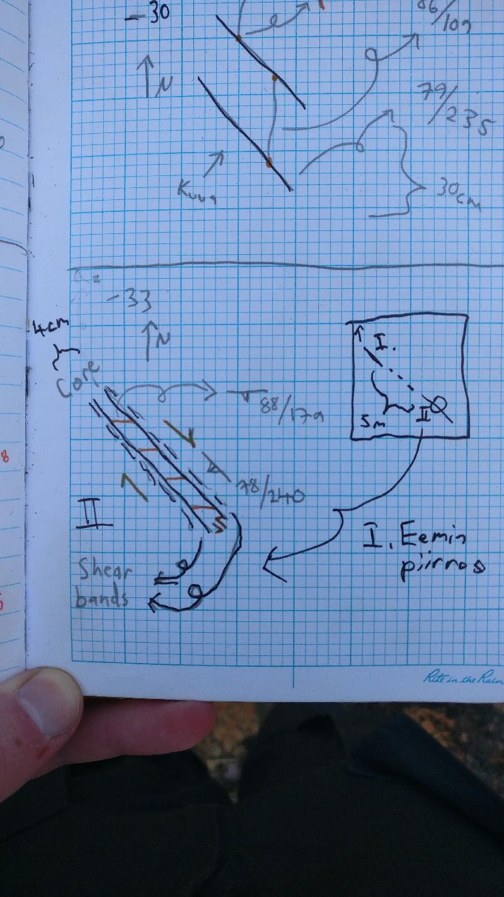
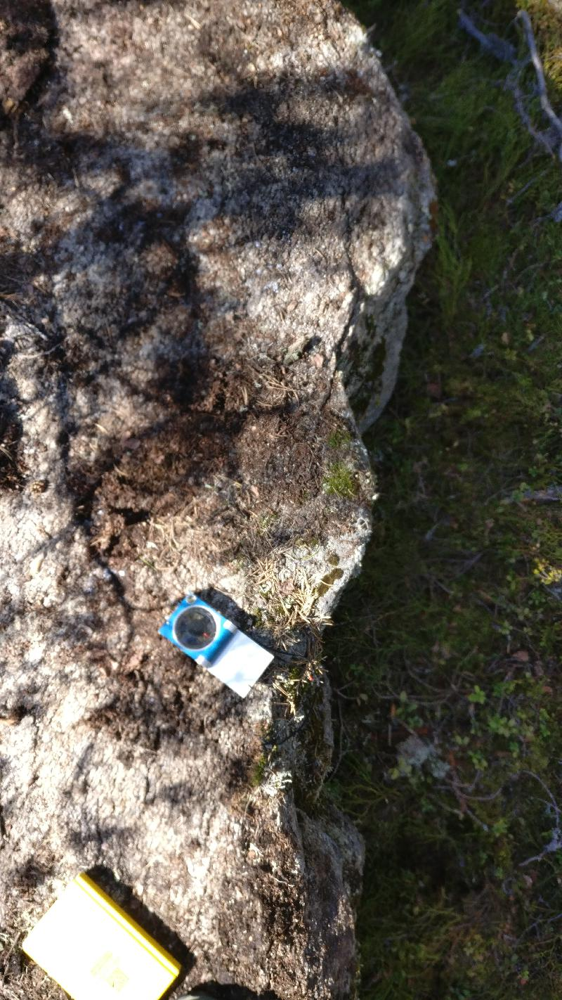

<!DOCTYPE html>
<head>    
    <meta http-equiv="content-type" content="text/html; charset=UTF-8" />
    
        <script>
            L_NO_TOUCH = false;
            L_DISABLE_3D = false;
        </script>
    
    <style>html, body {width: 100%;height: 100%;margin: 0;padding: 0;}</style>
    <style>#map {position:absolute;top:0;bottom:0;right:0;left:0;}</style>
    <script src="https://cdn.jsdelivr.net/npm/leaflet@1.6.0/dist/leaflet.js"></script>
    <script src="https://code.jquery.com/jquery-1.12.4.min.js"></script>
    <script src="https://maxcdn.bootstrapcdn.com/bootstrap/3.2.0/js/bootstrap.min.js"></script>
    <script src="https://cdnjs.cloudflare.com/ajax/libs/Leaflet.awesome-markers/2.0.2/leaflet.awesome-markers.js"></script>
    <link rel="stylesheet" href="https://cdn.jsdelivr.net/npm/leaflet@1.6.0/dist/leaflet.css"/>
    <link rel="stylesheet" href="https://maxcdn.bootstrapcdn.com/bootstrap/3.2.0/css/bootstrap.min.css"/>
    <link rel="stylesheet" href="https://maxcdn.bootstrapcdn.com/bootstrap/3.2.0/css/bootstrap-theme.min.css"/>
    <link rel="stylesheet" href="https://maxcdn.bootstrapcdn.com/font-awesome/4.6.3/css/font-awesome.min.css"/>
    <link rel="stylesheet" href="https://cdnjs.cloudflare.com/ajax/libs/Leaflet.awesome-markers/2.0.2/leaflet.awesome-markers.css"/>
    <link rel="stylesheet" href="https://cdn.jsdelivr.net/gh/python-visualization/folium/folium/templates/leaflet.awesome.rotate.min.css"/>
    <link rel="stylesheet" href="styles.css"/>
    
            <meta name="viewport" content="width=device-width,
                initial-scale=1.0, maximum-scale=1.0, user-scalable=no" />
            <style>
                #map_ae859f6719964c609d4b7046fb537f17 {
                    position: relative;
                    width: 100.0%;
                    height: 100.0%;
                    left: 0.0%;
                    top: 0.0%;
                }
            </style>
        
</head>
<body>    
    
            <div class="folium-map" id="map_ae859f6719964c609d4b7046fb537f17" ></div>
        
</body>
<script>    
    
            var map_ae859f6719964c609d4b7046fb537f17 = L.map(
                "map_ae859f6719964c609d4b7046fb537f17",
                {
                    center: [61.41685879782263, 23.411858004859127],
                    crs: L.CRS.EPSG3857,
                    zoom: 10,
                    zoomControl: true,
                    preferCanvas: false,
                }
            );

            

        
    
            var tile_layer_d33c424ae2da41fab2a6621ddf3094ef = L.tileLayer(
                "https://{s}.tile.openstreetmap.org/{z}/{x}/{y}.png",
                {"attribution": "Data by \u0026copy; \u003ca href=\"http://openstreetmap.org\"\u003eOpenStreetMap\u003c/a\u003e, under \u003ca href=\"http://www.openstreetmap.org/copyright\"\u003eODbL\u003c/a\u003e.", "detectRetina": false, "maxNativeZoom": 18, "maxZoom": 18, "minZoom": 0, "noWrap": false, "opacity": 1, "subdomains": "abc", "tms": false}
            ).addTo(map_ae859f6719964c609d4b7046fb537f17);
        
    
            var marker_028b5718f87248cc8e2e3b87988b0c6d = L.marker(
                [62.70746425, 22.34853267],
                {}
            ).addTo(map_ae859f6719964c609d4b7046fb537f17);
        
    
            var icon_b3ac85bc02c24de2abfab8ab63432535 = L.AwesomeMarkers.icon(
                {"extraClasses": "fa-rotate-115", "icon": "glyphicon-arrow-up", "iconColor": "white", "markerColor": "blue", "prefix": "glyphicon"}
            );
            marker_028b5718f87248cc8e2e3b87988b0c6d.setIcon(icon_b3ac85bc02c24de2abfab8ab63432535);
        
    
        var popup_1c24d2606cec4086a952ac8e1138f4bd = L.popup({"maxWidth": "100%"});

        
            var html_b831c70d042041e985669b441e36335b = $(`<div id="html_b831c70d042041e985669b441e36335b" style="width: 100.0%; height: 100.0%;"><h3>NO-2021-1</h3> <h4>Planar Structures</h4> <table> <thead> <tr> <th align="right">DIP</th> <th align="right">DIRECTION_OF_DIP</th> <th align="left">STYPE_TEXT</th> <th align="left">FOL_TYPE_TEXT</th> </tr> </thead> <tbody> <tr> <td align="right">74</td> <td align="right">74</td> <td align="left">Foliation</td> <td align="left">Penetrative foliation</td> </tr> <tr> <td align="right">81</td> <td align="right">302</td> <td align="left">Fault</td> <td align="left"></td> </tr> <tr> <td align="right">80</td> <td align="right">30</td> <td align="left">Fault</td> <td align="left"></td> </tr> </tbody> </table> <h4>Linear Structures</h4> <table> <thead> <tr> <th align="right">DIRECTION</th> <th align="right">PLUNGE</th> <th align="left">STYPE_TEXT</th> </tr> </thead> <tbody> <tr> <td align="right">115</td> <td align="right">59</td> <td align="left">Lineation</td> </tr> </tbody> </table> <h4>Rock Observations</h4> <table> <thead> <tr> <th align="left">REMARKS</th> <th align="left">FIELD_NAME</th> </tr> </thead> <tbody> <tr> <td align="left"></td> <td align="left">Paragneiss</td> </tr> </tbody> </table> <h4>Observation remarks</h4> <p>Lohkosuuntia</p> <h4>Images</h4></div>`)[0];
            popup_1c24d2606cec4086a952ac8e1138f4bd.setContent(html_b831c70d042041e985669b441e36335b);
        

        marker_028b5718f87248cc8e2e3b87988b0c6d.bindPopup(popup_1c24d2606cec4086a952ac8e1138f4bd)
        ;

        
    
    
            marker_028b5718f87248cc8e2e3b87988b0c6d.bindTooltip(
                `<div>
                     NO-2021-1
                 </div>`,
                {"sticky": true}
            );
        
    
            var marker_3d1a0af0bd504391a47e27a58cedd824 = L.marker(
                [62.73067318, 22.37575849],
                {}
            ).addTo(map_ae859f6719964c609d4b7046fb537f17);
        
    
            var icon_16da6d6f8b994f02b13ab47437c182be = L.AwesomeMarkers.icon(
                {"extraClasses": "fa-rotate-0.0", "icon": "glyphicon-arrow-up", "iconColor": "white", "markerColor": "blue", "prefix": "glyphicon"}
            );
            marker_3d1a0af0bd504391a47e27a58cedd824.setIcon(icon_16da6d6f8b994f02b13ab47437c182be);
        
    
        var popup_019999d5f41e4d7ab3913963f381e98c = L.popup({"maxWidth": "100%"});

        
            var html_cf89c34d6a0540bab7344249d62aac33 = $(`<div id="html_cf89c34d6a0540bab7344249d62aac33" style="width: 100.0%; height: 100.0%;"><h3>NO-2021-4</h3> <h4>Planar Structures</h4> <table> <thead> <tr> <th align="right">DIP</th> <th align="right">DIRECTION_OF_DIP</th> <th align="left">STYPE_TEXT</th> <th align="left">FOL_TYPE_TEXT</th> </tr> </thead> <tbody> <tr> <td align="right">1</td> <td align="right">93</td> <td align="left">Fault</td> <td align="left"></td> </tr> <tr> <td align="right">81</td> <td align="right">354</td> <td align="left">Foliation</td> <td align="left">Not applicable</td> </tr> <tr> <td align="right">84</td> <td align="right">81</td> <td align="left">Fault</td> <td align="left"></td> </tr> <tr> <td align="right">77</td> <td align="right">168</td> <td align="left">Fault</td> <td align="left"></td> </tr> </tbody> </table> <h4></h4> <h4></h4> <h4>Observation remarks</h4> <p>Sahalaitainen hylly, killegneissi, pegmatiittia, liuskeisuus kaatuilee</p> <h4>Images</h4> <p><a href="kapalo_imgs/NO-2021-4.k1@5916234659612036702.jpg"></a>Sahalaidat</p></div>`)[0];
            popup_019999d5f41e4d7ab3913963f381e98c.setContent(html_cf89c34d6a0540bab7344249d62aac33);
        

        marker_3d1a0af0bd504391a47e27a58cedd824.bindPopup(popup_019999d5f41e4d7ab3913963f381e98c)
        ;

        
    
    
            marker_3d1a0af0bd504391a47e27a58cedd824.bindTooltip(
                `<div>
                     NO-2021-4
                 </div>`,
                {"sticky": true}
            );
        
    
            var marker_0d1e09e95aae47909370534c71c59f57 = L.marker(
                [62.73093098, 22.3763802],
                {}
            ).addTo(map_ae859f6719964c609d4b7046fb537f17);
        
    
            var icon_f6ebb03dc2aa4d5ca56674ab28b4fbff = L.AwesomeMarkers.icon(
                {"extraClasses": "fa-rotate-97", "icon": "glyphicon-arrow-up", "iconColor": "white", "markerColor": "blue", "prefix": "glyphicon"}
            );
            marker_0d1e09e95aae47909370534c71c59f57.setIcon(icon_f6ebb03dc2aa4d5ca56674ab28b4fbff);
        
    
        var popup_7b0f2ce5ed0a4e5fa348e8871d3a0753 = L.popup({"maxWidth": "100%"});

        
            var html_14613d2890b745dc8bb48321cadb4002 = $(`<div id="html_14613d2890b745dc8bb48321cadb4002" style="width: 100.0%; height: 100.0%;"><h3>NO-2021-5</h3> <h4>Planar Structures</h4> <table> <thead> <tr> <th align="right">DIP</th> <th align="right">DIRECTION_OF_DIP</th> <th align="left">STYPE_TEXT</th> <th align="left">FOL_TYPE_TEXT</th> </tr> </thead> <tbody> <tr> <td align="right">83</td> <td align="right">182</td> <td align="left">Foliation</td> <td align="left">Penetrative foliation</td> </tr> <tr> <td align="right">90</td> <td align="right">83</td> <td align="left">Fault</td> <td align="left"></td> </tr> <tr> <td align="right">83</td> <td align="right">182</td> <td align="left">Fault</td> <td align="left"></td> </tr> </tbody> </table> <h4>Linear Structures</h4> <table> <thead> <tr> <th align="right">DIRECTION</th> <th align="right">PLUNGE</th> <th align="left">STYPE_TEXT</th> </tr> </thead> <tbody> <tr> <td align="right">97</td> <td align="right">62</td> <td align="left">Lineation</td> </tr> </tbody> </table> <h4>Rock Observations</h4> <table> <thead> <tr> <th align="left">REMARKS</th> <th align="left">FIELD_NAME</th> </tr> </thead> <tbody> <tr> <td align="left">Granaattikiillegneissi, budinoitumista</td> <td align="left">Paragneiss</td> </tr> </tbody> </table> <h4>Observation remarks</h4> <h4>Images</h4> <p><a href="kapalo_imgs/NO-2021-5.k1@3137781352072277875.jpg"></a>Budinoitumista, lineaatio</p></div>`)[0];
            popup_7b0f2ce5ed0a4e5fa348e8871d3a0753.setContent(html_14613d2890b745dc8bb48321cadb4002);
        

        marker_0d1e09e95aae47909370534c71c59f57.bindPopup(popup_7b0f2ce5ed0a4e5fa348e8871d3a0753)
        ;

        
    
    
            marker_0d1e09e95aae47909370534c71c59f57.bindTooltip(
                `<div>
                     NO-2021-5
                 </div>`,
                {"sticky": true}
            );
        
    
            var marker_9e06442c4f9a4edbbdc5a45e3fa30da6 = L.marker(
                [62.7309836, 22.37820031],
                {}
            ).addTo(map_ae859f6719964c609d4b7046fb537f17);
        
    
            var icon_917f3e5ac9574882b787a74f8731524b = L.AwesomeMarkers.icon(
                {"extraClasses": "fa-rotate-104", "icon": "glyphicon-arrow-up", "iconColor": "white", "markerColor": "blue", "prefix": "glyphicon"}
            );
            marker_9e06442c4f9a4edbbdc5a45e3fa30da6.setIcon(icon_917f3e5ac9574882b787a74f8731524b);
        
    
        var popup_7521c6b877cc443ab63a31abba84d56e = L.popup({"maxWidth": "100%"});

        
            var html_7a9931e8602c4885bf36d53dd0d2e384 = $(`<div id="html_7a9931e8602c4885bf36d53dd0d2e384" style="width: 100.0%; height: 100.0%;"><h3>NO-2021-6</h3> <h4>Planar Structures</h4> <table> <thead> <tr> <th align="right">DIP</th> <th align="right">DIRECTION_OF_DIP</th> <th align="left">STYPE_TEXT</th> <th align="left">FOL_TYPE_TEXT</th> </tr> </thead> <tbody> <tr> <td align="right">12</td> <td align="right">302</td> <td align="left">Fault</td> <td align="left"></td> </tr> </tbody> </table> <h4>Linear Structures</h4> <table> <thead> <tr> <th align="right">DIRECTION</th> <th align="right">PLUNGE</th> <th align="left">STYPE_TEXT</th> </tr> </thead> <tbody> <tr> <td align="right">104</td> <td align="right">50</td> <td align="left">Lineation</td> </tr> </tbody> </table> <h4>Rock Observations</h4> <table> <thead> <tr> <th align="left">REMARKS</th> <th align="left">FIELD_NAME</th> </tr> </thead> <tbody> <tr> <td align="left">Granaattikiillegneissi</td> <td align="left">Paragneiss</td> </tr> </tbody> </table> <h4>Observation remarks</h4> <p>Granaattikiillegneissi, hylly, raot päättyy hieman pegmatiittiin</p> <h4>Images</h4> <p><a href="kapalo_imgs/NO-2021-6.k1@7344405924075572820.jpg"></a>Pietu piirros, karttakuva</p></div>`)[0];
            popup_7521c6b877cc443ab63a31abba84d56e.setContent(html_7a9931e8602c4885bf36d53dd0d2e384);
        

        marker_9e06442c4f9a4edbbdc5a45e3fa30da6.bindPopup(popup_7521c6b877cc443ab63a31abba84d56e)
        ;

        
    
    
            marker_9e06442c4f9a4edbbdc5a45e3fa30da6.bindTooltip(
                `<div>
                     NO-2021-6
                 </div>`,
                {"sticky": true}
            );
        
    
            var marker_aa7abd43694844e0934fed0078ff3553 = L.marker(
                [62.72968585, 22.37586387],
                {}
            ).addTo(map_ae859f6719964c609d4b7046fb537f17);
        
    
            var icon_7be92db61f7546dea01b58672b54d855 = L.AwesomeMarkers.icon(
                {"extraClasses": "fa-rotate-0.0", "icon": "glyphicon-arrow-up", "iconColor": "white", "markerColor": "blue", "prefix": "glyphicon"}
            );
            marker_aa7abd43694844e0934fed0078ff3553.setIcon(icon_7be92db61f7546dea01b58672b54d855);
        
    
        var popup_9fdc852499304bbe93b6958558cfad56 = L.popup({"maxWidth": "100%"});

        
            var html_1dc91db6d82b48e58a3d3d20615f959d = $(`<div id="html_1dc91db6d82b48e58a3d3d20615f959d" style="width: 100.0%; height: 100.0%;"><h3>NO-2021-7</h3> <h4>Planar Structures</h4> <table> <thead> <tr> <th align="right">DIP</th> <th align="right">DIRECTION_OF_DIP</th> <th align="left">STYPE_TEXT</th> <th align="left">FOL_TYPE_TEXT</th> </tr> </thead> <tbody> <tr> <td align="right">82</td> <td align="right">290</td> <td align="left">Fault</td> <td align="left"></td> </tr> <tr> <td align="right">84</td> <td align="right">348</td> <td align="left">Foliation</td> <td align="left">Penetrative foliation</td> </tr> </tbody> </table> <h4></h4> <h4>Rock Observations</h4> <table> <thead> <tr> <th align="left">REMARKS</th> <th align="left">FIELD_NAME</th> </tr> </thead> <tbody> <tr> <td align="left"></td> <td align="left">Paragneiss</td> </tr> </tbody> </table> <h4>Observation remarks</h4> <p>Rakoillut gneissi, mahd. en echelon rakoja</p> <h4>Images</h4> <p><a href="kapalo_imgs/NO-2021-7.k1@95815509244011798.jpg"></a>Rajoja <a href="kapalo_imgs/NO-2021-7.k2@6266797166284952915.jpg"></a>Eemin piirros</p></div>`)[0];
            popup_9fdc852499304bbe93b6958558cfad56.setContent(html_1dc91db6d82b48e58a3d3d20615f959d);
        

        marker_aa7abd43694844e0934fed0078ff3553.bindPopup(popup_9fdc852499304bbe93b6958558cfad56)
        ;

        
    
    
            marker_aa7abd43694844e0934fed0078ff3553.bindTooltip(
                `<div>
                     NO-2021-7
                 </div>`,
                {"sticky": true}
            );
        
    
            var marker_60c1e3df9b474245bb3d02924ad0eafe = L.marker(
                [62.72673837, 22.37202135],
                {}
            ).addTo(map_ae859f6719964c609d4b7046fb537f17);
        
    
            var icon_3a6a166a608d448db3c5278295501532 = L.AwesomeMarkers.icon(
                {"extraClasses": "fa-rotate-0.0", "icon": "glyphicon-arrow-up", "iconColor": "white", "markerColor": "blue", "prefix": "glyphicon"}
            );
            marker_60c1e3df9b474245bb3d02924ad0eafe.setIcon(icon_3a6a166a608d448db3c5278295501532);
        
    
        var popup_8f78db403fe44a57b3fa0466b1999df6 = L.popup({"maxWidth": "100%"});

        
            var html_5c84e3390c56462bbd3e52cf684528b0 = $(`<div id="html_5c84e3390c56462bbd3e52cf684528b0" style="width: 100.0%; height: 100.0%;"><h3>NO-2021-8</h3> <h4>Planar Structures</h4> <table> <thead> <tr> <th align="right">DIP</th> <th align="right">DIRECTION_OF_DIP</th> <th align="left">STYPE_TEXT</th> <th align="left">FOL_TYPE_TEXT</th> </tr> </thead> <tbody> <tr> <td align="right">68</td> <td align="right">105</td> <td align="left">Foliation</td> <td align="left">Penetrative foliation</td> </tr> <tr> <td align="right">81</td> <td align="right">301</td> <td align="left">Fault</td> <td align="left"></td> </tr> <tr> <td align="right">68</td> <td align="right">105</td> <td align="left">Fault</td> <td align="left"></td> </tr> </tbody> </table> <h4></h4> <h4></h4> <h4>Observation remarks</h4> <p>Seteittäistä rakoilua, rakoilu kaartuileva liuskeisuuden suunnassa</p> <h4>Images</h4> <p><a href="kapalo_imgs/NO-2021-8.k1@1890088495603657677.jpg"></a>Kaartuileva rakoilu liuskeisuuden kanssa <a href="kapalo_imgs/NO-2021-8.k2@6651023226741507108.jpg"></a>Rakoilu akselitason suunnassa <a href="kapalo_imgs/NO-2021-8.k3@7144496857566832860.jpg">('Hyllyrakoilu, vallitseva lokaalisti', 'NO-2021-8.k3')</a> <a href="kapalo_imgs/NO-2021-8.k4@2076901861952633935.jpg">('Eemin piirros, noin 5 m paljastumaleveys', 'NO-2021-8.k4')</a></p></div>`)[0];
            popup_8f78db403fe44a57b3fa0466b1999df6.setContent(html_5c84e3390c56462bbd3e52cf684528b0);
        

        marker_60c1e3df9b474245bb3d02924ad0eafe.bindPopup(popup_8f78db403fe44a57b3fa0466b1999df6)
        ;

        
    
    
            marker_60c1e3df9b474245bb3d02924ad0eafe.bindTooltip(
                `<div>
                     NO-2021-8
                 </div>`,
                {"sticky": true}
            );
        
    
            var marker_e96ddebccb6e46148f080a10073f51dc = L.marker(
                [62.72496681, 22.37214781],
                {}
            ).addTo(map_ae859f6719964c609d4b7046fb537f17);
        
    
            var icon_c434ea1e7a0a45b082f517117ce1c6af = L.AwesomeMarkers.icon(
                {"extraClasses": "fa-rotate-110", "icon": "glyphicon-arrow-up", "iconColor": "white", "markerColor": "blue", "prefix": "glyphicon"}
            );
            marker_e96ddebccb6e46148f080a10073f51dc.setIcon(icon_c434ea1e7a0a45b082f517117ce1c6af);
        
    
        var popup_1ab05f72c265469eb3e270d4b1129c4c = L.popup({"maxWidth": "100%"});

        
            var html_8bfe5efe5eba430889d53c5436d5dbad = $(`<div id="html_8bfe5efe5eba430889d53c5436d5dbad" style="width: 100.0%; height: 100.0%;"><h3>NO-2021-9</h3> <h4>Planar Structures</h4> <table> <thead> <tr> <th align="right">DIP</th> <th align="right">DIRECTION_OF_DIP</th> <th align="left">STYPE_TEXT</th> <th align="left">FOL_TYPE_TEXT</th> </tr> </thead> <tbody> <tr> <td align="right">78</td> <td align="right">57</td> <td align="left">Fault</td> <td align="left"></td> </tr> <tr> <td align="right">87</td> <td align="right">283</td> <td align="left">Fault</td> <td align="left"></td> </tr> <tr> <td align="right">62</td> <td align="right">81</td> <td align="left">Foliation</td> <td align="left">Penetrative foliation</td> </tr> </tbody> </table> <h4>Linear Structures</h4> <table> <thead> <tr> <th align="right">DIRECTION</th> <th align="right">PLUNGE</th> <th align="left">STYPE_TEXT</th> </tr> </thead> <tbody> <tr> <td align="right">110</td> <td align="right">59</td> <td align="left">Lineation</td> </tr> </tbody> </table> <h4></h4> <h4>Observation remarks</h4> <p>Granaattikiillegneissi</p> <h4>Images</h4></div>`)[0];
            popup_1ab05f72c265469eb3e270d4b1129c4c.setContent(html_8bfe5efe5eba430889d53c5436d5dbad);
        

        marker_e96ddebccb6e46148f080a10073f51dc.bindPopup(popup_1ab05f72c265469eb3e270d4b1129c4c)
        ;

        
    
    
            marker_e96ddebccb6e46148f080a10073f51dc.bindTooltip(
                `<div>
                     NO-2021-9
                 </div>`,
                {"sticky": true}
            );
        
    
            var marker_2f19a7c7eaba46c8b86ec5e3334c438f = L.marker(
                [62.70508462, 22.38162386],
                {}
            ).addTo(map_ae859f6719964c609d4b7046fb537f17);
        
    
            var icon_69e37e5843064de580973b1df8cd8b0e = L.AwesomeMarkers.icon(
                {"extraClasses": "fa-rotate-0.0", "icon": "glyphicon-arrow-up", "iconColor": "white", "markerColor": "blue", "prefix": "glyphicon"}
            );
            marker_2f19a7c7eaba46c8b86ec5e3334c438f.setIcon(icon_69e37e5843064de580973b1df8cd8b0e);
        
    
        var popup_2919150861d44c8991e0334253b3c09a = L.popup({"maxWidth": "100%"});

        
            var html_9ec1d1bf76c04e829292ad6e101a9c31 = $(`<div id="html_9ec1d1bf76c04e829292ad6e101a9c31" style="width: 100.0%; height: 100.0%;"><h3>NO-2021-10</h3> <h4>Planar Structures</h4> <table> <thead> <tr> <th align="right">DIP</th> <th align="right">DIRECTION_OF_DIP</th> <th align="left">STYPE_TEXT</th> <th align="left">FOL_TYPE_TEXT</th> </tr> </thead> <tbody> <tr> <td align="right">85</td> <td align="right">117</td> <td align="left">Fault</td> <td align="left"></td> </tr> <tr> <td align="right">79</td> <td align="right">179</td> <td align="left">Foliation</td> <td align="left">Not applicable</td> </tr> <tr> <td align="right">79</td> <td align="right">179</td> <td align="left">Fault</td> <td align="left"></td> </tr> <tr> <td align="right">81</td> <td align="right">130</td> <td align="left">Fault</td> <td align="left"></td> </tr> </tbody> </table> <h4></h4> <h4>Rock Observations</h4> <table> <thead> <tr> <th align="left">REMARKS</th> <th align="left">FIELD_NAME</th> </tr> </thead> <tbody> <tr> <td align="left">Migmatiittiutunut granaattikiillegneissi</td> <td align="left">Paragneiss</td> </tr> </tbody> </table> <h4>Observation remarks</h4> <p>Heikosti rakoillut</p> <h4>Images</h4> <p><a href="kapalo_imgs/NO-2021-10.k1@8390182995157057528.jpg"></a>Eemin piirros, abutting fractures</p></div>`)[0];
            popup_2919150861d44c8991e0334253b3c09a.setContent(html_9ec1d1bf76c04e829292ad6e101a9c31);
        

        marker_2f19a7c7eaba46c8b86ec5e3334c438f.bindPopup(popup_2919150861d44c8991e0334253b3c09a)
        ;

        
    
    
            marker_2f19a7c7eaba46c8b86ec5e3334c438f.bindTooltip(
                `<div>
                     NO-2021-10
                 </div>`,
                {"sticky": true}
            );
        
    
            var marker_392f909331fa4f508b0652410b03f7d8 = L.marker(
                [62.70247176, 22.38961982],
                {}
            ).addTo(map_ae859f6719964c609d4b7046fb537f17);
        
    
            var icon_e66aad79c6224dfaa7682795d6844dd2 = L.AwesomeMarkers.icon(
                {"extraClasses": "fa-rotate-0.0", "icon": "glyphicon-arrow-up", "iconColor": "white", "markerColor": "blue", "prefix": "glyphicon"}
            );
            marker_392f909331fa4f508b0652410b03f7d8.setIcon(icon_e66aad79c6224dfaa7682795d6844dd2);
        
    
        var popup_07f8b5fa15dd43439284c47174d1ebac = L.popup({"maxWidth": "100%"});

        
            var html_9cd69fdf820d4086b33d24117bc6a982 = $(`<div id="html_9cd69fdf820d4086b33d24117bc6a982" style="width: 100.0%; height: 100.0%;"><h3>NO-2021-11</h3> <h4>Planar Structures</h4> <table> <thead> <tr> <th align="right">DIP</th> <th align="right">DIRECTION_OF_DIP</th> <th align="left">STYPE_TEXT</th> <th align="left">FOL_TYPE_TEXT</th> </tr> </thead> <tbody> <tr> <td align="right">78</td> <td align="right">112</td> <td align="left">Foliation</td> <td align="left">Not applicable</td> </tr> <tr> <td align="right">82</td> <td align="right">58</td> <td align="left">Fault</td> <td align="left"></td> </tr> </tbody> </table> <h4></h4> <h4></h4> <h4>Observation remarks</h4> <p>Same abutting relationships as 10</p> <h4>Images</h4> <p><a href="kapalo_imgs/NO-2021-11.k1@981634463500135283.jpg"></a>Abutting relationships, Nikolas</p></div>`)[0];
            popup_07f8b5fa15dd43439284c47174d1ebac.setContent(html_9cd69fdf820d4086b33d24117bc6a982);
        

        marker_392f909331fa4f508b0652410b03f7d8.bindPopup(popup_07f8b5fa15dd43439284c47174d1ebac)
        ;

        
    
    
            marker_392f909331fa4f508b0652410b03f7d8.bindTooltip(
                `<div>
                     NO-2021-11
                 </div>`,
                {"sticky": true}
            );
        
    
            var marker_0181c368341a449d846bd197b2f4d30e = L.marker(
                [62.69900734, 22.36908579],
                {}
            ).addTo(map_ae859f6719964c609d4b7046fb537f17);
        
    
            var icon_d49be51be0e2408da52bfd4eb089cfdc = L.AwesomeMarkers.icon(
                {"extraClasses": "fa-rotate-0.0", "icon": "glyphicon-arrow-up", "iconColor": "white", "markerColor": "blue", "prefix": "glyphicon"}
            );
            marker_0181c368341a449d846bd197b2f4d30e.setIcon(icon_d49be51be0e2408da52bfd4eb089cfdc);
        
    
        var popup_c6a3e944459046a9a36f004d57febc46 = L.popup({"maxWidth": "100%"});

        
            var html_c43fa776d8654840ba38a3c48ed30ec3 = $(`<div id="html_c43fa776d8654840ba38a3c48ed30ec3" style="width: 100.0%; height: 100.0%;"><h3>NO-2021-12</h3> <h4>Planar Structures</h4> <table> <thead> <tr> <th align="right">DIP</th> <th align="right">DIRECTION_OF_DIP</th> <th align="left">STYPE_TEXT</th> <th align="left">FOL_TYPE_TEXT</th> </tr> </thead> <tbody> <tr> <td align="right">71</td> <td align="right">70</td> <td align="left">Foliation</td> <td align="left">Penetrative foliation</td> </tr> <tr> <td align="right">67</td> <td align="right">68</td> <td align="left">Fault</td> <td align="left"></td> </tr> <tr> <td align="right">63</td> <td align="right">104</td> <td align="left">Layering</td> <td align="left"></td> </tr> </tbody> </table> <h4></h4> <h4>Rock Observations</h4> <table> <thead> <tr> <th align="left">REMARKS</th> <th align="left">FIELD_NAME</th> </tr> </thead> <tbody> <tr> <td align="left">Psammiittinen paragneissi</td> <td align="left">Paragneiss</td> </tr> </tbody> </table> <h4>Observation remarks</h4> <p>Psammiittinen granaattikiillegneissi tyyppipaljastuma</p> <h4>Images</h4> <p><a href="kapalo_imgs/NO-2021-12.k1@3416277646723284354.jpg"></a>Tyyppipaljastuma</p></div>`)[0];
            popup_c6a3e944459046a9a36f004d57febc46.setContent(html_c43fa776d8654840ba38a3c48ed30ec3);
        

        marker_0181c368341a449d846bd197b2f4d30e.bindPopup(popup_c6a3e944459046a9a36f004d57febc46)
        ;

        
    
    
            marker_0181c368341a449d846bd197b2f4d30e.bindTooltip(
                `<div>
                     NO-2021-12
                 </div>`,
                {"sticky": true}
            );
        
    
            var marker_4e7fa412c962431b9ef3357b885ed8d5 = L.marker(
                [62.68172665, 22.35346898],
                {}
            ).addTo(map_ae859f6719964c609d4b7046fb537f17);
        
    
            var icon_3bc5546716e3412da5cf50933db2c6d3 = L.AwesomeMarkers.icon(
                {"extraClasses": "fa-rotate-0.0", "icon": "glyphicon-arrow-up", "iconColor": "white", "markerColor": "blue", "prefix": "glyphicon"}
            );
            marker_4e7fa412c962431b9ef3357b885ed8d5.setIcon(icon_3bc5546716e3412da5cf50933db2c6d3);
        
    
        var popup_dbc01b713f094fcfb9cd9e7deacbcae4 = L.popup({"maxWidth": "100%"});

        
            var html_aacecef1bc6647688c023b231df6f5b2 = $(`<div id="html_aacecef1bc6647688c023b231df6f5b2" style="width: 100.0%; height: 100.0%;"><h3>NO-2021-13</h3> <h4>Planar Structures</h4> <table> <thead> <tr> <th align="right">DIP</th> <th align="right">DIRECTION_OF_DIP</th> <th align="left">STYPE_TEXT</th> <th align="left">FOL_TYPE_TEXT</th> </tr> </thead> <tbody> <tr> <td align="right">36</td> <td align="right">155</td> <td align="left">Fault</td> <td align="left"></td> </tr> <tr> <td align="right">38</td> <td align="right">158</td> <td align="left">Fault</td> <td align="left"></td> </tr> <tr> <td align="right">84</td> <td align="right">138</td> <td align="left">Foliation</td> <td align="left">Not applicable</td> </tr> </tbody> </table> <h4></h4> <h4>Rock Observations</h4> <table> <thead> <tr> <th align="left">REMARKS</th> <th align="left">FIELD_NAME</th> </tr> </thead> <tbody> <tr> <td align="left">Granaattikiillegneissi</td> <td align="left">Paragneiss</td> </tr> </tbody> </table> <h4>Observation remarks</h4> <p>Lohkoinen kallio, granaattikiillegneissi, vallitseva lohkosuunta, migmatiitin takia massiivinen, liuskeisuus vaihtelee vahvasti</p> <h4>Images</h4></div>`)[0];
            popup_dbc01b713f094fcfb9cd9e7deacbcae4.setContent(html_aacecef1bc6647688c023b231df6f5b2);
        

        marker_4e7fa412c962431b9ef3357b885ed8d5.bindPopup(popup_dbc01b713f094fcfb9cd9e7deacbcae4)
        ;

        
    
    
            marker_4e7fa412c962431b9ef3357b885ed8d5.bindTooltip(
                `<div>
                     NO-2021-13
                 </div>`,
                {"sticky": true}
            );
        
    
            var marker_5d39ab27a5cf46f1ae5dc403b8fd5872 = L.marker(
                [62.68124027, 22.35494534],
                {}
            ).addTo(map_ae859f6719964c609d4b7046fb537f17);
        
    
            var icon_9ce5751dad904bb9a605e121178fe9ab = L.AwesomeMarkers.icon(
                {"extraClasses": "fa-rotate-59", "icon": "glyphicon-arrow-up", "iconColor": "white", "markerColor": "blue", "prefix": "glyphicon"}
            );
            marker_5d39ab27a5cf46f1ae5dc403b8fd5872.setIcon(icon_9ce5751dad904bb9a605e121178fe9ab);
        
    
        var popup_8315f90849bc4235af252e950e794e53 = L.popup({"maxWidth": "100%"});

        
            var html_f1c3a12036514ebfb5f43e6142bc4a36 = $(`<div id="html_f1c3a12036514ebfb5f43e6142bc4a36" style="width: 100.0%; height: 100.0%;"><h3>NO-2021-14</h3> <h4>Planar Structures</h4> <table> <thead> <tr> <th align="right">DIP</th> <th align="right">DIRECTION_OF_DIP</th> <th align="left">STYPE_TEXT</th> <th align="left">FOL_TYPE_TEXT</th> </tr> </thead> <tbody> <tr> <td align="right">52</td> <td align="right">2</td> <td align="left">Foliation</td> <td align="left">Not applicable</td> </tr> </tbody> </table> <h4>Linear Structures</h4> <table> <thead> <tr> <th align="right">DIRECTION</th> <th align="right">PLUNGE</th> <th align="left">STYPE_TEXT</th> </tr> </thead> <tbody> <tr> <td align="right">59</td> <td align="right">34</td> <td align="left">Fold axel</td> </tr> </tbody> </table> <h4>Rock Observations</h4> <table> <thead> <tr> <th align="left">REMARKS</th> <th align="left">FIELD_NAME</th> </tr> </thead> <tbody> <tr> <td align="left">Granaattikiillegneissi</td> <td align="left">Paragneiss</td> </tr> </tbody> </table> <h4>Observation remarks</h4> <p>Poimuttunut granaattikiillegneissi, migmatiittia paikoittain vaihdellen, poimuttunut liuskeisuus</p> <h4>Images</h4> <p><a href="kapalo_imgs/NO-2021-14.k1@4996106511946856627.jpg"></a>Sillimaniittipoimutus</p></div>`)[0];
            popup_8315f90849bc4235af252e950e794e53.setContent(html_f1c3a12036514ebfb5f43e6142bc4a36);
        

        marker_5d39ab27a5cf46f1ae5dc403b8fd5872.bindPopup(popup_8315f90849bc4235af252e950e794e53)
        ;

        
    
    
            marker_5d39ab27a5cf46f1ae5dc403b8fd5872.bindTooltip(
                `<div>
                     NO-2021-14
                 </div>`,
                {"sticky": true}
            );
        
    
            var marker_484e281d5a864a30935c20a57272730a = L.marker(
                [62.68261503, 22.35341122],
                {}
            ).addTo(map_ae859f6719964c609d4b7046fb537f17);
        
    
            var icon_e8040ab1b50b46cfbdc543ce3481941b = L.AwesomeMarkers.icon(
                {"extraClasses": "fa-rotate-0.0", "icon": "glyphicon-arrow-up", "iconColor": "white", "markerColor": "blue", "prefix": "glyphicon"}
            );
            marker_484e281d5a864a30935c20a57272730a.setIcon(icon_e8040ab1b50b46cfbdc543ce3481941b);
        
    
        var popup_fc89a688a63e41679542a5c4be1d548a = L.popup({"maxWidth": "100%"});

        
            var html_fee1a5d4aa3e490bb49d1b774d888304 = $(`<div id="html_fee1a5d4aa3e490bb49d1b774d888304" style="width: 100.0%; height: 100.0%;"><h3>NO-2021-15</h3> <h4>Planar Structures</h4> <table> <thead> <tr> <th align="right">DIP</th> <th align="right">DIRECTION_OF_DIP</th> <th align="left">STYPE_TEXT</th> <th align="left">FOL_TYPE_TEXT</th> </tr> </thead> <tbody> <tr> <td align="right">86</td> <td align="right">208</td> <td align="left">Fault</td> <td align="left"></td> </tr> <tr> <td align="right">89</td> <td align="right">41</td> <td align="left">Fault</td> <td align="left"></td> </tr> <tr> <td align="right">79</td> <td align="right">21</td> <td align="left">Fault</td> <td align="left"></td> </tr> <tr> <td align="right">82</td> <td align="right">320</td> <td align="left">Foliation</td> <td align="left">Not applicable</td> </tr> </tbody> </table> <h4></h4> <h4>Rock Observations</h4> <table> <thead> <tr> <th align="left">REMARKS</th> <th align="left">FIELD_NAME</th> </tr> </thead> <tbody> <tr> <td align="left"></td> <td align="left">Paragneiss</td> </tr> </tbody> </table> <h4>Observation remarks</h4> <p>Hajanaisia lohkosuuntia, ei vallitsevaa, heikko foliaatio</p> <h4>Images</h4></div>`)[0];
            popup_fc89a688a63e41679542a5c4be1d548a.setContent(html_fee1a5d4aa3e490bb49d1b774d888304);
        

        marker_484e281d5a864a30935c20a57272730a.bindPopup(popup_fc89a688a63e41679542a5c4be1d548a)
        ;

        
    
    
            marker_484e281d5a864a30935c20a57272730a.bindTooltip(
                `<div>
                     NO-2021-15
                 </div>`,
                {"sticky": true}
            );
        
    
            var marker_a97751f65f3242f1b9a71ccb9a139621 = L.marker(
                [62.69793499, 22.41906438],
                {}
            ).addTo(map_ae859f6719964c609d4b7046fb537f17);
        
    
            var icon_76e2f715104f44ef9319747f8ad1e78f = L.AwesomeMarkers.icon(
                {"extraClasses": "fa-rotate-138", "icon": "glyphicon-arrow-up", "iconColor": "white", "markerColor": "blue", "prefix": "glyphicon"}
            );
            marker_a97751f65f3242f1b9a71ccb9a139621.setIcon(icon_76e2f715104f44ef9319747f8ad1e78f);
        
    
        var popup_17c5f95cdc3242809efcee7eb7836662 = L.popup({"maxWidth": "100%"});

        
            var html_17262d14377f4eba9b7cb8f01c5e1ab1 = $(`<div id="html_17262d14377f4eba9b7cb8f01c5e1ab1" style="width: 100.0%; height: 100.0%;"><h3>NO-2021-16</h3> <h4>Planar Structures</h4> <table> <thead> <tr> <th align="right">DIP</th> <th align="right">DIRECTION_OF_DIP</th> <th align="left">STYPE_TEXT</th> <th align="left">FOL_TYPE_TEXT</th> </tr> </thead> <tbody> <tr> <td align="right">89</td> <td align="right">60</td> <td align="left">Foliation</td> <td align="left">Penetrative foliation</td> </tr> <tr> <td align="right">81</td> <td align="right">196</td> <td align="left">Fault</td> <td align="left"></td> </tr> </tbody> </table> <h4>Linear Structures</h4> <table> <thead> <tr> <th align="right">DIRECTION</th> <th align="right">PLUNGE</th> <th align="left">STYPE_TEXT</th> </tr> </thead> <tbody> <tr> <td align="right">138</td> <td align="right">59</td> <td align="left">Lineation</td> </tr> </tbody> </table> <h4>Rock Observations</h4> <table> <thead> <tr> <th align="left">REMARKS</th> <th align="left">FIELD_NAME</th> </tr> </thead> <tbody> <tr> <td align="left">Granaattikiillegneissi</td> <td align="left">Paragneiss</td> </tr> </tbody> </table> <h4>Observation remarks</h4> <p>Stromaattinen migmatiitti, granaattikiillegneissi, liuskeisuus poimuttunut/häiriintynyt migmatiitista, P21=0</p> <h4>Images</h4></div>`)[0];
            popup_17c5f95cdc3242809efcee7eb7836662.setContent(html_17262d14377f4eba9b7cb8f01c5e1ab1);
        

        marker_a97751f65f3242f1b9a71ccb9a139621.bindPopup(popup_17c5f95cdc3242809efcee7eb7836662)
        ;

        
    
    
            marker_a97751f65f3242f1b9a71ccb9a139621.bindTooltip(
                `<div>
                     NO-2021-16
                 </div>`,
                {"sticky": true}
            );
        
    
            var marker_8a30cb45b1d840efa93963b9d2ff627b = L.marker(
                [62.69465257, 22.41675793],
                {}
            ).addTo(map_ae859f6719964c609d4b7046fb537f17);
        
    
            var icon_a3b192afb8d940beab79ddf57740d9d0 = L.AwesomeMarkers.icon(
                {"extraClasses": "fa-rotate-134", "icon": "glyphicon-arrow-up", "iconColor": "white", "markerColor": "blue", "prefix": "glyphicon"}
            );
            marker_8a30cb45b1d840efa93963b9d2ff627b.setIcon(icon_a3b192afb8d940beab79ddf57740d9d0);
        
    
        var popup_d8753bc82fff4c43994a25224234187e = L.popup({"maxWidth": "100%"});

        
            var html_750e94396f854e3a9ceb40cb1f617bcf = $(`<div id="html_750e94396f854e3a9ceb40cb1f617bcf" style="width: 100.0%; height: 100.0%;"><h3>NO-2021-17</h3> <h4>Planar Structures</h4> <table> <thead> <tr> <th align="right">DIP</th> <th align="right">DIRECTION_OF_DIP</th> <th align="left">STYPE_TEXT</th> <th align="left">FOL_TYPE_TEXT</th> </tr> </thead> <tbody> <tr> <td align="right">82</td> <td align="right">168</td> <td align="left">Fault</td> <td align="left"></td> </tr> <tr> <td align="right">80</td> <td align="right">80</td> <td align="left">Foliation</td> <td align="left">Penetrative foliation</td> </tr> <tr> <td align="right">80</td> <td align="right">80</td> <td align="left">Fault</td> <td align="left"></td> </tr> <tr> <td align="right">83</td> <td align="right">115</td> <td align="left">Fault</td> <td align="left"></td> </tr> </tbody> </table> <h4>Linear Structures</h4> <table> <thead> <tr> <th align="right">DIRECTION</th> <th align="right">PLUNGE</th> <th align="left">STYPE_TEXT</th> </tr> </thead> <tbody> <tr> <td align="right">134</td> <td align="right">66</td> <td align="left">Lineation</td> </tr> </tbody> </table> <h4>Rock Observations</h4> <table> <thead> <tr> <th align="left">REMARKS</th> <th align="left">FIELD_NAME</th> </tr> </thead> <tbody> <tr> <td align="left">Granaattikiillegneissi</td> <td align="left">Paragneiss</td> </tr> </tbody> </table> <h4>Observation remarks</h4> <p>Granaattikiillegneissi, metateksiitti, heikosti rakoillut</p> <h4>Images</h4></div>`)[0];
            popup_d8753bc82fff4c43994a25224234187e.setContent(html_750e94396f854e3a9ceb40cb1f617bcf);
        

        marker_8a30cb45b1d840efa93963b9d2ff627b.bindPopup(popup_d8753bc82fff4c43994a25224234187e)
        ;

        
    
    
            marker_8a30cb45b1d840efa93963b9d2ff627b.bindTooltip(
                `<div>
                     NO-2021-17
                 </div>`,
                {"sticky": true}
            );
        
    
            var marker_5cef79fd8d524d91a105f5d7b843a3ed = L.marker(
                [62.6869695, 22.40595872],
                {}
            ).addTo(map_ae859f6719964c609d4b7046fb537f17);
        
    
            var icon_3fcdbd042db64a52a4166aa9cab578d2 = L.AwesomeMarkers.icon(
                {"extraClasses": "fa-rotate-142", "icon": "glyphicon-arrow-up", "iconColor": "white", "markerColor": "blue", "prefix": "glyphicon"}
            );
            marker_5cef79fd8d524d91a105f5d7b843a3ed.setIcon(icon_3fcdbd042db64a52a4166aa9cab578d2);
        
    
        var popup_4f43ab1673a64317a27f02452936cda1 = L.popup({"maxWidth": "100%"});

        
            var html_0fadbf279ac142908fb9c53168dd973b = $(`<div id="html_0fadbf279ac142908fb9c53168dd973b" style="width: 100.0%; height: 100.0%;"><h3>NO-2021-18</h3> <h4>Planar Structures</h4> <table> <thead> <tr> <th align="right">DIP</th> <th align="right">DIRECTION_OF_DIP</th> <th align="left">STYPE_TEXT</th> <th align="left">FOL_TYPE_TEXT</th> </tr> </thead> <tbody> <tr> <td align="right">79</td> <td align="right">103</td> <td align="left">Foliation</td> <td align="left">Penetrative foliation</td> </tr> </tbody> </table> <h4>Linear Structures</h4> <table> <thead> <tr> <th align="right">DIRECTION</th> <th align="right">PLUNGE</th> <th align="left">STYPE_TEXT</th> </tr> </thead> <tbody> <tr> <td align="right">142</td> <td align="right">68</td> <td align="left">Lineation</td> </tr> </tbody> </table> <h4></h4> <h4>Observation remarks</h4> <p>Granaattikiillegneissi, </p> <h4>Images</h4></div>`)[0];
            popup_4f43ab1673a64317a27f02452936cda1.setContent(html_0fadbf279ac142908fb9c53168dd973b);
        

        marker_5cef79fd8d524d91a105f5d7b843a3ed.bindPopup(popup_4f43ab1673a64317a27f02452936cda1)
        ;

        
    
    
            marker_5cef79fd8d524d91a105f5d7b843a3ed.bindTooltip(
                `<div>
                     NO-2021-18
                 </div>`,
                {"sticky": true}
            );
        
    
            var marker_0d6e258d8abf4f27b2f1089d94fdedd9 = L.marker(
                [62.68832002, 22.41222207],
                {}
            ).addTo(map_ae859f6719964c609d4b7046fb537f17);
        
    
            var icon_a7cf6e330a234016909aecc789172915 = L.AwesomeMarkers.icon(
                {"extraClasses": "fa-rotate-0.0", "icon": "glyphicon-arrow-up", "iconColor": "white", "markerColor": "blue", "prefix": "glyphicon"}
            );
            marker_0d6e258d8abf4f27b2f1089d94fdedd9.setIcon(icon_a7cf6e330a234016909aecc789172915);
        
    
        var popup_e9e58d977b1548ca81f706b7a5878f4c = L.popup({"maxWidth": "100%"});

        
            var html_6f7c78c8372e457890833ed289917518 = $(`<div id="html_6f7c78c8372e457890833ed289917518" style="width: 100.0%; height: 100.0%;"><h3>NO-2021-19</h3> <h4></h4> <h4></h4> <h4></h4> <h4>Observation remarks</h4> <h4>Images</h4></div>`)[0];
            popup_e9e58d977b1548ca81f706b7a5878f4c.setContent(html_6f7c78c8372e457890833ed289917518);
        

        marker_0d6e258d8abf4f27b2f1089d94fdedd9.bindPopup(popup_e9e58d977b1548ca81f706b7a5878f4c)
        ;

        
    
    
            marker_0d6e258d8abf4f27b2f1089d94fdedd9.bindTooltip(
                `<div>
                     NO-2021-19
                 </div>`,
                {"sticky": true}
            );
        
    
            var marker_b7697650a91a4ffc8d6ed7072465861e = L.marker(
                [62.68109196, 22.42446626],
                {}
            ).addTo(map_ae859f6719964c609d4b7046fb537f17);
        
    
            var icon_714fcea2ed5d43c6961f5e7f0c358098 = L.AwesomeMarkers.icon(
                {"extraClasses": "fa-rotate-0.0", "icon": "glyphicon-arrow-up", "iconColor": "white", "markerColor": "blue", "prefix": "glyphicon"}
            );
            marker_b7697650a91a4ffc8d6ed7072465861e.setIcon(icon_714fcea2ed5d43c6961f5e7f0c358098);
        
    
        var popup_bcb6d94e69324eddb635df8379bcca29 = L.popup({"maxWidth": "100%"});

        
            var html_f923b65131cd41c690ec9afec8183a3b = $(`<div id="html_f923b65131cd41c690ec9afec8183a3b" style="width: 100.0%; height: 100.0%;"><h3>NO-2021-20</h3> <h4>Planar Structures</h4> <table> <thead> <tr> <th align="right">DIP</th> <th align="right">DIRECTION_OF_DIP</th> <th align="left">STYPE_TEXT</th> <th align="left">FOL_TYPE_TEXT</th> </tr> </thead> <tbody> <tr> <td align="right">75</td> <td align="right">57</td> <td align="left">Foliation</td> <td align="left">Penetrative foliation</td> </tr> </tbody> </table> <h4></h4> <h4>Rock Observations</h4> <table> <thead> <tr> <th align="left">REMARKS</th> <th align="left">FIELD_NAME</th> </tr> </thead> <tbody> <tr> <td align="left">Granaattikiillegneissi</td> <td align="left">Paragneiss</td> </tr> </tbody> </table> <h4>Observation remarks</h4> <p>Granaattikiillegneissi, heikkoa rakoilua liuskeisuuden suunnassa</p> <h4>Images</h4></div>`)[0];
            popup_bcb6d94e69324eddb635df8379bcca29.setContent(html_f923b65131cd41c690ec9afec8183a3b);
        

        marker_b7697650a91a4ffc8d6ed7072465861e.bindPopup(popup_bcb6d94e69324eddb635df8379bcca29)
        ;

        
    
    
            marker_b7697650a91a4ffc8d6ed7072465861e.bindTooltip(
                `<div>
                     NO-2021-20
                 </div>`,
                {"sticky": true}
            );
        
    
            var marker_e5743d4e016a4ba7a11b52611553aa88 = L.marker(
                [62.68096688, 22.42395889],
                {}
            ).addTo(map_ae859f6719964c609d4b7046fb537f17);
        
    
            var icon_1dc6552b13c240c09c7ee1ab4db751b3 = L.AwesomeMarkers.icon(
                {"extraClasses": "fa-rotate-0.0", "icon": "glyphicon-arrow-up", "iconColor": "white", "markerColor": "blue", "prefix": "glyphicon"}
            );
            marker_e5743d4e016a4ba7a11b52611553aa88.setIcon(icon_1dc6552b13c240c09c7ee1ab4db751b3);
        
    
        var popup_f526337484a44058a6a952251c18cff0 = L.popup({"maxWidth": "100%"});

        
            var html_b410c85cf6aa4c6783b9895cc097bc4f = $(`<div id="html_b410c85cf6aa4c6783b9895cc097bc4f" style="width: 100.0%; height: 100.0%;"><h3>NO-2021-21</h3> <h4>Planar Structures</h4> <table> <thead> <tr> <th align="right">DIP</th> <th align="right">DIRECTION_OF_DIP</th> <th align="left">STYPE_TEXT</th> <th align="left">FOL_TYPE_TEXT</th> </tr> </thead> <tbody> <tr> <td align="right">77</td> <td align="right">118</td> <td align="left">Fault</td> <td align="left"></td> </tr> <tr> <td align="right">85</td> <td align="right">87</td> <td align="left">Fault</td> <td align="left"></td> </tr> <tr> <td align="right">81</td> <td align="right">104</td> <td align="left">Foliation</td> <td align="left">Not applicable</td> </tr> </tbody> </table> <h4></h4> <h4>Rock Observations</h4> <table> <thead> <tr> <th align="left">REMARKS</th> <th align="left">FIELD_NAME</th> </tr> </thead> <tbody> <tr> <td align="left">Migmatiittinen breksia, granaattikiillegneissi</td> <td align="left">Paragneiss</td> </tr> </tbody> </table> <h4>Observation remarks</h4> <p>Migmatiittinen breksia, granaattikiillegneissi</p> <h4>Images</h4></div>`)[0];
            popup_f526337484a44058a6a952251c18cff0.setContent(html_b410c85cf6aa4c6783b9895cc097bc4f);
        

        marker_e5743d4e016a4ba7a11b52611553aa88.bindPopup(popup_f526337484a44058a6a952251c18cff0)
        ;

        
    
    
            marker_e5743d4e016a4ba7a11b52611553aa88.bindTooltip(
                `<div>
                     NO-2021-21
                 </div>`,
                {"sticky": true}
            );
        
    
            var marker_3dc91594a7c54f71b81f84fa6db01dd1 = L.marker(
                [62.66061935, 22.23958893],
                {}
            ).addTo(map_ae859f6719964c609d4b7046fb537f17);
        
    
            var icon_6a6fea4524fb4165bc10339ea83d36a6 = L.AwesomeMarkers.icon(
                {"extraClasses": "fa-rotate-0.0", "icon": "glyphicon-arrow-up", "iconColor": "white", "markerColor": "blue", "prefix": "glyphicon"}
            );
            marker_3dc91594a7c54f71b81f84fa6db01dd1.setIcon(icon_6a6fea4524fb4165bc10339ea83d36a6);
        
    
        var popup_d0b40e8d0c8744f698debf3b93b4f91e = L.popup({"maxWidth": "100%"});

        
            var html_5842fa2e2af94b33aa2eff42362714c5 = $(`<div id="html_5842fa2e2af94b33aa2eff42362714c5" style="width: 100.0%; height: 100.0%;"><h3>NO-2021-22</h3> <h4>Planar Structures</h4> <table> <thead> <tr> <th align="right">DIP</th> <th align="right">DIRECTION_OF_DIP</th> <th align="left">STYPE_TEXT</th> <th align="left">FOL_TYPE_TEXT</th> </tr> </thead> <tbody> <tr> <td align="right">90</td> <td align="right">17</td> <td align="left">Fault</td> <td align="left"></td> </tr> <tr> <td align="right">79</td> <td align="right">76</td> <td align="left">Fault</td> <td align="left"></td> </tr> <tr> <td align="right">80</td> <td align="right">136</td> <td align="left">Fault</td> <td align="left"></td> </tr> </tbody> </table> <h4></h4> <h4>Rock Observations</h4> <table> <thead> <tr> <th align="left">REMARKS</th> <th align="left">FIELD_NAME</th> </tr> </thead> <tbody> <tr> <td align="left"></td> <td align="left">Granodiorite</td> </tr> </tbody> </table> <h4>Observation remarks</h4> <p>Ei suuntausta/hyvin heikko</p> <h4>Images</h4></div>`)[0];
            popup_d0b40e8d0c8744f698debf3b93b4f91e.setContent(html_5842fa2e2af94b33aa2eff42362714c5);
        

        marker_3dc91594a7c54f71b81f84fa6db01dd1.bindPopup(popup_d0b40e8d0c8744f698debf3b93b4f91e)
        ;

        
    
    
            marker_3dc91594a7c54f71b81f84fa6db01dd1.bindTooltip(
                `<div>
                     NO-2021-22
                 </div>`,
                {"sticky": true}
            );
        
    
            var marker_e3a72bdd80b848f8ba710ba5dcc4526f = L.marker(
                [62.66182414, 22.24028092],
                {}
            ).addTo(map_ae859f6719964c609d4b7046fb537f17);
        
    
            var icon_216e39f737994e08a541680500d11e44 = L.AwesomeMarkers.icon(
                {"extraClasses": "fa-rotate-0.0", "icon": "glyphicon-arrow-up", "iconColor": "white", "markerColor": "blue", "prefix": "glyphicon"}
            );
            marker_e3a72bdd80b848f8ba710ba5dcc4526f.setIcon(icon_216e39f737994e08a541680500d11e44);
        
    
        var popup_2697cba0c0a744febb89d96a40aaddd4 = L.popup({"maxWidth": "100%"});

        
            var html_d540f308d8e54c5ba788671460a3efbb = $(`<div id="html_d540f308d8e54c5ba788671460a3efbb" style="width: 100.0%; height: 100.0%;"><h3>NO-2021-23</h3> <h4>Planar Structures</h4> <table> <thead> <tr> <th align="right">DIP</th> <th align="right">DIRECTION_OF_DIP</th> <th align="left">STYPE_TEXT</th> <th align="left">FOL_TYPE_TEXT</th> </tr> </thead> <tbody> <tr> <td align="right">89</td> <td align="right">27</td> <td align="left">Foliation</td> <td align="left">Not applicable</td> </tr> <tr> <td align="right">12</td> <td align="right">348</td> <td align="left">Fault</td> <td align="left"></td> </tr> <tr> <td align="right">81</td> <td align="right">202</td> <td align="left">Fault</td> <td align="left"></td> </tr> <tr> <td align="right">86</td> <td align="right">290</td> <td align="left">Fault</td> <td align="left"></td> </tr> </tbody> </table> <h4></h4> <h4>Rock Observations</h4> <table> <thead> <tr> <th align="left">REMARKS</th> <th align="left">FIELD_NAME</th> </tr> </thead> <tbody> <tr> <td align="left"></td> <td align="left">Granodiorite</td> </tr> </tbody> </table> <h4>Observation remarks</h4> <p>Liuskeinen graniitti, hienorakeisempia xenoliitteja/migmatisoituneita, rakoilua liuskeisuuden suunnassa. Subhorisontaalit hyllyt. Ortogonaalia rakoilua</p> <h4>Images</h4> <p><a href="kapalo_imgs/NO-2021-23.k1@7092148505218391469.jpg"></a>Subhorisontaalit hyllyt</p></div>`)[0];
            popup_2697cba0c0a744febb89d96a40aaddd4.setContent(html_d540f308d8e54c5ba788671460a3efbb);
        

        marker_e3a72bdd80b848f8ba710ba5dcc4526f.bindPopup(popup_2697cba0c0a744febb89d96a40aaddd4)
        ;

        
    
    
            marker_e3a72bdd80b848f8ba710ba5dcc4526f.bindTooltip(
                `<div>
                     NO-2021-23
                 </div>`,
                {"sticky": true}
            );
        
    
            var marker_ac70efef56664337bade235b39a385d9 = L.marker(
                [62.66163789, 22.24216498],
                {}
            ).addTo(map_ae859f6719964c609d4b7046fb537f17);
        
    
            var icon_f47ba8378813470db161434f7689f08f = L.AwesomeMarkers.icon(
                {"extraClasses": "fa-rotate-108", "icon": "glyphicon-arrow-up", "iconColor": "white", "markerColor": "blue", "prefix": "glyphicon"}
            );
            marker_ac70efef56664337bade235b39a385d9.setIcon(icon_f47ba8378813470db161434f7689f08f);
        
    
        var popup_3ac2e1c8b57c46b499a8406c5f141bc6 = L.popup({"maxWidth": "100%"});

        
            var html_537ec92131ae4e389876b2cb6664b645 = $(`<div id="html_537ec92131ae4e389876b2cb6664b645" style="width: 100.0%; height: 100.0%;"><h3>NO-2021-24</h3> <h4>Planar Structures</h4> <table> <thead> <tr> <th align="right">DIP</th> <th align="right">DIRECTION_OF_DIP</th> <th align="left">STYPE_TEXT</th> <th align="left">FOL_TYPE_TEXT</th> </tr> </thead> <tbody> <tr> <td align="right">79</td> <td align="right">246</td> <td align="left">Fault</td> <td align="left"></td> </tr> <tr> <td align="right">6</td> <td align="right">251</td> <td align="left">Fault</td> <td align="left"></td> </tr> <tr> <td align="right">80</td> <td align="right">200</td> <td align="left">Foliation</td> <td align="left">Penetrative foliation</td> </tr> <tr> <td align="right">80</td> <td align="right">192</td> <td align="left">Foliation</td> <td align="left">Penetrative foliation</td> </tr> <tr> <td align="right">80</td> <td align="right">200</td> <td align="left">Fault</td> <td align="left"></td> </tr> </tbody> </table> <h4>Linear Structures</h4> <table> <thead> <tr> <th align="right">DIRECTION</th> <th align="right">PLUNGE</th> <th align="left">STYPE_TEXT</th> </tr> </thead> <tbody> <tr> <td align="right">108</td> <td align="right">36</td> <td align="left">Lineation</td> </tr> </tbody> </table> <h4>Rock Observations</h4> <table> <thead> <tr> <th align="left">REMARKS</th> <th align="left">FIELD_NAME</th> </tr> </thead> <tbody> <tr> <td align="left">Liuskeinen granodioriitti</td> <td align="left">Granodiorite</td> </tr> </tbody> </table> <h4>Observation remarks</h4> <p>Subhorisontaalit hyllyt/raot, vahva liuskeisuus ja lineaatio</p> <h4>Images</h4> <p><a href="kapalo_imgs/NO-2021-24.k1@2071576761672133062.jpg"></a>Lineaatio <a href="kapalo_imgs/NO-2021-24.k2@5621115836257456450.jpg"></a>Liuskeinen granodioriitti</p></div>`)[0];
            popup_3ac2e1c8b57c46b499a8406c5f141bc6.setContent(html_537ec92131ae4e389876b2cb6664b645);
        

        marker_ac70efef56664337bade235b39a385d9.bindPopup(popup_3ac2e1c8b57c46b499a8406c5f141bc6)
        ;

        
    
    
            marker_ac70efef56664337bade235b39a385d9.bindTooltip(
                `<div>
                     NO-2021-24
                 </div>`,
                {"sticky": true}
            );
        
    
            var marker_9575af1af9214c8bb3bb605d2e3ace1d = L.marker(
                [62.5738546, 22.28990041],
                {}
            ).addTo(map_ae859f6719964c609d4b7046fb537f17);
        
    
            var icon_af26702186a74fe88d1c5f5c0aa92d08 = L.AwesomeMarkers.icon(
                {"extraClasses": "fa-rotate-0.0", "icon": "glyphicon-arrow-up", "iconColor": "white", "markerColor": "blue", "prefix": "glyphicon"}
            );
            marker_9575af1af9214c8bb3bb605d2e3ace1d.setIcon(icon_af26702186a74fe88d1c5f5c0aa92d08);
        
    
        var popup_815ee6c35c7a48c195e9e6ea69de38ef = L.popup({"maxWidth": "100%"});

        
            var html_476205b05d4d4c3d9be8b941b5189bae = $(`<div id="html_476205b05d4d4c3d9be8b941b5189bae" style="width: 100.0%; height: 100.0%;"><h3>NO-2021-25</h3> <h4>Planar Structures</h4> <table> <thead> <tr> <th align="right">DIP</th> <th align="right">DIRECTION_OF_DIP</th> <th align="left">STYPE_TEXT</th> <th align="left">FOL_TYPE_TEXT</th> </tr> </thead> <tbody> <tr> <td align="right">68</td> <td align="right">207</td> <td align="left">Foliation</td> <td align="left">Shear foliation</td> </tr> <tr> <td align="right">63</td> <td align="right">178</td> <td align="left">Fault</td> <td align="left"></td> </tr> <tr> <td align="right">89</td> <td align="right">81</td> <td align="left">Fault</td> <td align="left"></td> </tr> </tbody> </table> <h4></h4> <h4>Rock Observations</h4> <table> <thead> <tr> <th align="left">REMARKS</th> <th align="left">FIELD_NAME</th> </tr> </thead> <tbody> <tr> <td align="left">Hiertynyt graniitti</td> <td align="left">Granite</td> </tr> </tbody> </table> <h4>Observation remarks</h4> <p>Hiertynyt graniitti, hiertovyöhyke E-W suuntainen, paljastuma jätetty auki</p> <h4>Images</h4> <p><a href="kapalo_imgs/NO-2021-25.k1@3439250430124224931.jpg"></a>Paljastuma, yleiskuva <a href="kapalo_imgs/NO-2021-25.k2@3626994839603216486.jpg"></a>Eemin piirros <a href="kapalo_imgs/NO-2021-25.k3@4225048909532508201.jpg">('Vahva hiertymä', 'NO-2021-25.k3')</a> <a href="kapalo_imgs/NO-2021-25.k4@3409268708129690723.jpg">('Hierron kulun suunnassa, paikallisesti', 'NO-2021-25.k4')</a></p></div>`)[0];
            popup_815ee6c35c7a48c195e9e6ea69de38ef.setContent(html_476205b05d4d4c3d9be8b941b5189bae);
        

        marker_9575af1af9214c8bb3bb605d2e3ace1d.bindPopup(popup_815ee6c35c7a48c195e9e6ea69de38ef)
        ;

        
    
    
            marker_9575af1af9214c8bb3bb605d2e3ace1d.bindTooltip(
                `<div>
                     NO-2021-25
                 </div>`,
                {"sticky": true}
            );
        
    
            var marker_5e8a239ac78949fda2f125bed96358cc = L.marker(
                [62.57311518, 22.29065639],
                {}
            ).addTo(map_ae859f6719964c609d4b7046fb537f17);
        
    
            var icon_0277136bb0cd4f3eb6b6993b46a2de40 = L.AwesomeMarkers.icon(
                {"extraClasses": "fa-rotate-0.0", "icon": "glyphicon-arrow-up", "iconColor": "white", "markerColor": "blue", "prefix": "glyphicon"}
            );
            marker_5e8a239ac78949fda2f125bed96358cc.setIcon(icon_0277136bb0cd4f3eb6b6993b46a2de40);
        
    
        var popup_70f1494cc02b439eb53cfd3e4df175fd = L.popup({"maxWidth": "100%"});

        
            var html_6456667aa6604659900cc00251027bb4 = $(`<div id="html_6456667aa6604659900cc00251027bb4" style="width: 100.0%; height: 100.0%;"><h3>NO-2021-26</h3> <h4>Planar Structures</h4> <table> <thead> <tr> <th align="right">DIP</th> <th align="right">DIRECTION_OF_DIP</th> <th align="left">STYPE_TEXT</th> <th align="left">FOL_TYPE_TEXT</th> </tr> </thead> <tbody> <tr> <td align="right">66</td> <td align="right">238</td> <td align="left">Foliation</td> <td align="left">Shear foliation</td> </tr> <tr> <td align="right">89</td> <td align="right">119</td> <td align="left">Fault</td> <td align="left"></td> </tr> </tbody> </table> <h4></h4> <h4>Rock Observations</h4> <table> <thead> <tr> <th align="left">REMARKS</th> <th align="left">FIELD_NAME</th> </tr> </thead> <tbody> <tr> <td align="left">Hiertynyt graniitti</td> <td align="left">Granite</td> </tr> </tbody> </table> <h4>Observation remarks</h4> <p>Hiertynyt graniitti, hierron ydin keskittynyt, ytimen lähistöllä graniitti jo suuntautumaton</p> <h4>Images</h4> <p><a href="kapalo_imgs/NO-2021-26.k1@3959956821355884925.jpg"></a>Hierron ydin ja damage zone <a href="kapalo_imgs/NO-2021-26.k2@3056778573436601445.jpg"></a>Nikolaksen karttapiirros, myös -25 mukana <a href="kapalo_imgs/NO-2021-26.k3@5367084573922066153.jpg">('Eemin piirros, hierron ydin ja damage zone', 'NO-2021-26.k3')</a></p></div>`)[0];
            popup_70f1494cc02b439eb53cfd3e4df175fd.setContent(html_6456667aa6604659900cc00251027bb4);
        

        marker_5e8a239ac78949fda2f125bed96358cc.bindPopup(popup_70f1494cc02b439eb53cfd3e4df175fd)
        ;

        
    
    
            marker_5e8a239ac78949fda2f125bed96358cc.bindTooltip(
                `<div>
                     NO-2021-26
                 </div>`,
                {"sticky": true}
            );
        
    
            var marker_841049375fde449c92a86a6a30dcfabb = L.marker(
                [62.57340258, 22.28894999],
                {}
            ).addTo(map_ae859f6719964c609d4b7046fb537f17);
        
    
            var icon_967ea920139a4cdfa1e409a49c3850fb = L.AwesomeMarkers.icon(
                {"extraClasses": "fa-rotate-0.0", "icon": "glyphicon-arrow-up", "iconColor": "white", "markerColor": "blue", "prefix": "glyphicon"}
            );
            marker_841049375fde449c92a86a6a30dcfabb.setIcon(icon_967ea920139a4cdfa1e409a49c3850fb);
        
    
        var popup_5989cb75ee0f4b86b0de9eb4356439db = L.popup({"maxWidth": "100%"});

        
            var html_af8d6e61a1ac440fbbe57e89e1c1e93c = $(`<div id="html_af8d6e61a1ac440fbbe57e89e1c1e93c" style="width: 100.0%; height: 100.0%;"><h3>NO-2021-27</h3> <h4>Planar Structures</h4> <table> <thead> <tr> <th align="right">DIP</th> <th align="right">DIRECTION_OF_DIP</th> <th align="left">STYPE_TEXT</th> <th align="left">FOL_TYPE_TEXT</th> </tr> </thead> <tbody> <tr> <td align="right">86</td> <td align="right">98</td> <td align="left">Fault</td> <td align="left"></td> </tr> </tbody> </table> <h4></h4> <h4>Rock Observations</h4> <table> <thead> <tr> <th align="left">REMARKS</th> <th align="left">FIELD_NAME</th> </tr> </thead> <tbody> <tr> <td align="left"></td> <td align="left">Granite</td> </tr> </tbody> </table> <h4>Observation remarks</h4> <p>Suuntautumaton graniitti, hyvin vähän rakoillut, hieman lohkosuuntaa</p> <h4>Images</h4> <p><a href="kapalo_imgs/NO-2021-27.k1@5841755363161197186.jpg"></a>Suuntautumaton graniitti</p></div>`)[0];
            popup_5989cb75ee0f4b86b0de9eb4356439db.setContent(html_af8d6e61a1ac440fbbe57e89e1c1e93c);
        

        marker_841049375fde449c92a86a6a30dcfabb.bindPopup(popup_5989cb75ee0f4b86b0de9eb4356439db)
        ;

        
    
    
            marker_841049375fde449c92a86a6a30dcfabb.bindTooltip(
                `<div>
                     NO-2021-27
                 </div>`,
                {"sticky": true}
            );
        
    
            var marker_a5abbd9d2b544f3c8a1672b9dd7c2612 = L.marker(
                [62.57338247, 22.28541481],
                {}
            ).addTo(map_ae859f6719964c609d4b7046fb537f17);
        
    
            var icon_b541d56baac3451eaba19a28dc730753 = L.AwesomeMarkers.icon(
                {"extraClasses": "fa-rotate-0.0", "icon": "glyphicon-arrow-up", "iconColor": "white", "markerColor": "blue", "prefix": "glyphicon"}
            );
            marker_a5abbd9d2b544f3c8a1672b9dd7c2612.setIcon(icon_b541d56baac3451eaba19a28dc730753);
        
    
        var popup_a1382937243d4f89b6b7b1d9bad53763 = L.popup({"maxWidth": "100%"});

        
            var html_5196a1207fa34f579263d2864de7aff1 = $(`<div id="html_5196a1207fa34f579263d2864de7aff1" style="width: 100.0%; height: 100.0%;"><h3>NO-2021-28</h3> <h4>Planar Structures</h4> <table> <thead> <tr> <th align="right">DIP</th> <th align="right">DIRECTION_OF_DIP</th> <th align="left">STYPE_TEXT</th> <th align="left">FOL_TYPE_TEXT</th> </tr> </thead> <tbody> <tr> <td align="right">82</td> <td align="right">297</td> <td align="left">Fault</td> <td align="left"></td> </tr> <tr> <td align="right">81</td> <td align="right">241</td> <td align="left">Fault</td> <td align="left"></td> </tr> </tbody> </table> <h4></h4> <h4>Rock Observations</h4> <table> <thead> <tr> <th align="left">REMARKS</th> <th align="left">FIELD_NAME</th> </tr> </thead> <tbody> <tr> <td align="left"></td> <td align="left">Granite</td> </tr> </tbody> </table> <h4>Observation remarks</h4> <p>Hyvin vähän rakoillut graniitti, 20x50m alueella n. 10 rakoa, pidempiä kvartsijuonia yhdessä rakosuunnassa (82/297),</p> <h4>Images</h4> <p><a href="kapalo_imgs/NO-2021-28.k1@9117600430714221631.jpg"></a>Kaksi rakosuuntaa <a href="kapalo_imgs/NO-2021-28.k2@661611217571484751.jpg"></a>Kvarsijuoni ja leikkaava rako</p></div>`)[0];
            popup_a1382937243d4f89b6b7b1d9bad53763.setContent(html_5196a1207fa34f579263d2864de7aff1);
        

        marker_a5abbd9d2b544f3c8a1672b9dd7c2612.bindPopup(popup_a1382937243d4f89b6b7b1d9bad53763)
        ;

        
    
    
            marker_a5abbd9d2b544f3c8a1672b9dd7c2612.bindTooltip(
                `<div>
                     NO-2021-28
                 </div>`,
                {"sticky": true}
            );
        
    
            var marker_cf3482c2346a4e2aad5a8663bb9394de = L.marker(
                [62.57447657, 22.28418883],
                {}
            ).addTo(map_ae859f6719964c609d4b7046fb537f17);
        
    
            var icon_6caf4c1ed1c141a5b559147b4b168935 = L.AwesomeMarkers.icon(
                {"extraClasses": "fa-rotate-0.0", "icon": "glyphicon-arrow-up", "iconColor": "white", "markerColor": "blue", "prefix": "glyphicon"}
            );
            marker_cf3482c2346a4e2aad5a8663bb9394de.setIcon(icon_6caf4c1ed1c141a5b559147b4b168935);
        
    
        var popup_965faeae96a64de784120be7af36e4bd = L.popup({"maxWidth": "100%"});

        
            var html_1358f256ca84469e8f7836d1b11b0725 = $(`<div id="html_1358f256ca84469e8f7836d1b11b0725" style="width: 100.0%; height: 100.0%;"><h3>NO-2021-29</h3> <h4>Planar Structures</h4> <table> <thead> <tr> <th align="right">DIP</th> <th align="right">DIRECTION_OF_DIP</th> <th align="left">STYPE_TEXT</th> <th align="left">FOL_TYPE_TEXT</th> </tr> </thead> <tbody> <tr> <td align="right">86</td> <td align="right">311</td> <td align="left">Fault</td> <td align="left"></td> </tr> <tr> <td align="right">74</td> <td align="right">225</td> <td align="left">Fault</td> <td align="left"></td> </tr> <tr> <td align="right">25</td> <td align="right">236</td> <td align="left">Fault</td> <td align="left"></td> </tr> </tbody> </table> <h4></h4> <h4>Rock Observations</h4> <table> <thead> <tr> <th align="left">REMARKS</th> <th align="left">FIELD_NAME</th> </tr> </thead> <tbody> <tr> <td align="left"></td> <td align="left">Granite</td> </tr> </tbody> </table> <h4>Observation remarks</h4> <p>Kaksi rakosuuntaa, suuntautumaton graniitti, muutama subhorisontaali rako</p> <h4>Images</h4> <p><a href="kapalo_imgs/NO-2021-29.k1@6618538570784006449.jpg"></a>Keskimäärin metrin välein rakoja, ainakin lokaalisti, tässä rakosuunnassa (86/311)</p></div>`)[0];
            popup_965faeae96a64de784120be7af36e4bd.setContent(html_1358f256ca84469e8f7836d1b11b0725);
        

        marker_cf3482c2346a4e2aad5a8663bb9394de.bindPopup(popup_965faeae96a64de784120be7af36e4bd)
        ;

        
    
    
            marker_cf3482c2346a4e2aad5a8663bb9394de.bindTooltip(
                `<div>
                     NO-2021-29
                 </div>`,
                {"sticky": true}
            );
        
    
            var marker_fbd3a927df324b72859104a8683acc23 = L.marker(
                [62.56834663, 22.28043699],
                {}
            ).addTo(map_ae859f6719964c609d4b7046fb537f17);
        
    
            var icon_d47c7787fec749a88906ba6e3ddde880 = L.AwesomeMarkers.icon(
                {"extraClasses": "fa-rotate-0.0", "icon": "glyphicon-arrow-up", "iconColor": "white", "markerColor": "blue", "prefix": "glyphicon"}
            );
            marker_fbd3a927df324b72859104a8683acc23.setIcon(icon_d47c7787fec749a88906ba6e3ddde880);
        
    
        var popup_bb1b19f727ac482cb502673d420f9f58 = L.popup({"maxWidth": "100%"});

        
            var html_992d91b6452d4f98b61facc04f0eb170 = $(`<div id="html_992d91b6452d4f98b61facc04f0eb170" style="width: 100.0%; height: 100.0%;"><h3>NO-2021-30</h3> <h4>Planar Structures</h4> <table> <thead> <tr> <th align="right">DIP</th> <th align="right">DIRECTION_OF_DIP</th> <th align="left">STYPE_TEXT</th> <th align="left">FOL_TYPE_TEXT</th> </tr> </thead> <tbody> <tr> <td align="right">79</td> <td align="right">235</td> <td align="left">Fault</td> <td align="left"></td> </tr> <tr> <td align="right">86</td> <td align="right">109</td> <td align="left">Fault</td> <td align="left"></td> </tr> <tr> <td align="right">-1</td> <td align="right">-1</td> <td align="left">Foliation</td> <td align="left">Not applicable</td> </tr> </tbody> </table> <h4></h4> <h4>Rock Observations</h4> <table> <thead> <tr> <th align="left">REMARKS</th> <th align="left">FIELD_NAME</th> </tr> </thead> <tbody> <tr> <td align="left"></td> <td align="left">Granite</td> </tr> </tbody> </table> <h4>Observation remarks</h4> <p>Heikosti suuntautunut graniitti, strike (134), muutama rakosuunta, vallitseva (79/235)</p> <h4>Images</h4> <p><a href="kapalo_imgs/NO-2021-30.k1@6260222543774811217.jpg"></a>Rakosuunnat, kompassin alapuolella juoni vallitsevassa rakosuunnassa <a href="kapalo_imgs/NO-2021-30.k2@404883961438407781.jpg"></a>Nikolaksen piirros</p></div>`)[0];
            popup_bb1b19f727ac482cb502673d420f9f58.setContent(html_992d91b6452d4f98b61facc04f0eb170);
        

        marker_fbd3a927df324b72859104a8683acc23.bindPopup(popup_bb1b19f727ac482cb502673d420f9f58)
        ;

        
    
    
            marker_fbd3a927df324b72859104a8683acc23.bindTooltip(
                `<div>
                     NO-2021-30
                 </div>`,
                {"sticky": true}
            );
        
    
            var marker_bf753a68b9b54f5aa8455958d4ef552a = L.marker(
                [62.57002305, 22.27927005],
                {}
            ).addTo(map_ae859f6719964c609d4b7046fb537f17);
        
    
            var icon_e4c9c1ddcd0a4e78a9588272150c0312 = L.AwesomeMarkers.icon(
                {"extraClasses": "fa-rotate-0.0", "icon": "glyphicon-arrow-up", "iconColor": "white", "markerColor": "blue", "prefix": "glyphicon"}
            );
            marker_bf753a68b9b54f5aa8455958d4ef552a.setIcon(icon_e4c9c1ddcd0a4e78a9588272150c0312);
        
    
        var popup_27dd041b1db047d8a3507eced65d0655 = L.popup({"maxWidth": "100%"});

        
            var html_6f0d31b5a1da4297b05c4aaecc05a182 = $(`<div id="html_6f0d31b5a1da4297b05c4aaecc05a182" style="width: 100.0%; height: 100.0%;"><h3>NO-2021-31</h3> <h4>Planar Structures</h4> <table> <thead> <tr> <th align="right">DIP</th> <th align="right">DIRECTION_OF_DIP</th> <th align="left">STYPE_TEXT</th> <th align="left">FOL_TYPE_TEXT</th> </tr> </thead> <tbody> <tr> <td align="right">89</td> <td align="right">239</td> <td align="left">Layering</td> <td align="left"></td> </tr> <tr> <td align="right">89</td> <td align="right">239</td> <td align="left">Fault</td> <td align="left"></td> </tr> <tr> <td align="right">89</td> <td align="right">96</td> <td align="left">Fault</td> <td align="left"></td> </tr> </tbody> </table> <h4></h4> <h4>Rock Observations</h4> <table> <thead> <tr> <th align="left">REMARKS</th> <th align="left">FIELD_NAME</th> </tr> </thead> <tbody> <tr> <td align="left"></td> <td align="left">Granite</td> </tr> </tbody> </table> <h4>Observation remarks</h4> <p>Juoni, juonen suunta myös päärakosuunta (89/239), heikko toinen rakosuunta (89/096)</p> <h4>Images</h4> <p><a href="kapalo_imgs/NO-2021-31.k1@3215588256503053727.jpg"></a>Juoni</p></div>`)[0];
            popup_27dd041b1db047d8a3507eced65d0655.setContent(html_6f0d31b5a1da4297b05c4aaecc05a182);
        

        marker_bf753a68b9b54f5aa8455958d4ef552a.bindPopup(popup_27dd041b1db047d8a3507eced65d0655)
        ;

        
    
    
            marker_bf753a68b9b54f5aa8455958d4ef552a.bindTooltip(
                `<div>
                     NO-2021-31
                 </div>`,
                {"sticky": true}
            );
        
    
            var marker_1e381bde578c4028ad7205a9b498dd28 = L.marker(
                [62.57068182, 22.28563212],
                {}
            ).addTo(map_ae859f6719964c609d4b7046fb537f17);
        
    
            var icon_4cd4bebc868f4d728df185650d3cab66 = L.AwesomeMarkers.icon(
                {"extraClasses": "fa-rotate-0.0", "icon": "glyphicon-arrow-up", "iconColor": "white", "markerColor": "blue", "prefix": "glyphicon"}
            );
            marker_1e381bde578c4028ad7205a9b498dd28.setIcon(icon_4cd4bebc868f4d728df185650d3cab66);
        
    
        var popup_a24d3ae6a287432db5cc2b8ac7a35a82 = L.popup({"maxWidth": "100%"});

        
            var html_de7f885b556044b8aeb1d896f8c25b97 = $(`<div id="html_de7f885b556044b8aeb1d896f8c25b97" style="width: 100.0%; height: 100.0%;"><h3>NO-2021-32</h3> <h4>Planar Structures</h4> <table> <thead> <tr> <th align="right">DIP</th> <th align="right">DIRECTION_OF_DIP</th> <th align="left">STYPE_TEXT</th> <th align="left">FOL_TYPE_TEXT</th> </tr> </thead> <tbody> <tr> <td align="right">90</td> <td align="right">100</td> <td align="left">Fault</td> <td align="left"></td> </tr> <tr> <td align="right">213</td> <td align="right">83</td> <td align="left">Fault</td> <td align="left"></td> </tr> </tbody> </table> <h4></h4> <h4>Rock Observations</h4> <table> <thead> <tr> <th align="left">REMARKS</th> <th align="left">FIELD_NAME</th> </tr> </thead> <tbody> <tr> <td align="left"></td> <td align="left">Granite</td> </tr> </tbody> </table> <h4>Observation remarks</h4> <p>Heikosti suuntautunut graniitti, jossa koostumusvaihtelua, kaksi rakosuuntaa, salmiakkokuviossa, heikko suuntaus (122)</p> <h4>Images</h4> <p><a href="kapalo_imgs/NO-2021-32.k1@3327858993267940708.jpg"></a>Koostumusvaihtelu</p></div>`)[0];
            popup_a24d3ae6a287432db5cc2b8ac7a35a82.setContent(html_de7f885b556044b8aeb1d896f8c25b97);
        

        marker_1e381bde578c4028ad7205a9b498dd28.bindPopup(popup_a24d3ae6a287432db5cc2b8ac7a35a82)
        ;

        
    
    
            marker_1e381bde578c4028ad7205a9b498dd28.bindTooltip(
                `<div>
                     NO-2021-32
                 </div>`,
                {"sticky": true}
            );
        
    
            var marker_2e242b69c7a241698d203cb25a2c97b8 = L.marker(
                [62.57089287, 22.28858217],
                {}
            ).addTo(map_ae859f6719964c609d4b7046fb537f17);
        
    
            var icon_30173c2f460f48d396bf0082a8410ea0 = L.AwesomeMarkers.icon(
                {"extraClasses": "fa-rotate-0.0", "icon": "glyphicon-arrow-up", "iconColor": "white", "markerColor": "blue", "prefix": "glyphicon"}
            );
            marker_2e242b69c7a241698d203cb25a2c97b8.setIcon(icon_30173c2f460f48d396bf0082a8410ea0);
        
    
        var popup_d42c79253b9a4c7ba0375511f310343c = L.popup({"maxWidth": "100%"});

        
            var html_1c037a371f364323b82f272ff674ae42 = $(`<div id="html_1c037a371f364323b82f272ff674ae42" style="width: 100.0%; height: 100.0%;"><h3>NO-2021-33</h3> <h4>Planar Structures</h4> <table> <thead> <tr> <th align="right">DIP</th> <th align="right">DIRECTION_OF_DIP</th> <th align="left">STYPE_TEXT</th> <th align="left">FOL_TYPE_TEXT</th> </tr> </thead> <tbody> <tr> <td align="right">73</td> <td align="right">243</td> <td align="left">Foliation</td> <td align="left">Shear foliation</td> </tr> <tr> <td align="right">88</td> <td align="right">166</td> <td align="left">Fault</td> <td align="left"></td> </tr> </tbody> </table> <h4></h4> <h4>Rock Observations</h4> <table> <thead> <tr> <th align="left">REMARKS</th> <th align="left">FIELD_NAME</th> </tr> </thead> <tbody> <tr> <td align="left"></td> <td align="left">Granite</td> </tr> </tbody> </table> <h4>Observation remarks</h4> <p>Hiertosauma/vyöhyke graniitissa, jätetty auki</p> <h4>Images</h4> <p><a href="kapalo_imgs/NO-2021-33.k1@6283670569394667171.jpg"></a>Nikolaksen piirros, II <a href="kapalo_imgs/NO-2021-33.k2@1387024324833179310.jpg"></a>Eemin piirros, I <a href="kapalo_imgs/NO-2021-33.k3@2027859405088706632.jpg">('Nikolaksen piirros, II, kvartsihiertovyöhyke', 'NO-2021-33.k3')</a> <a href="kapalo_imgs/NO-2021-33.k4@5103081159437814764.jpg">('I, isompi vyöhyke', 'NO-2021-33.k4')</a></p></div>`)[0];
            popup_d42c79253b9a4c7ba0375511f310343c.setContent(html_1c037a371f364323b82f272ff674ae42);
        

        marker_2e242b69c7a241698d203cb25a2c97b8.bindPopup(popup_d42c79253b9a4c7ba0375511f310343c)
        ;

        
    
    
            marker_2e242b69c7a241698d203cb25a2c97b8.bindTooltip(
                `<div>
                     NO-2021-33
                 </div>`,
                {"sticky": true}
            );
        
    
            var marker_277d3a44d59a4333b5dd31135ae981d1 = L.marker(
                [62.56989568, 22.28802939],
                {}
            ).addTo(map_ae859f6719964c609d4b7046fb537f17);
        
    
            var icon_0650300195c9489c93f0bf57b5604c0f = L.AwesomeMarkers.icon(
                {"extraClasses": "fa-rotate-70", "icon": "glyphicon-arrow-up", "iconColor": "white", "markerColor": "blue", "prefix": "glyphicon"}
            );
            marker_277d3a44d59a4333b5dd31135ae981d1.setIcon(icon_0650300195c9489c93f0bf57b5604c0f);
        
    
        var popup_bce28b141ee1483f910bacf3de6ebbfa = L.popup({"maxWidth": "100%"});

        
            var html_3cc00ff233e54bf7bd2f0f276f60799c = $(`<div id="html_3cc00ff233e54bf7bd2f0f276f60799c" style="width: 100.0%; height: 100.0%;"><h3>NO-2021-34</h3> <h4>Planar Structures</h4> <table> <thead> <tr> <th align="right">DIP</th> <th align="right">DIRECTION_OF_DIP</th> <th align="left">STYPE_TEXT</th> <th align="left">FOL_TYPE_TEXT</th> </tr> </thead> <tbody> <tr> <td align="right">77</td> <td align="right">30</td> <td align="left">Foliation</td> <td align="left">Shear foliation</td> </tr> <tr> <td align="right">84</td> <td align="right">333</td> <td align="left">Fault</td> <td align="left"></td> </tr> </tbody> </table> <h4>Linear Structures</h4> <table> <thead> <tr> <th align="right">DIRECTION</th> <th align="right">PLUNGE</th> <th align="left">STYPE_TEXT</th> </tr> </thead> <tbody> <tr> <td align="right">70</td> <td align="right">66</td> <td align="left">Lineation</td> </tr> </tbody> </table> <h4>Rock Observations</h4> <table> <thead> <tr> <th align="left">REMARKS</th> <th align="left">FIELD_NAME</th> </tr> </thead> <tbody> <tr> <td align="left"></td> <td align="left">Granite</td> </tr> </tbody> </table> <h4>Observation remarks</h4> <p>Hiertosauma graniitissa, graniitti kokonaisuudessaan hiertynyt, epävarma lineaatio hiertosaumojen mutkittelun takia</p> <h4>Images</h4> <p><a href="kapalo_imgs/NO-2021-34.k2@8195995266661844487.jpg"></a>Kuva kivestä, hiertosauma</p></div>`)[0];
            popup_bce28b141ee1483f910bacf3de6ebbfa.setContent(html_3cc00ff233e54bf7bd2f0f276f60799c);
        

        marker_277d3a44d59a4333b5dd31135ae981d1.bindPopup(popup_bce28b141ee1483f910bacf3de6ebbfa)
        ;

        
    
    
            marker_277d3a44d59a4333b5dd31135ae981d1.bindTooltip(
                `<div>
                     NO-2021-34
                 </div>`,
                {"sticky": true}
            );
        
    
            var marker_db8f3cbe9e3d410d8f980d625a79572b = L.marker(
                [62.56868171, 22.28821542],
                {}
            ).addTo(map_ae859f6719964c609d4b7046fb537f17);
        
    
            var icon_b03a848c426845408ddbee55f0d217e6 = L.AwesomeMarkers.icon(
                {"extraClasses": "fa-rotate-0.0", "icon": "glyphicon-arrow-up", "iconColor": "white", "markerColor": "blue", "prefix": "glyphicon"}
            );
            marker_db8f3cbe9e3d410d8f980d625a79572b.setIcon(icon_b03a848c426845408ddbee55f0d217e6);
        
    
        var popup_737131a7402f48569f219a4b9219c266 = L.popup({"maxWidth": "100%"});

        
            var html_58d84bd17273468aa4402efb719593f3 = $(`<div id="html_58d84bd17273468aa4402efb719593f3" style="width: 100.0%; height: 100.0%;"><h3>NO-2021-35</h3> <h4>Planar Structures</h4> <table> <thead> <tr> <th align="right">DIP</th> <th align="right">DIRECTION_OF_DIP</th> <th align="left">STYPE_TEXT</th> <th align="left">FOL_TYPE_TEXT</th> </tr> </thead> <tbody> <tr> <td align="right">59</td> <td align="right">49</td> <td align="left">Foliation</td> <td align="left">Penetrative foliation</td> </tr> <tr> <td align="right">59</td> <td align="right">329</td> <td align="left">Fault</td> <td align="left"></td> </tr> </tbody> </table> <h4></h4> <h4></h4> <h4>Observation remarks</h4> <p>Hyvin heikosti suuntautunut graniitti, lohkosuuntia heikosti</p> <h4>Images</h4></div>`)[0];
            popup_737131a7402f48569f219a4b9219c266.setContent(html_58d84bd17273468aa4402efb719593f3);
        

        marker_db8f3cbe9e3d410d8f980d625a79572b.bindPopup(popup_737131a7402f48569f219a4b9219c266)
        ;

        
    
    
            marker_db8f3cbe9e3d410d8f980d625a79572b.bindTooltip(
                `<div>
                     NO-2021-35
                 </div>`,
                {"sticky": true}
            );
        
    
            var marker_38080dd0a9ca4ebe816f1dbed6810023 = L.marker(
                [62.56921688, 22.3681737],
                {}
            ).addTo(map_ae859f6719964c609d4b7046fb537f17);
        
    
            var icon_29b6b5c4924f4433ad7cdcc21a30c0d4 = L.AwesomeMarkers.icon(
                {"extraClasses": "fa-rotate-0.0", "icon": "glyphicon-arrow-up", "iconColor": "white", "markerColor": "blue", "prefix": "glyphicon"}
            );
            marker_38080dd0a9ca4ebe816f1dbed6810023.setIcon(icon_29b6b5c4924f4433ad7cdcc21a30c0d4);
        
    
        var popup_215953a29abe4d6eb77fca7bd6ed56ad = L.popup({"maxWidth": "100%"});

        
            var html_be9f30703a5a434bb9295f0cd6ac1e74 = $(`<div id="html_be9f30703a5a434bb9295f0cd6ac1e74" style="width: 100.0%; height: 100.0%;"><h3>NO-2021-36</h3> <h4>Planar Structures</h4> <table> <thead> <tr> <th align="right">DIP</th> <th align="right">DIRECTION_OF_DIP</th> <th align="left">STYPE_TEXT</th> <th align="left">FOL_TYPE_TEXT</th> </tr> </thead> <tbody> <tr> <td align="right">83</td> <td align="right">321</td> <td align="left">Fault</td> <td align="left"></td> </tr> <tr> <td align="right">85</td> <td align="right">262</td> <td align="left">Fault</td> <td align="left"></td> </tr> <tr> <td align="right">80</td> <td align="right">61</td> <td align="left">Foliation</td> <td align="left">Penetrative foliation</td> </tr> </tbody> </table> <h4></h4> <h4>Rock Observations</h4> <table> <thead> <tr> <th align="left">REMARKS</th> <th align="left">FIELD_NAME</th> </tr> </thead> <tbody> <tr> <td align="left"></td> <td align="left">Granodiorite</td> </tr> </tbody> </table> <h4>Observation remarks</h4> <p>Heikosti suuntautunut granodioriitti, muutama rakosuunta, lohkosuuntia, epävarma lineaatio 173/30</p> <h4>Images</h4> <p><a href="kapalo_imgs/NO-2021-36.k1@2906590785664855758.jpg"></a>Heikosti suuntautunut granodioriitti</p></div>`)[0];
            popup_215953a29abe4d6eb77fca7bd6ed56ad.setContent(html_be9f30703a5a434bb9295f0cd6ac1e74);
        

        marker_38080dd0a9ca4ebe816f1dbed6810023.bindPopup(popup_215953a29abe4d6eb77fca7bd6ed56ad)
        ;

        
    
    
            marker_38080dd0a9ca4ebe816f1dbed6810023.bindTooltip(
                `<div>
                     NO-2021-36
                 </div>`,
                {"sticky": true}
            );
        
    
            var marker_8fca61b9999a419eab749d2ba0349e9b = L.marker(
                [62.5927429, 22.39457184],
                {}
            ).addTo(map_ae859f6719964c609d4b7046fb537f17);
        
    
            var icon_1867b5b1abba463f8f924a6eb572d48c = L.AwesomeMarkers.icon(
                {"extraClasses": "fa-rotate-0.0", "icon": "glyphicon-arrow-up", "iconColor": "white", "markerColor": "blue", "prefix": "glyphicon"}
            );
            marker_8fca61b9999a419eab749d2ba0349e9b.setIcon(icon_1867b5b1abba463f8f924a6eb572d48c);
        
    
        var popup_722f94e88b874b9aa84555c83c989ee5 = L.popup({"maxWidth": "100%"});

        
            var html_85ae0dfdf8ef477391d3206a9dc9f1f9 = $(`<div id="html_85ae0dfdf8ef477391d3206a9dc9f1f9" style="width: 100.0%; height: 100.0%;"><h3>NO-2021-37</h3> <h4>Planar Structures</h4> <table> <thead> <tr> <th align="right">DIP</th> <th align="right">DIRECTION_OF_DIP</th> <th align="left">STYPE_TEXT</th> <th align="left">FOL_TYPE_TEXT</th> </tr> </thead> <tbody> <tr> <td align="right">85</td> <td align="right">116</td> <td align="left">Fault</td> <td align="left"></td> </tr> <tr> <td align="right">87</td> <td align="right">272</td> <td align="left">Fault</td> <td align="left"></td> </tr> </tbody> </table> <h4></h4> <h4>Rock Observations</h4> <table> <thead> <tr> <th align="left">REMARKS</th> <th align="left">FIELD_NAME</th> </tr> </thead> <tbody> <tr> <td align="left"></td> <td align="left">Granodiorite</td> </tr> </tbody> </table> <h4>Observation remarks</h4> <p>Kosken vieressä avokallio, suuntautumaton granodioriitti, rakosuuntia, padon kohdalla mahdollinen dronetuskohde</p> <h4>Images</h4> <p><a href="kapalo_imgs/NO-2021-37.k1@1607954624658472583.jpg"></a>Lokaatio <a href="kapalo_imgs/NO-2021-37.k2@6313102958009277107.jpg"></a>Nikolaksen piirros, päättymissuhteita</p></div>`)[0];
            popup_722f94e88b874b9aa84555c83c989ee5.setContent(html_85ae0dfdf8ef477391d3206a9dc9f1f9);
        

        marker_8fca61b9999a419eab749d2ba0349e9b.bindPopup(popup_722f94e88b874b9aa84555c83c989ee5)
        ;

        
    
    
            marker_8fca61b9999a419eab749d2ba0349e9b.bindTooltip(
                `<div>
                     NO-2021-37
                 </div>`,
                {"sticky": true}
            );
        
    
            var marker_ff36f260ced541c2a7b94f5122487223 = L.marker(
                [62.70780442, 22.34990567],
                {}
            ).addTo(map_ae859f6719964c609d4b7046fb537f17);
        
    
            var icon_e010e84f45414475a59667e42425d2c4 = L.AwesomeMarkers.icon(
                {"extraClasses": "fa-rotate-0.0", "icon": "glyphicon-arrow-up", "iconColor": "white", "markerColor": "blue", "prefix": "glyphicon"}
            );
            marker_ff36f260ced541c2a7b94f5122487223.setIcon(icon_e010e84f45414475a59667e42425d2c4);
        
    
        var popup_bc6727e216544b30a078e55d40a56dfb = L.popup({"maxWidth": "100%"});

        
            var html_be9939300d6b46139cb4ad51914d1653 = $(`<div id="html_be9939300d6b46139cb4ad51914d1653" style="width: 100.0%; height: 100.0%;"><h3>NO-2021-38</h3> <h4>Planar Structures</h4> <table> <thead> <tr> <th align="right">DIP</th> <th align="right">DIRECTION_OF_DIP</th> <th align="left">STYPE_TEXT</th> <th align="left">FOL_TYPE_TEXT</th> </tr> </thead> <tbody> <tr> <td align="right">67</td> <td align="right">88</td> <td align="left">Fault</td> <td align="left"></td> </tr> <tr> <td align="right">85</td> <td align="right">210</td> <td align="left">Fault</td> <td align="left"></td> </tr> </tbody> </table> <h4></h4> <h4>Rock Observations</h4> <table> <thead> <tr> <th align="left">REMARKS</th> <th align="left">FIELD_NAME</th> </tr> </thead> <tbody> <tr> <td align="left"></td> <td align="left">Paragneiss</td> </tr> </tbody> </table> <h4>Observation remarks</h4> <p>Paragneissi, konkreetioita monessa suunnassa</p> <h4>Images</h4></div>`)[0];
            popup_bc6727e216544b30a078e55d40a56dfb.setContent(html_be9939300d6b46139cb4ad51914d1653);
        

        marker_ff36f260ced541c2a7b94f5122487223.bindPopup(popup_bc6727e216544b30a078e55d40a56dfb)
        ;

        
    
    
            marker_ff36f260ced541c2a7b94f5122487223.bindTooltip(
                `<div>
                     NO-2021-38
                 </div>`,
                {"sticky": true}
            );
        
    
            var marker_f6c80fa00eab458493c1c017b01e38f8 = L.marker(
                [62.70809762, 22.35215807],
                {}
            ).addTo(map_ae859f6719964c609d4b7046fb537f17);
        
    
            var icon_3e56487ceaae466992bb12622d1ecf9a = L.AwesomeMarkers.icon(
                {"extraClasses": "fa-rotate-0.0", "icon": "glyphicon-arrow-up", "iconColor": "white", "markerColor": "blue", "prefix": "glyphicon"}
            );
            marker_f6c80fa00eab458493c1c017b01e38f8.setIcon(icon_3e56487ceaae466992bb12622d1ecf9a);
        
    
        var popup_d9b29c79326d420aa93940bcd04eff12 = L.popup({"maxWidth": "100%"});

        
            var html_18fc4979c79442b5b85eded065f7f2b5 = $(`<div id="html_18fc4979c79442b5b85eded065f7f2b5" style="width: 100.0%; height: 100.0%;"><h3>NO-2021-39</h3> <h4>Planar Structures</h4> <table> <thead> <tr> <th align="right">DIP</th> <th align="right">DIRECTION_OF_DIP</th> <th align="left">STYPE_TEXT</th> <th align="left">FOL_TYPE_TEXT</th> </tr> </thead> <tbody> <tr> <td align="right">84</td> <td align="right">59</td> <td align="left">Fault</td> <td align="left"></td> </tr> <tr> <td align="right">87</td> <td align="right">353</td> <td align="left">Fault</td> <td align="left"></td> </tr> <tr> <td align="right">80</td> <td align="right">14</td> <td align="left">Foliation</td> <td align="left">Not applicable</td> </tr> </tbody> </table> <h4></h4> <h4>Rock Observations</h4> <table> <thead> <tr> <th align="left">REMARKS</th> <th align="left">FIELD_NAME</th> </tr> </thead> <tbody> <tr> <td align="left">Granaattikiillegneissi</td> <td align="left">Paragneiss</td> </tr> </tbody> </table> <h4>Observation remarks</h4> <p>Paikalliset lohkosuunnat, epäselvä tasomaisuus, lineamenttilaakso (059/84) jossa vettä pohjalla, granaattikiillegneissi</p> <h4>Images</h4></div>`)[0];
            popup_d9b29c79326d420aa93940bcd04eff12.setContent(html_18fc4979c79442b5b85eded065f7f2b5);
        

        marker_f6c80fa00eab458493c1c017b01e38f8.bindPopup(popup_d9b29c79326d420aa93940bcd04eff12)
        ;

        
    
    
            marker_f6c80fa00eab458493c1c017b01e38f8.bindTooltip(
                `<div>
                     NO-2021-39
                 </div>`,
                {"sticky": true}
            );
        
    
            var marker_cba10ee3942d41ecbdee302f7eed922c = L.marker(
                [62.70907415, 22.35158183],
                {}
            ).addTo(map_ae859f6719964c609d4b7046fb537f17);
        
    
            var icon_7ff64278146c452d97fb588bb39b279a = L.AwesomeMarkers.icon(
                {"extraClasses": "fa-rotate-145", "icon": "glyphicon-arrow-up", "iconColor": "white", "markerColor": "blue", "prefix": "glyphicon"}
            );
            marker_cba10ee3942d41ecbdee302f7eed922c.setIcon(icon_7ff64278146c452d97fb588bb39b279a);
        
    
        var popup_43f47341bf5d4b7c8f6fd0354a7a49e7 = L.popup({"maxWidth": "100%"});

        
            var html_d3b970ba0ea44fd99690ea6e8da429e7 = $(`<div id="html_d3b970ba0ea44fd99690ea6e8da429e7" style="width: 100.0%; height: 100.0%;"><h3>NO-2021-40</h3> <h4>Planar Structures</h4> <table> <thead> <tr> <th align="right">DIP</th> <th align="right">DIRECTION_OF_DIP</th> <th align="left">STYPE_TEXT</th> <th align="left">FOL_TYPE_TEXT</th> </tr> </thead> <tbody> <tr> <td align="right">83</td> <td align="right">89</td> <td align="left">Fault</td> <td align="left"></td> </tr> </tbody> </table> <h4>Linear Structures</h4> <table> <thead> <tr> <th align="right">DIRECTION</th> <th align="right">PLUNGE</th> <th align="left">STYPE_TEXT</th> </tr> </thead> <tbody> <tr> <td align="right">145</td> <td align="right">78</td> <td align="left">Lineation</td> </tr> </tbody> </table> <h4>Rock Observations</h4> <table> <thead> <tr> <th align="left">REMARKS</th> <th align="left">FIELD_NAME</th> </tr> </thead> <tbody> <tr> <td align="left">Granaattikiillegneissi</td> <td align="left">Paragneiss</td> </tr> </tbody> </table> <h4>Observation remarks</h4> <p>Epävarma L-tektoniitti</p> <h4>Images</h4> <p><a href="kapalo_imgs/NO-2021-40.k2@4453458305697301506.jpg"></a>L-tektoniitti <a href="kapalo_imgs/NO-2021-40.k3@1053692041750081014.jpg"></a>L-tektoniitti</p></div>`)[0];
            popup_43f47341bf5d4b7c8f6fd0354a7a49e7.setContent(html_d3b970ba0ea44fd99690ea6e8da429e7);
        

        marker_cba10ee3942d41ecbdee302f7eed922c.bindPopup(popup_43f47341bf5d4b7c8f6fd0354a7a49e7)
        ;

        
    
    
            marker_cba10ee3942d41ecbdee302f7eed922c.bindTooltip(
                `<div>
                     NO-2021-40
                 </div>`,
                {"sticky": true}
            );
        
    
            var marker_6f9143629fd940d998c60a487d69ebdc = L.marker(
                [62.70948739, 22.35106134],
                {}
            ).addTo(map_ae859f6719964c609d4b7046fb537f17);
        
    
            var icon_99b950b79687458fae3f04c9ed61c307 = L.AwesomeMarkers.icon(
                {"extraClasses": "fa-rotate-94", "icon": "glyphicon-arrow-up", "iconColor": "white", "markerColor": "blue", "prefix": "glyphicon"}
            );
            marker_6f9143629fd940d998c60a487d69ebdc.setIcon(icon_99b950b79687458fae3f04c9ed61c307);
        
    
        var popup_6b575dfb79194395b38cb612ad49fd07 = L.popup({"maxWidth": "100%"});

        
            var html_2385bf397d834106bbcd035e07da59b5 = $(`<div id="html_2385bf397d834106bbcd035e07da59b5" style="width: 100.0%; height: 100.0%;"><h3>NO-2021-41</h3> <h4>Planar Structures</h4> <table> <thead> <tr> <th align="right">DIP</th> <th align="right">DIRECTION_OF_DIP</th> <th align="left">STYPE_TEXT</th> <th align="left">FOL_TYPE_TEXT</th> </tr> </thead> <tbody> <tr> <td align="right">79</td> <td align="right">44</td> <td align="left">Fault</td> <td align="left"></td> </tr> <tr> <td align="right">43</td> <td align="right">81</td> <td align="left">Foliation</td> <td align="left">Penetrative foliation</td> </tr> <tr> <td align="right">76</td> <td align="right">82</td> <td align="left">Fault</td> <td align="left"></td> </tr> <tr> <td align="right">62</td> <td align="right">68</td> <td align="left">Foliation</td> <td align="left">Penetrative foliation</td> </tr> </tbody> </table> <h4>Linear Structures</h4> <table> <thead> <tr> <th align="right">DIRECTION</th> <th align="right">PLUNGE</th> <th align="left">STYPE_TEXT</th> </tr> </thead> <tbody> <tr> <td align="right">94</td> <td align="right">48</td> <td align="left">Lineation</td> </tr> </tbody> </table> <h4>Rock Observations</h4> <table> <thead> <tr> <th align="left">REMARKS</th> <th align="left">FIELD_NAME</th> </tr> </thead> <tbody> <tr> <td align="left">Granaattikiillegneissi</td> <td align="left">Paragneiss</td> </tr> </tbody> </table> <h4>Observation remarks</h4> <p>LS-tektoniitti, lineaatio vahvempi</p> <h4>Images</h4> <p><a href="kapalo_imgs/NO-2021-41.k1@2750082648396409351.jpg"></a>Tasomainen sillimaniitti</p></div>`)[0];
            popup_6b575dfb79194395b38cb612ad49fd07.setContent(html_2385bf397d834106bbcd035e07da59b5);
        

        marker_6f9143629fd940d998c60a487d69ebdc.bindPopup(popup_6b575dfb79194395b38cb612ad49fd07)
        ;

        
    
    
            marker_6f9143629fd940d998c60a487d69ebdc.bindTooltip(
                `<div>
                     NO-2021-41
                 </div>`,
                {"sticky": true}
            );
        
    
            var marker_fa59162f09b44ac5b92fdf1894f91698 = L.marker(
                [62.71250381, 22.35109856],
                {}
            ).addTo(map_ae859f6719964c609d4b7046fb537f17);
        
    
            var icon_bed8c4a7faaa49e79bf9a5849cc5a80e = L.AwesomeMarkers.icon(
                {"extraClasses": "fa-rotate-0.0", "icon": "glyphicon-arrow-up", "iconColor": "white", "markerColor": "blue", "prefix": "glyphicon"}
            );
            marker_fa59162f09b44ac5b92fdf1894f91698.setIcon(icon_bed8c4a7faaa49e79bf9a5849cc5a80e);
        
    
        var popup_3dc57f808aaa4629b8f11585f7eb3d74 = L.popup({"maxWidth": "100%"});

        
            var html_459488299f39477eba15030984395fe2 = $(`<div id="html_459488299f39477eba15030984395fe2" style="width: 100.0%; height: 100.0%;"><h3>NO-2021-42</h3> <h4>Planar Structures</h4> <table> <thead> <tr> <th align="right">DIP</th> <th align="right">DIRECTION_OF_DIP</th> <th align="left">STYPE_TEXT</th> <th align="left">FOL_TYPE_TEXT</th> </tr> </thead> <tbody> <tr> <td align="right">75</td> <td align="right">8</td> <td align="left">Foliation</td> <td align="left">Penetrative foliation</td> </tr> </tbody> </table> <h4></h4> <h4>Rock Observations</h4> <table> <thead> <tr> <th align="left">REMARKS</th> <th align="left">FIELD_NAME</th> </tr> </thead> <tbody> <tr> <td align="left">Granaattikiillegneissi</td> <td align="left">Paragneiss</td> </tr> </tbody> </table> <h4>Observation remarks</h4> <p>Poimuttunut, liuskeisuus mahdollisesti akselitason suunnassa</p> <h4>Images</h4></div>`)[0];
            popup_3dc57f808aaa4629b8f11585f7eb3d74.setContent(html_459488299f39477eba15030984395fe2);
        

        marker_fa59162f09b44ac5b92fdf1894f91698.bindPopup(popup_3dc57f808aaa4629b8f11585f7eb3d74)
        ;

        
    
    
            marker_fa59162f09b44ac5b92fdf1894f91698.bindTooltip(
                `<div>
                     NO-2021-42
                 </div>`,
                {"sticky": true}
            );
        
    
            var marker_06bf5baeeedb466d95a716b27b501868 = L.marker(
                [62.71950629, 22.28948684],
                {}
            ).addTo(map_ae859f6719964c609d4b7046fb537f17);
        
    
            var icon_e0be196e05504444be404a5906fdfd68 = L.AwesomeMarkers.icon(
                {"extraClasses": "fa-rotate-88", "icon": "glyphicon-arrow-up", "iconColor": "white", "markerColor": "blue", "prefix": "glyphicon"}
            );
            marker_06bf5baeeedb466d95a716b27b501868.setIcon(icon_e0be196e05504444be404a5906fdfd68);
        
    
        var popup_3a01827c830b468a96b9861e49525785 = L.popup({"maxWidth": "100%"});

        
            var html_206e20bf1829471db351824dbc667ced = $(`<div id="html_206e20bf1829471db351824dbc667ced" style="width: 100.0%; height: 100.0%;"><h3>NO-2021-43</h3> <h4>Planar Structures</h4> <table> <thead> <tr> <th align="right">DIP</th> <th align="right">DIRECTION_OF_DIP</th> <th align="left">STYPE_TEXT</th> <th align="left">FOL_TYPE_TEXT</th> </tr> </thead> <tbody> <tr> <td align="right">73</td> <td align="right">346</td> <td align="left">Foliation</td> <td align="left">Penetrative foliation</td> </tr> <tr> <td align="right">82</td> <td align="right">117</td> <td align="left">Fault</td> <td align="left"></td> </tr> </tbody> </table> <h4>Linear Structures</h4> <table> <thead> <tr> <th align="right">DIRECTION</th> <th align="right">PLUNGE</th> <th align="left">STYPE_TEXT</th> </tr> </thead> <tbody> <tr> <td align="right">88</td> <td align="right">45</td> <td align="left">Lineation</td> </tr> <tr> <td align="right">70</td> <td align="right">52</td> <td align="left">Lineation</td> </tr> </tbody> </table> <h4>Rock Observations</h4> <table> <thead> <tr> <th align="left">REMARKS</th> <th align="left">FIELD_NAME</th> </tr> </thead> <tbody> <tr> <td align="left"></td> <td align="left">Tonalite</td> </tr> </tbody> </table> <h4>Observation remarks</h4> <p>Heikosti suuntautunut tonaliitti, kvartsitäytteinen rako (117/82), </p> <h4>Images</h4></div>`)[0];
            popup_3a01827c830b468a96b9861e49525785.setContent(html_206e20bf1829471db351824dbc667ced);
        

        marker_06bf5baeeedb466d95a716b27b501868.bindPopup(popup_3a01827c830b468a96b9861e49525785)
        ;

        
    
    
            marker_06bf5baeeedb466d95a716b27b501868.bindTooltip(
                `<div>
                     NO-2021-43
                 </div>`,
                {"sticky": true}
            );
        
    
            var marker_d7fd782041f24e0a9d0a5c52646451d0 = L.marker(
                [62.72093184, 22.28948704],
                {}
            ).addTo(map_ae859f6719964c609d4b7046fb537f17);
        
    
            var icon_9a0c6bd594304b56af7b30ef158bc063 = L.AwesomeMarkers.icon(
                {"extraClasses": "fa-rotate-0.0", "icon": "glyphicon-arrow-up", "iconColor": "white", "markerColor": "blue", "prefix": "glyphicon"}
            );
            marker_d7fd782041f24e0a9d0a5c52646451d0.setIcon(icon_9a0c6bd594304b56af7b30ef158bc063);
        
    
        var popup_cda21da3ff5c470587564e63f7de18bb = L.popup({"maxWidth": "100%"});

        
            var html_20d084ac48df41099b28aba86a825e93 = $(`<div id="html_20d084ac48df41099b28aba86a825e93" style="width: 100.0%; height: 100.0%;"><h3>NO-2021-44</h3> <h4>Planar Structures</h4> <table> <thead> <tr> <th align="right">DIP</th> <th align="right">DIRECTION_OF_DIP</th> <th align="left">STYPE_TEXT</th> <th align="left">FOL_TYPE_TEXT</th> </tr> </thead> <tbody> <tr> <td align="right">72</td> <td align="right">147</td> <td align="left">Fault</td> <td align="left"></td> </tr> <tr> <td align="right">76</td> <td align="right">191</td> <td align="left">Fault</td> <td align="left"></td> </tr> <tr> <td align="right">84</td> <td align="right">85</td> <td align="left">Fault</td> <td align="left"></td> </tr> </tbody> </table> <h4></h4> <h4>Rock Observations</h4> <table> <thead> <tr> <th align="left">REMARKS</th> <th align="left">FIELD_NAME</th> </tr> </thead> <tbody> <tr> <td align="left"></td> <td align="left">Tonalite</td> </tr> </tbody> </table> <h4>Observation remarks</h4> <p>Kvartsitäyte raoissa, kiemurtelevat raot, vallitseva (085/84)</p> <h4>Images</h4></div>`)[0];
            popup_cda21da3ff5c470587564e63f7de18bb.setContent(html_20d084ac48df41099b28aba86a825e93);
        

        marker_d7fd782041f24e0a9d0a5c52646451d0.bindPopup(popup_cda21da3ff5c470587564e63f7de18bb)
        ;

        
    
    
            marker_d7fd782041f24e0a9d0a5c52646451d0.bindTooltip(
                `<div>
                     NO-2021-44
                 </div>`,
                {"sticky": true}
            );
        
    
            var marker_484a2a88ce3f4561bf846a57df70fc73 = L.marker(
                [62.72234318, 22.29069604],
                {}
            ).addTo(map_ae859f6719964c609d4b7046fb537f17);
        
    
            var icon_57cd71d125604c56941ad940ff040237 = L.AwesomeMarkers.icon(
                {"extraClasses": "fa-rotate-0.0", "icon": "glyphicon-arrow-up", "iconColor": "white", "markerColor": "blue", "prefix": "glyphicon"}
            );
            marker_484a2a88ce3f4561bf846a57df70fc73.setIcon(icon_57cd71d125604c56941ad940ff040237);
        
    
        var popup_900ea141d2d342e4b9ca3c59c5a37c1d = L.popup({"maxWidth": "100%"});

        
            var html_e34ea9fbe3c74baf97b3579a60705941 = $(`<div id="html_e34ea9fbe3c74baf97b3579a60705941" style="width: 100.0%; height: 100.0%;"><h3>NO-2021-45</h3> <h4>Planar Structures</h4> <table> <thead> <tr> <th align="right">DIP</th> <th align="right">DIRECTION_OF_DIP</th> <th align="left">STYPE_TEXT</th> <th align="left">FOL_TYPE_TEXT</th> </tr> </thead> <tbody> <tr> <td align="right">86</td> <td align="right">98</td> <td align="left">Fault</td> <td align="left"></td> </tr> <tr> <td align="right">83</td> <td align="right">257</td> <td align="left">Fault</td> <td align="left"></td> </tr> </tbody> </table> <h4></h4> <h4>Rock Observations</h4> <table> <thead> <tr> <th align="left">REMARKS</th> <th align="left">FIELD_NAME</th> </tr> </thead> <tbody> <tr> <td align="left"></td> <td align="left">Tonalite</td> </tr> </tbody> </table> <h4>Observation remarks</h4> <p>Heikosti suuntautunut tonaliitti, vallitseva (098/86), rakosuuntien päättymissuhteita Eemin piirrustuksessa</p> <h4>Images</h4></div>`)[0];
            popup_900ea141d2d342e4b9ca3c59c5a37c1d.setContent(html_e34ea9fbe3c74baf97b3579a60705941);
        

        marker_484a2a88ce3f4561bf846a57df70fc73.bindPopup(popup_900ea141d2d342e4b9ca3c59c5a37c1d)
        ;

        
    
    
            marker_484a2a88ce3f4561bf846a57df70fc73.bindTooltip(
                `<div>
                     NO-2021-45
                 </div>`,
                {"sticky": true}
            );
        
    
            var marker_f39b84cb6e064d54bcd4beb996c4984d = L.marker(
                [62.71982182, 22.28115706],
                {}
            ).addTo(map_ae859f6719964c609d4b7046fb537f17);
        
    
            var icon_a04b37b139b84c469cfc5fc1e9fa22be = L.AwesomeMarkers.icon(
                {"extraClasses": "fa-rotate-0.0", "icon": "glyphicon-arrow-up", "iconColor": "white", "markerColor": "blue", "prefix": "glyphicon"}
            );
            marker_f39b84cb6e064d54bcd4beb996c4984d.setIcon(icon_a04b37b139b84c469cfc5fc1e9fa22be);
        
    
        var popup_9748833f7b324a80850b6c501e8b1447 = L.popup({"maxWidth": "100%"});

        
            var html_032aff4b2a0b48889c3d1d0fa3088e0b = $(`<div id="html_032aff4b2a0b48889c3d1d0fa3088e0b" style="width: 100.0%; height: 100.0%;"><h3>NO-2021-46</h3> <h4>Planar Structures</h4> <table> <thead> <tr> <th align="right">DIP</th> <th align="right">DIRECTION_OF_DIP</th> <th align="left">STYPE_TEXT</th> <th align="left">FOL_TYPE_TEXT</th> </tr> </thead> <tbody> <tr> <td align="right">81</td> <td align="right">288</td> <td align="left">Fault</td> <td align="left"></td> </tr> </tbody> </table> <h4></h4> <h4>Rock Observations</h4> <table> <thead> <tr> <th align="left">REMARKS</th> <th align="left">FIELD_NAME</th> </tr> </thead> <tbody> <tr> <td align="left"></td> <td align="left">Tonalite</td> </tr> </tbody> </table> <h4>Observation remarks</h4> <p>Suuntautumaton tonaliitti, hyvin heikko suuntaus jos ollenkaan, lohkosuunta</p> <h4>Images</h4></div>`)[0];
            popup_9748833f7b324a80850b6c501e8b1447.setContent(html_032aff4b2a0b48889c3d1d0fa3088e0b);
        

        marker_f39b84cb6e064d54bcd4beb996c4984d.bindPopup(popup_9748833f7b324a80850b6c501e8b1447)
        ;

        
    
    
            marker_f39b84cb6e064d54bcd4beb996c4984d.bindTooltip(
                `<div>
                     NO-2021-46
                 </div>`,
                {"sticky": true}
            );
        
    
            var marker_2871489498aa48cf87e68c003a97fd2c = L.marker(
                [62.73140628, 22.32485644],
                {}
            ).addTo(map_ae859f6719964c609d4b7046fb537f17);
        
    
            var icon_0cce28d9cf24476ca2b1c5100539e203 = L.AwesomeMarkers.icon(
                {"extraClasses": "fa-rotate-0.0", "icon": "glyphicon-arrow-up", "iconColor": "white", "markerColor": "blue", "prefix": "glyphicon"}
            );
            marker_2871489498aa48cf87e68c003a97fd2c.setIcon(icon_0cce28d9cf24476ca2b1c5100539e203);
        
    
        var popup_7402141c79de4a0db9b591106a6968f7 = L.popup({"maxWidth": "100%"});

        
            var html_93096ff99f3d4470a697a671a224c016 = $(`<div id="html_93096ff99f3d4470a697a671a224c016" style="width: 100.0%; height: 100.0%;"><h3>NO-2021-47</h3> <h4>Planar Structures</h4> <table> <thead> <tr> <th align="right">DIP</th> <th align="right">DIRECTION_OF_DIP</th> <th align="left">STYPE_TEXT</th> <th align="left">FOL_TYPE_TEXT</th> </tr> </thead> <tbody> <tr> <td align="right">72</td> <td align="right">146</td> <td align="left">Foliation</td> <td align="left">Penetrative foliation</td> </tr> </tbody> </table> <h4></h4> <h4>Rock Observations</h4> <table> <thead> <tr> <th align="left">REMARKS</th> <th align="left">FIELD_NAME</th> </tr> </thead> <tbody> <tr> <td align="left"></td> <td align="left">Tonalite</td> </tr> </tbody> </table> <h4>Observation remarks</h4> <p>Suuntautunut tonaliitti, kvartsijuonia liuskeisuuden suunnassa, liuskeisuus epävarma mahdollisesti (016/52)</p> <h4>Images</h4> <p><a href="kapalo_imgs/NO-2021-47.k1@6846468904442577615.jpg"></a>Kvartsi liuskeisuuden suunnassa</p></div>`)[0];
            popup_7402141c79de4a0db9b591106a6968f7.setContent(html_93096ff99f3d4470a697a671a224c016);
        

        marker_2871489498aa48cf87e68c003a97fd2c.bindPopup(popup_7402141c79de4a0db9b591106a6968f7)
        ;

        
    
    
            marker_2871489498aa48cf87e68c003a97fd2c.bindTooltip(
                `<div>
                     NO-2021-47
                 </div>`,
                {"sticky": true}
            );
        
    
            var marker_3a54b2e628ef4db3bf68ebedf7e1d5f1 = L.marker(
                [62.72980567, 22.32036695],
                {}
            ).addTo(map_ae859f6719964c609d4b7046fb537f17);
        
    
            var icon_6cb3dc771e91439db20980824b250919 = L.AwesomeMarkers.icon(
                {"extraClasses": "fa-rotate-358", "icon": "glyphicon-arrow-up", "iconColor": "white", "markerColor": "blue", "prefix": "glyphicon"}
            );
            marker_3a54b2e628ef4db3bf68ebedf7e1d5f1.setIcon(icon_6cb3dc771e91439db20980824b250919);
        
    
        var popup_84dbc4c1cf794fbd84a13dc2bc4c75a1 = L.popup({"maxWidth": "100%"});

        
            var html_5cacb1fbe3014ba797af97f0865d6b87 = $(`<div id="html_5cacb1fbe3014ba797af97f0865d6b87" style="width: 100.0%; height: 100.0%;"><h3>NO-2021-48</h3> <h4>Planar Structures</h4> <table> <thead> <tr> <th align="right">DIP</th> <th align="right">DIRECTION_OF_DIP</th> <th align="left">STYPE_TEXT</th> <th align="left">FOL_TYPE_TEXT</th> </tr> </thead> <tbody> <tr> <td align="right">44</td> <td align="right">131</td> <td align="left">Foliation</td> <td align="left">Penetrative foliation</td> </tr> <tr> <td align="right">83</td> <td align="right">320</td> <td align="left">Fault</td> <td align="left"></td> </tr> <tr> <td align="right">44</td> <td align="right">131</td> <td align="left">Fault</td> <td align="left"></td> </tr> <tr> <td align="right">79</td> <td align="right">55</td> <td align="left">Fault</td> <td align="left"></td> </tr> </tbody> </table> <h4>Linear Structures</h4> <table> <thead> <tr> <th align="right">DIRECTION</th> <th align="right">PLUNGE</th> <th align="left">STYPE_TEXT</th> </tr> </thead> <tbody> <tr> <td align="right">358</td> <td align="right">52</td> <td align="left">Lineation</td> </tr> </tbody> </table> <h4>Rock Observations</h4> <table> <thead> <tr> <th align="left">REMARKS</th> <th align="left">FIELD_NAME</th> </tr> </thead> <tbody> <tr> <td align="left"></td> <td align="left">Tonalite</td> </tr> </tbody> </table> <h4>Observation remarks</h4> <p>Suuntautunut tonaliitti, rakoilua ja hyllyjä liuskeisuuden suunnassa, homogeeninen kivi minkä takia vaikea mitata suuntia</p> <h4>Images</h4> <p><a href="kapalo_imgs/NO-2021-48.k1@2003367557332278922.jpg"></a>Liuskeisuus</p></div>`)[0];
            popup_84dbc4c1cf794fbd84a13dc2bc4c75a1.setContent(html_5cacb1fbe3014ba797af97f0865d6b87);
        

        marker_3a54b2e628ef4db3bf68ebedf7e1d5f1.bindPopup(popup_84dbc4c1cf794fbd84a13dc2bc4c75a1)
        ;

        
    
    
            marker_3a54b2e628ef4db3bf68ebedf7e1d5f1.bindTooltip(
                `<div>
                     NO-2021-48
                 </div>`,
                {"sticky": true}
            );
        
    
            var marker_f949267faeee484e95925c56faa34fa2 = L.marker(
                [62.7288163, 22.31698122],
                {}
            ).addTo(map_ae859f6719964c609d4b7046fb537f17);
        
    
            var icon_e3120fbfca1a49719dd04b0238747531 = L.AwesomeMarkers.icon(
                {"extraClasses": "fa-rotate-0.0", "icon": "glyphicon-arrow-up", "iconColor": "white", "markerColor": "blue", "prefix": "glyphicon"}
            );
            marker_f949267faeee484e95925c56faa34fa2.setIcon(icon_e3120fbfca1a49719dd04b0238747531);
        
    
        var popup_55a32f59df5a4caaa9d6ea2beeb7f309 = L.popup({"maxWidth": "100%"});

        
            var html_7afc31b48b2f4bf08409ec2a12e5693b = $(`<div id="html_7afc31b48b2f4bf08409ec2a12e5693b" style="width: 100.0%; height: 100.0%;"><h3>NO-2021-49</h3> <h4>Planar Structures</h4> <table> <thead> <tr> <th align="right">DIP</th> <th align="right">DIRECTION_OF_DIP</th> <th align="left">STYPE_TEXT</th> <th align="left">FOL_TYPE_TEXT</th> </tr> </thead> <tbody> <tr> <td align="right">78</td> <td align="right">349</td> <td align="left">Fault</td> <td align="left"></td> </tr> <tr> <td align="right">79</td> <td align="right">220</td> <td align="left">Fault</td> <td align="left"></td> </tr> <tr> <td align="right">89</td> <td align="right">139</td> <td align="left">Fault</td> <td align="left"></td> </tr> <tr> <td align="right">71</td> <td align="right">130</td> <td align="left">Foliation</td> <td align="left">Penetrative foliation</td> </tr> </tbody> </table> <h4></h4> <h4>Rock Observations</h4> <table> <thead> <tr> <th align="left">REMARKS</th> <th align="left">FIELD_NAME</th> </tr> </thead> <tbody> <tr> <td align="left"></td> <td align="left">Tonalite</td> </tr> </tbody> </table> <h4>Observation remarks</h4> <p>Lohkosuuntia, kvartsia raoissa (139/89), epävarma lineaatio (060/25) koska liuskeisuus heikko ja ei tule sen suuntaisia lohkopintoja</p> <h4>Images</h4></div>`)[0];
            popup_55a32f59df5a4caaa9d6ea2beeb7f309.setContent(html_7afc31b48b2f4bf08409ec2a12e5693b);
        

        marker_f949267faeee484e95925c56faa34fa2.bindPopup(popup_55a32f59df5a4caaa9d6ea2beeb7f309)
        ;

        
    
    
            marker_f949267faeee484e95925c56faa34fa2.bindTooltip(
                `<div>
                     NO-2021-49
                 </div>`,
                {"sticky": true}
            );
        
    
            var marker_d31702c2dcf8462693fd7ec141ed94f3 = L.marker(
                [62.66185601, 22.21841194],
                {}
            ).addTo(map_ae859f6719964c609d4b7046fb537f17);
        
    
            var icon_277a25088dd64241965fc8eee503d024 = L.AwesomeMarkers.icon(
                {"extraClasses": "fa-rotate-0.0", "icon": "glyphicon-arrow-up", "iconColor": "white", "markerColor": "blue", "prefix": "glyphicon"}
            );
            marker_d31702c2dcf8462693fd7ec141ed94f3.setIcon(icon_277a25088dd64241965fc8eee503d024);
        
    
        var popup_d6ade4d518f1467d99bffeb4eaca7250 = L.popup({"maxWidth": "100%"});

        
            var html_e930b32b3d424b728f34bed957efbeea = $(`<div id="html_e930b32b3d424b728f34bed957efbeea" style="width: 100.0%; height: 100.0%;"><h3>NO-2021-50</h3> <h4>Planar Structures</h4> <table> <thead> <tr> <th align="right">DIP</th> <th align="right">DIRECTION_OF_DIP</th> <th align="left">STYPE_TEXT</th> <th align="left">FOL_TYPE_TEXT</th> </tr> </thead> <tbody> <tr> <td align="right">73</td> <td align="right">186</td> <td align="left">Foliation</td> <td align="left">Penetrative foliation</td> </tr> <tr> <td align="right">82</td> <td align="right">160</td> <td align="left">Fault</td> <td align="left"></td> </tr> <tr> <td align="right">79</td> <td align="right">106</td> <td align="left">Fault</td> <td align="left"></td> </tr> <tr> <td align="right">84</td> <td align="right">26</td> <td align="left">Fault</td> <td align="left"></td> </tr> </tbody> </table> <h4></h4> <h4>Rock Observations</h4> <table> <thead> <tr> <th align="left">REMARKS</th> <th align="left">FIELD_NAME</th> </tr> </thead> <tbody> <tr> <td align="left"></td> <td align="left">Tonalite</td> </tr> </tbody> </table> <h4>Observation remarks</h4> <p>Suuntautunut tonaliitti, kvartsijuoni (156/62) melko samassa liuskeisuuden kanssa, kvartsijuonet mutkittelee, mahdollinen konjugaatti (160/82, 026/84), intensiteetti 1/80cm joka suuntaan seinämässä</p> <h4>Images</h4> <p><a href="kapalo_imgs/NO-2021-50.k1@6992134792597989116.jpg"></a>Kvartsijuoni liuskeisuuden suunnassa, noin. <a href="kapalo_imgs/NO-2021-50.k2@8196659354137161131.jpg"></a>Liuskeisuuden suunnassa <a href="kapalo_imgs/NO-2021-50.k3@1380188625738579317.jpg">('Rakointensiteetti seinämissä', 'NO-2021-50.k3')</a></p></div>`)[0];
            popup_d6ade4d518f1467d99bffeb4eaca7250.setContent(html_e930b32b3d424b728f34bed957efbeea);
        

        marker_d31702c2dcf8462693fd7ec141ed94f3.bindPopup(popup_d6ade4d518f1467d99bffeb4eaca7250)
        ;

        
    
    
            marker_d31702c2dcf8462693fd7ec141ed94f3.bindTooltip(
                `<div>
                     NO-2021-50
                 </div>`,
                {"sticky": true}
            );
        
    
            var marker_1dd703890b5f47839f7daf0ac58c931b = L.marker(
                [62.66218123, 22.21888643],
                {}
            ).addTo(map_ae859f6719964c609d4b7046fb537f17);
        
    
            var icon_4c222c447d8c4fd583c7a98b5d0c5d89 = L.AwesomeMarkers.icon(
                {"extraClasses": "fa-rotate-0.0", "icon": "glyphicon-arrow-up", "iconColor": "white", "markerColor": "blue", "prefix": "glyphicon"}
            );
            marker_1dd703890b5f47839f7daf0ac58c931b.setIcon(icon_4c222c447d8c4fd583c7a98b5d0c5d89);
        
    
        var popup_66bd370f67cc41f29676feaaf431e9ae = L.popup({"maxWidth": "100%"});

        
            var html_ae466dbd84404ba7a0d01d5e78a71ddf = $(`<div id="html_ae466dbd84404ba7a0d01d5e78a71ddf" style="width: 100.0%; height: 100.0%;"><h3>NO-2021-51</h3> <h4>Planar Structures</h4> <table> <thead> <tr> <th align="right">DIP</th> <th align="right">DIRECTION_OF_DIP</th> <th align="left">STYPE_TEXT</th> <th align="left">FOL_TYPE_TEXT</th> </tr> </thead> <tbody> <tr> <td align="right">22</td> <td align="right">54</td> <td align="left">Fault</td> <td align="left"></td> </tr> <tr> <td align="right">72</td> <td align="right">194</td> <td align="left">Foliation</td> <td align="left">Penetrative foliation</td> </tr> <tr> <td align="right">62</td> <td align="right">93</td> <td align="left">Fault</td> <td align="left"></td> </tr> </tbody> </table> <h4></h4> <h4>Rock Observations</h4> <table> <thead> <tr> <th align="left">REMARKS</th> <th align="left">FIELD_NAME</th> </tr> </thead> <tbody> <tr> <td align="left"></td> <td align="left">Tonalite</td> </tr> </tbody> </table> <h4>Observation remarks</h4> <p>Vaakarakoilua n. 3m seinämässä, intensiteetti 1 rako / 80 cm myös vaaka, liuskeisuus ei kontrolloi rakoilua</p> <h4>Images</h4></div>`)[0];
            popup_66bd370f67cc41f29676feaaf431e9ae.setContent(html_ae466dbd84404ba7a0d01d5e78a71ddf);
        

        marker_1dd703890b5f47839f7daf0ac58c931b.bindPopup(popup_66bd370f67cc41f29676feaaf431e9ae)
        ;

        
    
    
            marker_1dd703890b5f47839f7daf0ac58c931b.bindTooltip(
                `<div>
                     NO-2021-51
                 </div>`,
                {"sticky": true}
            );
        
    
            var marker_30fdb0e9c1e14482af03962123a7e5d6 = L.marker(
                [62.66501266, 22.22137822],
                {}
            ).addTo(map_ae859f6719964c609d4b7046fb537f17);
        
    
            var icon_901558f79df841f281f7e0dcb0498f1a = L.AwesomeMarkers.icon(
                {"extraClasses": "fa-rotate-0.0", "icon": "glyphicon-arrow-up", "iconColor": "white", "markerColor": "blue", "prefix": "glyphicon"}
            );
            marker_30fdb0e9c1e14482af03962123a7e5d6.setIcon(icon_901558f79df841f281f7e0dcb0498f1a);
        
    
        var popup_d801aec6504d4c549a72857a49bf50a9 = L.popup({"maxWidth": "100%"});

        
            var html_33eff6b52662494aadde00dfc41590e8 = $(`<div id="html_33eff6b52662494aadde00dfc41590e8" style="width: 100.0%; height: 100.0%;"><h3>NO-2021-52</h3> <h4>Planar Structures</h4> <table> <thead> <tr> <th align="right">DIP</th> <th align="right">DIRECTION_OF_DIP</th> <th align="left">STYPE_TEXT</th> <th align="left">FOL_TYPE_TEXT</th> </tr> </thead> <tbody> <tr> <td align="right">13</td> <td align="right">32</td> <td align="left">Fault</td> <td align="left"></td> </tr> <tr> <td align="right">78</td> <td align="right">177</td> <td align="left">Fault</td> <td align="left"></td> </tr> <tr> <td align="right">75</td> <td align="right">240</td> <td align="left">Fault</td> <td align="left"></td> </tr> <tr> <td align="right">13</td> <td align="right">111</td> <td align="left">Fault</td> <td align="left"></td> </tr> <tr> <td align="right">85</td> <td align="right">297</td> <td align="left">Fault</td> <td align="left"></td> </tr> <tr> <td align="right">55</td> <td align="right">82</td> <td align="left">Foliation</td> <td align="left">Penetrative foliation</td> </tr> </tbody> </table> <h4></h4> <h4>Rock Observations</h4> <table> <thead> <tr> <th align="left">REMARKS</th> <th align="left">FIELD_NAME</th> </tr> </thead> <tbody> <tr> <td align="left">Mahdollisesti jo enemmän kalimaasälpää</td> <td align="left">Tonalite</td> </tr> </tbody> </table> <h4>Observation remarks</h4> <p>Suuntautunut tonaliitti, vaakarakoilua, kvartsijuoni (082/55), mahdollinen konjugaatti (240/75, 297/85), hyvin heikko liuskeisuus kvartsien suunnassa, kvartsijuonen poimuakseli (106/50)</p> <h4>Images</h4> <p><a href="kapalo_imgs/NO-2021-52.k1@6319108294305300647.jpg"></a>Kvartsijuonen poimutusta 1 <a href="kapalo_imgs/NO-2021-52.k2@4535228654473760582.jpg"></a>Kvartsijuonen poimutusta 2</p></div>`)[0];
            popup_d801aec6504d4c549a72857a49bf50a9.setContent(html_33eff6b52662494aadde00dfc41590e8);
        

        marker_30fdb0e9c1e14482af03962123a7e5d6.bindPopup(popup_d801aec6504d4c549a72857a49bf50a9)
        ;

        
    
    
            marker_30fdb0e9c1e14482af03962123a7e5d6.bindTooltip(
                `<div>
                     NO-2021-52
                 </div>`,
                {"sticky": true}
            );
        
    
            var marker_c56b83392beb4e7da2424ad69f20ccf8 = L.marker(
                [62.66583226, 22.22008826],
                {}
            ).addTo(map_ae859f6719964c609d4b7046fb537f17);
        
    
            var icon_56230142866a48f6a7ebdc9b2d4be67b = L.AwesomeMarkers.icon(
                {"extraClasses": "fa-rotate-77", "icon": "glyphicon-arrow-up", "iconColor": "white", "markerColor": "blue", "prefix": "glyphicon"}
            );
            marker_c56b83392beb4e7da2424ad69f20ccf8.setIcon(icon_56230142866a48f6a7ebdc9b2d4be67b);
        
    
        var popup_fa25613ce0d345eca26320ea5e8ccfc6 = L.popup({"maxWidth": "100%"});

        
            var html_d3d3257d1c9d42329b6f1652ee869145 = $(`<div id="html_d3d3257d1c9d42329b6f1652ee869145" style="width: 100.0%; height: 100.0%;"><h3>NO-2021-53</h3> <h4>Planar Structures</h4> <table> <thead> <tr> <th align="right">DIP</th> <th align="right">DIRECTION_OF_DIP</th> <th align="left">STYPE_TEXT</th> <th align="left">FOL_TYPE_TEXT</th> </tr> </thead> <tbody> <tr> <td align="right">80</td> <td align="right">179</td> <td align="left">Foliation</td> <td align="left">Penetrative foliation</td> </tr> <tr> <td align="right">80</td> <td align="right">179</td> <td align="left">Fault</td> <td align="left"></td> </tr> <tr> <td align="right">89</td> <td align="right">114</td> <td align="left">Fault</td> <td align="left"></td> </tr> </tbody> </table> <h4>Linear Structures</h4> <table> <thead> <tr> <th align="right">DIRECTION</th> <th align="right">PLUNGE</th> <th align="left">STYPE_TEXT</th> </tr> </thead> <tbody> <tr> <td align="right">77</td> <td align="right">48</td> <td align="left">Lineation</td> </tr> </tbody> </table> <h4>Rock Observations</h4> <table> <thead> <tr> <th align="left">REMARKS</th> <th align="left">FIELD_NAME</th> </tr> </thead> <tbody> <tr> <td align="left"></td> <td align="left">Tonalite</td> </tr> </tbody> </table> <h4>Observation remarks</h4> <p>Suuntautunut tonaliitti, lohkosuuntia</p> <h4>Images</h4> <p><a href="kapalo_imgs/NO-2021-53.k1@5027557073852178558.jpg"></a>Suuntautunut tonaliitti <a href="kapalo_imgs/NO-2021-53.k2@4519103565904472801.jpg"></a>Lineaatio</p></div>`)[0];
            popup_fa25613ce0d345eca26320ea5e8ccfc6.setContent(html_d3d3257d1c9d42329b6f1652ee869145);
        

        marker_c56b83392beb4e7da2424ad69f20ccf8.bindPopup(popup_fa25613ce0d345eca26320ea5e8ccfc6)
        ;

        
    
    
            marker_c56b83392beb4e7da2424ad69f20ccf8.bindTooltip(
                `<div>
                     NO-2021-53
                 </div>`,
                {"sticky": true}
            );
        
    
            var marker_30aca5c2172e4bc5b87f44ee0247bf57 = L.marker(
                [62.66329706, 22.2125531],
                {}
            ).addTo(map_ae859f6719964c609d4b7046fb537f17);
        
    
            var icon_90e86022907c4e4080fb85c9f8cd1f97 = L.AwesomeMarkers.icon(
                {"extraClasses": "fa-rotate-0.0", "icon": "glyphicon-arrow-up", "iconColor": "white", "markerColor": "blue", "prefix": "glyphicon"}
            );
            marker_30aca5c2172e4bc5b87f44ee0247bf57.setIcon(icon_90e86022907c4e4080fb85c9f8cd1f97);
        
    
        var popup_c8a2b53553764bcd9f4ca51c9e4287b9 = L.popup({"maxWidth": "100%"});

        
            var html_b4b8f0012f9245959d125b1d69487c68 = $(`<div id="html_b4b8f0012f9245959d125b1d69487c68" style="width: 100.0%; height: 100.0%;"><h3>NO-2021-54</h3> <h4>Planar Structures</h4> <table> <thead> <tr> <th align="right">DIP</th> <th align="right">DIRECTION_OF_DIP</th> <th align="left">STYPE_TEXT</th> <th align="left">FOL_TYPE_TEXT</th> </tr> </thead> <tbody> <tr> <td align="right">80</td> <td align="right">133</td> <td align="left">Fault</td> <td align="left"></td> </tr> <tr> <td align="right">70</td> <td align="right">169</td> <td align="left">Foliation</td> <td align="left">Penetrative foliation</td> </tr> <tr> <td align="right">86</td> <td align="right">50</td> <td align="left">Fault</td> <td align="left"></td> </tr> </tbody> </table> <h4></h4> <h4>Rock Observations</h4> <table> <thead> <tr> <th align="left">REMARKS</th> <th align="left">FIELD_NAME</th> </tr> </thead> <tbody> <tr> <td align="left"></td> <td align="left">Tonalite</td> </tr> </tbody> </table> <h4>Observation remarks</h4> <p>Heikosti suuntautunut tonaliitti, hyllyrakoja</p> <h4>Images</h4></div>`)[0];
            popup_c8a2b53553764bcd9f4ca51c9e4287b9.setContent(html_b4b8f0012f9245959d125b1d69487c68);
        

        marker_30aca5c2172e4bc5b87f44ee0247bf57.bindPopup(popup_c8a2b53553764bcd9f4ca51c9e4287b9)
        ;

        
    
    
            marker_30aca5c2172e4bc5b87f44ee0247bf57.bindTooltip(
                `<div>
                     NO-2021-54
                 </div>`,
                {"sticky": true}
            );
        
    
            var marker_b9274185c97c4c3ebf4d5b1a38932c6c = L.marker(
                [62.65851013, 22.19743352],
                {}
            ).addTo(map_ae859f6719964c609d4b7046fb537f17);
        
    
            var icon_28b16041049a475eb3eb6b899b23f543 = L.AwesomeMarkers.icon(
                {"extraClasses": "fa-rotate-30", "icon": "glyphicon-arrow-up", "iconColor": "white", "markerColor": "blue", "prefix": "glyphicon"}
            );
            marker_b9274185c97c4c3ebf4d5b1a38932c6c.setIcon(icon_28b16041049a475eb3eb6b899b23f543);
        
    
        var popup_b1be6c49abf648219dbe8b6f0afc5719 = L.popup({"maxWidth": "100%"});

        
            var html_a91d965ecdee404692b5671590b113db = $(`<div id="html_a91d965ecdee404692b5671590b113db" style="width: 100.0%; height: 100.0%;"><h3>NO-2021-55</h3> <h4>Planar Structures</h4> <table> <thead> <tr> <th align="right">DIP</th> <th align="right">DIRECTION_OF_DIP</th> <th align="left">STYPE_TEXT</th> <th align="left">FOL_TYPE_TEXT</th> </tr> </thead> <tbody> <tr> <td align="right">65</td> <td align="right">133</td> <td align="left">Foliation</td> <td align="left">Penetrative foliation</td> </tr> <tr> <td align="right">87</td> <td align="right">148</td> <td align="left">Fault</td> <td align="left"></td> </tr> <tr> <td align="right">86</td> <td align="right">289</td> <td align="left">Fault</td> <td align="left"></td> </tr> </tbody> </table> <h4>Linear Structures</h4> <table> <thead> <tr> <th align="right">DIRECTION</th> <th align="right">PLUNGE</th> <th align="left">STYPE_TEXT</th> </tr> </thead> <tbody> <tr> <td align="right">30</td> <td align="right">81</td> <td align="left">Lineation</td> </tr> </tbody> </table> <h4>Rock Observations</h4> <table> <thead> <tr> <th align="left">REMARKS</th> <th align="left">FIELD_NAME</th> </tr> </thead> <tbody> <tr> <td align="left"></td> <td align="left">Tonalite</td> </tr> </tbody> </table> <h4>Observation remarks</h4> <p>Suuntautunut tonaliitti</p> <h4>Images</h4> <p><a href="kapalo_imgs/NO-2021-55.k1@381508681820541410.jpg"></a>Suuntautunut tonaliitti</p></div>`)[0];
            popup_b1be6c49abf648219dbe8b6f0afc5719.setContent(html_a91d965ecdee404692b5671590b113db);
        

        marker_b9274185c97c4c3ebf4d5b1a38932c6c.bindPopup(popup_b1be6c49abf648219dbe8b6f0afc5719)
        ;

        
    
    
            marker_b9274185c97c4c3ebf4d5b1a38932c6c.bindTooltip(
                `<div>
                     NO-2021-55
                 </div>`,
                {"sticky": true}
            );
        
    
            var marker_06395c5ecfd2429dafb433fbe410632d = L.marker(
                [62.65819388, 22.19756546],
                {}
            ).addTo(map_ae859f6719964c609d4b7046fb537f17);
        
    
            var icon_4ce9a2ba61f24e828f6db9b832b952d0 = L.AwesomeMarkers.icon(
                {"extraClasses": "fa-rotate-0.0", "icon": "glyphicon-arrow-up", "iconColor": "white", "markerColor": "blue", "prefix": "glyphicon"}
            );
            marker_06395c5ecfd2429dafb433fbe410632d.setIcon(icon_4ce9a2ba61f24e828f6db9b832b952d0);
        
    
        var popup_dfdfaab0e6024b4e806e2b8c980ec35f = L.popup({"maxWidth": "100%"});

        
            var html_ca3e438f9a4b4decad3900bed51ac88f = $(`<div id="html_ca3e438f9a4b4decad3900bed51ac88f" style="width: 100.0%; height: 100.0%;"><h3>NO-2021-56</h3> <h4>Planar Structures</h4> <table> <thead> <tr> <th align="right">DIP</th> <th align="right">DIRECTION_OF_DIP</th> <th align="left">STYPE_TEXT</th> <th align="left">FOL_TYPE_TEXT</th> </tr> </thead> <tbody> <tr> <td align="right">78</td> <td align="right">206</td> <td align="left">Foliation</td> <td align="left">Penetrative foliation</td> </tr> <tr> <td align="right">74</td> <td align="right">84</td> <td align="left">Fault</td> <td align="left"></td> </tr> </tbody> </table> <h4></h4> <h4>Rock Observations</h4> <table> <thead> <tr> <th align="left">REMARKS</th> <th align="left">FIELD_NAME</th> </tr> </thead> <tbody> <tr> <td align="left"></td> <td align="left">Tonalite</td> </tr> </tbody> </table> <h4>Observation remarks</h4> <p>Kvartsijuoni (084/74), liuskeisuus heikohko, mahdollisesti L-tektoniitti ongelma tai vain poimutusta</p> <h4>Images</h4></div>`)[0];
            popup_dfdfaab0e6024b4e806e2b8c980ec35f.setContent(html_ca3e438f9a4b4decad3900bed51ac88f);
        

        marker_06395c5ecfd2429dafb433fbe410632d.bindPopup(popup_dfdfaab0e6024b4e806e2b8c980ec35f)
        ;

        
    
    
            marker_06395c5ecfd2429dafb433fbe410632d.bindTooltip(
                `<div>
                     NO-2021-56
                 </div>`,
                {"sticky": true}
            );
        
    
            var marker_6619668b836e490c9d8ca5c14622f159 = L.marker(
                [62.65539909, 22.21235851],
                {}
            ).addTo(map_ae859f6719964c609d4b7046fb537f17);
        
    
            var icon_a56f039e6c2246e1acba9a8487873581 = L.AwesomeMarkers.icon(
                {"extraClasses": "fa-rotate-131", "icon": "glyphicon-arrow-up", "iconColor": "white", "markerColor": "blue", "prefix": "glyphicon"}
            );
            marker_6619668b836e490c9d8ca5c14622f159.setIcon(icon_a56f039e6c2246e1acba9a8487873581);
        
    
        var popup_c284719892ab4d77b8a08b6029d1abc7 = L.popup({"maxWidth": "100%"});

        
            var html_22ab8d76a09e4c0098d2720fb358613a = $(`<div id="html_22ab8d76a09e4c0098d2720fb358613a" style="width: 100.0%; height: 100.0%;"><h3>NO-2021-57</h3> <h4>Planar Structures</h4> <table> <thead> <tr> <th align="right">DIP</th> <th align="right">DIRECTION_OF_DIP</th> <th align="left">STYPE_TEXT</th> <th align="left">FOL_TYPE_TEXT</th> </tr> </thead> <tbody> <tr> <td align="right">81</td> <td align="right">194</td> <td align="left">Foliation</td> <td align="left">Penetrative foliation</td> </tr> <tr> <td align="right">81</td> <td align="right">94</td> <td align="left">Fault</td> <td align="left"></td> </tr> <tr> <td align="right">84</td> <td align="right">213</td> <td align="left">Fault</td> <td align="left"></td> </tr> </tbody> </table> <h4>Linear Structures</h4> <table> <thead> <tr> <th align="right">DIRECTION</th> <th align="right">PLUNGE</th> <th align="left">STYPE_TEXT</th> </tr> </thead> <tbody> <tr> <td align="right">131</td> <td align="right">40</td> <td align="left">Lineation</td> </tr> </tbody> </table> <h4>Rock Observations</h4> <table> <thead> <tr> <th align="left">REMARKS</th> <th align="left">FIELD_NAME</th> </tr> </thead> <tbody> <tr> <td align="left"></td> <td align="left">Tonalite</td> </tr> </tbody> </table> <h4>Observation remarks</h4> <p>Epävarma liuskeisuus minkä takia epävarma lineaatio, mahdollinen L-tektoniitti ongelma?, liuskeisuuden suunnassa tasomaisoa koostumusvaihtelujuonia</p> <h4>Images</h4> <p><a href="kapalo_imgs/NO-2021-57.k1@7570416763224542923.jpg"></a>Koostumusvaihtelu liuskeisuuden suunnassa</p></div>`)[0];
            popup_c284719892ab4d77b8a08b6029d1abc7.setContent(html_22ab8d76a09e4c0098d2720fb358613a);
        

        marker_6619668b836e490c9d8ca5c14622f159.bindPopup(popup_c284719892ab4d77b8a08b6029d1abc7)
        ;

        
    
    
            marker_6619668b836e490c9d8ca5c14622f159.bindTooltip(
                `<div>
                     NO-2021-57
                 </div>`,
                {"sticky": true}
            );
        
    
            var marker_6bd9f6c70d5a45a3a392cc54bef721bd = L.marker(
                [62.65140078, 22.22014185],
                {}
            ).addTo(map_ae859f6719964c609d4b7046fb537f17);
        
    
            var icon_90396a696f5c46fc88c64800bf3aad48 = L.AwesomeMarkers.icon(
                {"extraClasses": "fa-rotate-36", "icon": "glyphicon-arrow-up", "iconColor": "white", "markerColor": "blue", "prefix": "glyphicon"}
            );
            marker_6bd9f6c70d5a45a3a392cc54bef721bd.setIcon(icon_90396a696f5c46fc88c64800bf3aad48);
        
    
        var popup_9f3269b1775b4cb4ab16918fafd2da53 = L.popup({"maxWidth": "100%"});

        
            var html_af3360fd441b41b38a421149aca84282 = $(`<div id="html_af3360fd441b41b38a421149aca84282" style="width: 100.0%; height: 100.0%;"><h3>NO-2021-58</h3> <h4>Planar Structures</h4> <table> <thead> <tr> <th align="right">DIP</th> <th align="right">DIRECTION_OF_DIP</th> <th align="left">STYPE_TEXT</th> <th align="left">FOL_TYPE_TEXT</th> </tr> </thead> <tbody> <tr> <td align="right">54</td> <td align="right">153</td> <td align="left">Foliation</td> <td align="left">Penetrative foliation</td> </tr> <tr> <td align="right">89</td> <td align="right">241</td> <td align="left">Fault</td> <td align="left"></td> </tr> <tr> <td align="right">54</td> <td align="right">153</td> <td align="left">Fault</td> <td align="left"></td> </tr> </tbody> </table> <h4>Linear Structures</h4> <table> <thead> <tr> <th align="right">DIRECTION</th> <th align="right">PLUNGE</th> <th align="left">STYPE_TEXT</th> </tr> </thead> <tbody> <tr> <td align="right">36</td> <td align="right">79</td> <td align="left">Lineation</td> </tr> </tbody> </table> <h4>Rock Observations</h4> <table> <thead> <tr> <th align="left">REMARKS</th> <th align="left">FIELD_NAME</th> </tr> </thead> <tbody> <tr> <td align="left"></td> <td align="left">Tonalite</td> </tr> </tbody> </table> <h4>Observation remarks</h4> <p>Kvartsijuonia (153/54) liuskeisuuden suunnassa, </p> <h4>Images</h4> <p><a href="kapalo_imgs/NO-2021-58.k1@4666882872529199459.jpg"></a>Lineaatiopinta</p></div>`)[0];
            popup_9f3269b1775b4cb4ab16918fafd2da53.setContent(html_af3360fd441b41b38a421149aca84282);
        

        marker_6bd9f6c70d5a45a3a392cc54bef721bd.bindPopup(popup_9f3269b1775b4cb4ab16918fafd2da53)
        ;

        
    
    
            marker_6bd9f6c70d5a45a3a392cc54bef721bd.bindTooltip(
                `<div>
                     NO-2021-58
                 </div>`,
                {"sticky": true}
            );
        
    
            var marker_9bdf005204304014be1a77129514ad61 = L.marker(
                [62.65535564, 22.21809252],
                {}
            ).addTo(map_ae859f6719964c609d4b7046fb537f17);
        
    
            var icon_45a79915e3044027951ade69dfa980b2 = L.AwesomeMarkers.icon(
                {"extraClasses": "fa-rotate-120", "icon": "glyphicon-arrow-up", "iconColor": "white", "markerColor": "blue", "prefix": "glyphicon"}
            );
            marker_9bdf005204304014be1a77129514ad61.setIcon(icon_45a79915e3044027951ade69dfa980b2);
        
    
        var popup_71af8bc90ba34b1fa136d9bcd580be95 = L.popup({"maxWidth": "100%"});

        
            var html_25a3cd1ba33042e69cf6a5ff92c88b80 = $(`<div id="html_25a3cd1ba33042e69cf6a5ff92c88b80" style="width: 100.0%; height: 100.0%;"><h3>NO-2021-59</h3> <h4>Planar Structures</h4> <table> <thead> <tr> <th align="right">DIP</th> <th align="right">DIRECTION_OF_DIP</th> <th align="left">STYPE_TEXT</th> <th align="left">FOL_TYPE_TEXT</th> </tr> </thead> <tbody> <tr> <td align="right">85</td> <td align="right">271</td> <td align="left">Fault</td> <td align="left"></td> </tr> <tr> <td align="right">58</td> <td align="right">147</td> <td align="left">Fault</td> <td align="left"></td> </tr> <tr> <td align="right">58</td> <td align="right">147</td> <td align="left">Foliation</td> <td align="left">Penetrative foliation</td> </tr> </tbody> </table> <h4>Linear Structures</h4> <table> <thead> <tr> <th align="right">DIRECTION</th> <th align="right">PLUNGE</th> <th align="left">STYPE_TEXT</th> </tr> </thead> <tbody> <tr> <td align="right">120</td> <td align="right">49</td> <td align="left">Lineation</td> </tr> </tbody> </table> <h4></h4> <h4>Observation remarks</h4> <p>Heikosti suuntautunut tonaliitti, epävarma lineaatio (120/49)</p> <h4>Images</h4></div>`)[0];
            popup_71af8bc90ba34b1fa136d9bcd580be95.setContent(html_25a3cd1ba33042e69cf6a5ff92c88b80);
        

        marker_9bdf005204304014be1a77129514ad61.bindPopup(popup_71af8bc90ba34b1fa136d9bcd580be95)
        ;

        
    
    
            marker_9bdf005204304014be1a77129514ad61.bindTooltip(
                `<div>
                     NO-2021-59
                 </div>`,
                {"sticky": true}
            );
        
    
            var marker_0a0ced0f696c4ee08db04d822d6083cb = L.marker(
                [62.71658828, 22.2214568],
                {}
            ).addTo(map_ae859f6719964c609d4b7046fb537f17);
        
    
            var icon_c6caf11ce40b40ffab53d7d1cb42eb08 = L.AwesomeMarkers.icon(
                {"extraClasses": "fa-rotate-28", "icon": "glyphicon-arrow-up", "iconColor": "white", "markerColor": "blue", "prefix": "glyphicon"}
            );
            marker_0a0ced0f696c4ee08db04d822d6083cb.setIcon(icon_c6caf11ce40b40ffab53d7d1cb42eb08);
        
    
        var popup_b5b06d4b629d41649f7f9e544687510c = L.popup({"maxWidth": "100%"});

        
            var html_5a952cf511954225919a9db924b8ec1e = $(`<div id="html_5a952cf511954225919a9db924b8ec1e" style="width: 100.0%; height: 100.0%;"><h3>NO-2021-60</h3> <h4>Planar Structures</h4> <table> <thead> <tr> <th align="right">DIP</th> <th align="right">DIRECTION_OF_DIP</th> <th align="left">STYPE_TEXT</th> <th align="left">FOL_TYPE_TEXT</th> </tr> </thead> <tbody> <tr> <td align="right">69</td> <td align="right">136</td> <td align="left">Foliation</td> <td align="left">Penetrative foliation</td> </tr> <tr> <td align="right">84</td> <td align="right">245</td> <td align="left">Fault</td> <td align="left"></td> </tr> <tr> <td align="right">85</td> <td align="right">197</td> <td align="left">Fault</td> <td align="left"></td> </tr> </tbody> </table> <h4>Linear Structures</h4> <table> <thead> <tr> <th align="right">DIRECTION</th> <th align="right">PLUNGE</th> <th align="left">STYPE_TEXT</th> </tr> </thead> <tbody> <tr> <td align="right">28</td> <td align="right">53</td> <td align="left">Lineation</td> </tr> </tbody> </table> <h4>Rock Observations</h4> <table> <thead> <tr> <th align="left">REMARKS</th> <th align="left">FIELD_NAME</th> </tr> </thead> <tbody> <tr> <td align="left"></td> <td align="left">Granodiorite</td> </tr> </tbody> </table> <h4>Observation remarks</h4> <p>Suuntautunut granodioriitti, kvartsijuonia liuskeisuuden suunnassa</p> <h4>Images</h4></div>`)[0];
            popup_b5b06d4b629d41649f7f9e544687510c.setContent(html_5a952cf511954225919a9db924b8ec1e);
        

        marker_0a0ced0f696c4ee08db04d822d6083cb.bindPopup(popup_b5b06d4b629d41649f7f9e544687510c)
        ;

        
    
    
            marker_0a0ced0f696c4ee08db04d822d6083cb.bindTooltip(
                `<div>
                     NO-2021-60
                 </div>`,
                {"sticky": true}
            );
        
    
            var marker_934843e464114eac9ac02ef221c1dbd5 = L.marker(
                [62.71676846, 22.22570225],
                {}
            ).addTo(map_ae859f6719964c609d4b7046fb537f17);
        
    
            var icon_b5047dc336ca4864b521d563f93b202c = L.AwesomeMarkers.icon(
                {"extraClasses": "fa-rotate-47", "icon": "glyphicon-arrow-up", "iconColor": "white", "markerColor": "blue", "prefix": "glyphicon"}
            );
            marker_934843e464114eac9ac02ef221c1dbd5.setIcon(icon_b5047dc336ca4864b521d563f93b202c);
        
    
        var popup_b434d46fdefe42b59160d706cfb6a7da = L.popup({"maxWidth": "100%"});

        
            var html_eb72ec6ebf344ccb86ac4ad75fd244d9 = $(`<div id="html_eb72ec6ebf344ccb86ac4ad75fd244d9" style="width: 100.0%; height: 100.0%;"><h3>NO-2021-61</h3> <h4>Planar Structures</h4> <table> <thead> <tr> <th align="right">DIP</th> <th align="right">DIRECTION_OF_DIP</th> <th align="left">STYPE_TEXT</th> <th align="left">FOL_TYPE_TEXT</th> </tr> </thead> <tbody> <tr> <td align="right">78</td> <td align="right">148</td> <td align="left">Foliation</td> <td align="left">Penetrative foliation</td> </tr> <tr> <td align="right">78</td> <td align="right">148</td> <td align="left">Fault</td> <td align="left"></td> </tr> <tr> <td align="right">86</td> <td align="right">75</td> <td align="left">Fault</td> <td align="left"></td> </tr> <tr> <td align="right">81</td> <td align="right">192</td> <td align="left">Fault</td> <td align="left"></td> </tr> </tbody> </table> <h4>Linear Structures</h4> <table> <thead> <tr> <th align="right">DIRECTION</th> <th align="right">PLUNGE</th> <th align="left">STYPE_TEXT</th> </tr> </thead> <tbody> <tr> <td align="right">47</td> <td align="right">30</td> <td align="left">Lineation</td> </tr> </tbody> </table> <h4>Rock Observations</h4> <table> <thead> <tr> <th align="left">REMARKS</th> <th align="left">FIELD_NAME</th> </tr> </thead> <tbody> <tr> <td align="left"></td> <td align="left">Granodiorite</td> </tr> </tbody> </table> <h4>Observation remarks</h4> <p>Suuntautunut granodioriitti, rakoilu liuskeisuuden suunnassa vallitseva (148/78) muut heikkoja</p> <h4>Images</h4> <p><a href="kapalo_imgs/NO-2021-61.k1@4470481625425860890.jpg"></a>Suuntautunut granodioriitti</p></div>`)[0];
            popup_b434d46fdefe42b59160d706cfb6a7da.setContent(html_eb72ec6ebf344ccb86ac4ad75fd244d9);
        

        marker_934843e464114eac9ac02ef221c1dbd5.bindPopup(popup_b434d46fdefe42b59160d706cfb6a7da)
        ;

        
    
    
            marker_934843e464114eac9ac02ef221c1dbd5.bindTooltip(
                `<div>
                     NO-2021-61
                 </div>`,
                {"sticky": true}
            );
        
    
            var marker_de2be7030b2f4b9fbac54f8e880f844c = L.marker(
                [62.71579663, 22.22918486],
                {}
            ).addTo(map_ae859f6719964c609d4b7046fb537f17);
        
    
            var icon_b921ed885fce40a58b0862332c2e9db2 = L.AwesomeMarkers.icon(
                {"extraClasses": "fa-rotate-34", "icon": "glyphicon-arrow-up", "iconColor": "white", "markerColor": "blue", "prefix": "glyphicon"}
            );
            marker_de2be7030b2f4b9fbac54f8e880f844c.setIcon(icon_b921ed885fce40a58b0862332c2e9db2);
        
    
        var popup_7311c802aeea4a46b0c091cb29e34f8c = L.popup({"maxWidth": "100%"});

        
            var html_47f9b97cf9a549aea571ab88869a6fe6 = $(`<div id="html_47f9b97cf9a549aea571ab88869a6fe6" style="width: 100.0%; height: 100.0%;"><h3>NO-2021-62</h3> <h4>Planar Structures</h4> <table> <thead> <tr> <th align="right">DIP</th> <th align="right">DIRECTION_OF_DIP</th> <th align="left">STYPE_TEXT</th> <th align="left">FOL_TYPE_TEXT</th> </tr> </thead> <tbody> <tr> <td align="right">83</td> <td align="right">144</td> <td align="left">Fault</td> <td align="left"></td> </tr> <tr> <td align="right">73</td> <td align="right">136</td> <td align="left">Foliation</td> <td align="left">Penetrative foliation</td> </tr> <tr> <td align="right">88</td> <td align="right">217</td> <td align="left">Fault</td> <td align="left"></td> </tr> </tbody> </table> <h4>Linear Structures</h4> <table> <thead> <tr> <th align="right">DIRECTION</th> <th align="right">PLUNGE</th> <th align="left">STYPE_TEXT</th> </tr> </thead> <tbody> <tr> <td align="right">34</td> <td align="right">50</td> <td align="left">Lineation</td> </tr> </tbody> </table> <h4>Rock Observations</h4> <table> <thead> <tr> <th align="left">REMARKS</th> <th align="left">FIELD_NAME</th> </tr> </thead> <tbody> <tr> <td align="left"></td> <td align="left">Granodiorite</td> </tr> </tbody> </table> <h4>Observation remarks</h4> <p>Suuntautunut granodioriitti, liuskeisuus kontrolloi rakoilua (136/73) ja kvartsijuonia,  rakointensiteetti 1 rako/m mutta korkeampi liuskeisuuden suunnassa  </p> <h4>Images</h4> <p><a href="kapalo_imgs/NO-2021-62.k1@8282069128317306827.jpg"></a>Kvartsijuoni liuskeisuuden suunnassa</p></div>`)[0];
            popup_7311c802aeea4a46b0c091cb29e34f8c.setContent(html_47f9b97cf9a549aea571ab88869a6fe6);
        

        marker_de2be7030b2f4b9fbac54f8e880f844c.bindPopup(popup_7311c802aeea4a46b0c091cb29e34f8c)
        ;

        
    
    
            marker_de2be7030b2f4b9fbac54f8e880f844c.bindTooltip(
                `<div>
                     NO-2021-62
                 </div>`,
                {"sticky": true}
            );
        
    
            var marker_29d35d6ba4644129a1bf3297b816a76f = L.marker(
                [62.71590342, 22.21191662],
                {}
            ).addTo(map_ae859f6719964c609d4b7046fb537f17);
        
    
            var icon_13aec33a00b74228b77645048c529684 = L.AwesomeMarkers.icon(
                {"extraClasses": "fa-rotate-0.0", "icon": "glyphicon-arrow-up", "iconColor": "white", "markerColor": "blue", "prefix": "glyphicon"}
            );
            marker_29d35d6ba4644129a1bf3297b816a76f.setIcon(icon_13aec33a00b74228b77645048c529684);
        
    
        var popup_c0a0e26743dd438c92349aa63f43916d = L.popup({"maxWidth": "100%"});

        
            var html_e9efc0ec8ccd418484af89fc0abe781a = $(`<div id="html_e9efc0ec8ccd418484af89fc0abe781a" style="width: 100.0%; height: 100.0%;"><h3>NO-2021-63</h3> <h4>Planar Structures</h4> <table> <thead> <tr> <th align="right">DIP</th> <th align="right">DIRECTION_OF_DIP</th> <th align="left">STYPE_TEXT</th> <th align="left">FOL_TYPE_TEXT</th> </tr> </thead> <tbody> <tr> <td align="right">81</td> <td align="right">137</td> <td align="left">Fault</td> <td align="left"></td> </tr> </tbody> </table> <h4></h4> <h4>Rock Observations</h4> <table> <thead> <tr> <th align="left">REMARKS</th> <th align="left">FIELD_NAME</th> </tr> </thead> <tbody> <tr> <td align="left"></td> <td align="left">Granodiorite</td> </tr> <tr> <td align="left"></td> <td align="left">Pegmatite</td> </tr> </tbody> </table> <h4>Observation remarks</h4> <p>Pegmatiittia granodioriitissa</p> <h4>Images</h4></div>`)[0];
            popup_c0a0e26743dd438c92349aa63f43916d.setContent(html_e9efc0ec8ccd418484af89fc0abe781a);
        

        marker_29d35d6ba4644129a1bf3297b816a76f.bindPopup(popup_c0a0e26743dd438c92349aa63f43916d)
        ;

        
    
    
            marker_29d35d6ba4644129a1bf3297b816a76f.bindTooltip(
                `<div>
                     NO-2021-63
                 </div>`,
                {"sticky": true}
            );
        
    
            var marker_09746ea62b3c46cc95618ecd23676b00 = L.marker(
                [62.7142014, 22.20932829],
                {}
            ).addTo(map_ae859f6719964c609d4b7046fb537f17);
        
    
            var icon_2189b17531254c1f9a9d3a77f80a3c45 = L.AwesomeMarkers.icon(
                {"extraClasses": "fa-rotate-4", "icon": "glyphicon-arrow-up", "iconColor": "white", "markerColor": "blue", "prefix": "glyphicon"}
            );
            marker_09746ea62b3c46cc95618ecd23676b00.setIcon(icon_2189b17531254c1f9a9d3a77f80a3c45);
        
    
        var popup_f4bdf8f33a4f4043b96f763570aec712 = L.popup({"maxWidth": "100%"});

        
            var html_88ee5c8221774ddfaeb51a9a4c94e0af = $(`<div id="html_88ee5c8221774ddfaeb51a9a4c94e0af" style="width: 100.0%; height: 100.0%;"><h3>NO-2021-64</h3> <h4>Planar Structures</h4> <table> <thead> <tr> <th align="right">DIP</th> <th align="right">DIRECTION_OF_DIP</th> <th align="left">STYPE_TEXT</th> <th align="left">FOL_TYPE_TEXT</th> </tr> </thead> <tbody> <tr> <td align="right">70</td> <td align="right">143</td> <td align="left">Foliation</td> <td align="left">Penetrative foliation</td> </tr> <tr> <td align="right">90</td> <td align="right">42</td> <td align="left">Fault</td> <td align="left"></td> </tr> <tr> <td align="right">70</td> <td align="right">143</td> <td align="left">Fault</td> <td align="left"></td> </tr> </tbody> </table> <h4>Linear Structures</h4> <table> <thead> <tr> <th align="right">DIRECTION</th> <th align="right">PLUNGE</th> <th align="left">STYPE_TEXT</th> </tr> </thead> <tbody> <tr> <td align="right">4</td> <td align="right">31</td> <td align="left">Lineation</td> </tr> </tbody> </table> <h4>Rock Observations</h4> <table> <thead> <tr> <th align="left">REMARKS</th> <th align="left">FIELD_NAME</th> </tr> </thead> <tbody> <tr> <td align="left"></td> <td align="left">Granodiorite</td> </tr> <tr> <td align="left"></td> <td align="left">Pegmatite</td> </tr> </tbody> </table> <h4>Observation remarks</h4> <p>Heikosti suuntautunut granodioriitti jossa pegmatiittia, hyvin epävarma lineaatio, pegmatiittia ainakin osin liuskeisuuden suunnassa, liuskeisuus päärakosuunta (143/70)</p> <h4>Images</h4> <p><a href="kapalo_imgs/NO-2021-64.k1@1570194635959996382.jpg"></a>Pegmatiittia liuskeisuuden suunnassa</p></div>`)[0];
            popup_f4bdf8f33a4f4043b96f763570aec712.setContent(html_88ee5c8221774ddfaeb51a9a4c94e0af);
        

        marker_09746ea62b3c46cc95618ecd23676b00.bindPopup(popup_f4bdf8f33a4f4043b96f763570aec712)
        ;

        
    
    
            marker_09746ea62b3c46cc95618ecd23676b00.bindTooltip(
                `<div>
                     NO-2021-64
                 </div>`,
                {"sticky": true}
            );
        
    
            var marker_a1dfb1952ad14380b6eb69dacf99f490 = L.marker(
                [62.72049125, 22.20430477],
                {}
            ).addTo(map_ae859f6719964c609d4b7046fb537f17);
        
    
            var icon_5e7dd33dcb714e779f3235821e3fe98f = L.AwesomeMarkers.icon(
                {"extraClasses": "fa-rotate-15", "icon": "glyphicon-arrow-up", "iconColor": "white", "markerColor": "blue", "prefix": "glyphicon"}
            );
            marker_a1dfb1952ad14380b6eb69dacf99f490.setIcon(icon_5e7dd33dcb714e779f3235821e3fe98f);
        
    
        var popup_4c4397ac1f9049489c6e169a1f63893a = L.popup({"maxWidth": "100%"});

        
            var html_5f6837da6a754b779610467d2c2a939e = $(`<div id="html_5f6837da6a754b779610467d2c2a939e" style="width: 100.0%; height: 100.0%;"><h3>NO-2021-65</h3> <h4>Planar Structures</h4> <table> <thead> <tr> <th align="right">DIP</th> <th align="right">DIRECTION_OF_DIP</th> <th align="left">STYPE_TEXT</th> <th align="left">FOL_TYPE_TEXT</th> </tr> </thead> <tbody> <tr> <td align="right">70</td> <td align="right">130</td> <td align="left">Foliation</td> <td align="left">Not applicable</td> </tr> <tr> <td align="right">76</td> <td align="right">146</td> <td align="left">Fault</td> <td align="left"></td> </tr> <tr> <td align="right">84</td> <td align="right">81</td> <td align="left">Fault</td> <td align="left"></td> </tr> </tbody> </table> <h4>Linear Structures</h4> <table> <thead> <tr> <th align="right">DIRECTION</th> <th align="right">PLUNGE</th> <th align="left">STYPE_TEXT</th> </tr> </thead> <tbody> <tr> <td align="right">15</td> <td align="right">29</td> <td align="left">Lineation</td> </tr> </tbody> </table> <h4>Rock Observations</h4> <table> <thead> <tr> <th align="left">REMARKS</th> <th align="left">FIELD_NAME</th> </tr> </thead> <tbody> <tr> <td align="left"></td> <td align="left">Granodiorite</td> </tr> </tbody> </table> <h4>Observation remarks</h4> <p>Suuntautunut granodioriitti, liuskeisuuden suunnassa eniten rakoja (146/76), kvartsijuonia liuskeisuuden suunnassa, liuskeisuus mahdollisesti poimuttelevaa, (010/76) toinen liuskeisuus?</p> <h4>Images</h4></div>`)[0];
            popup_4c4397ac1f9049489c6e169a1f63893a.setContent(html_5f6837da6a754b779610467d2c2a939e);
        

        marker_a1dfb1952ad14380b6eb69dacf99f490.bindPopup(popup_4c4397ac1f9049489c6e169a1f63893a)
        ;

        
    
    
            marker_a1dfb1952ad14380b6eb69dacf99f490.bindTooltip(
                `<div>
                     NO-2021-65
                 </div>`,
                {"sticky": true}
            );
        
    
            var marker_fab7af0026094377840c63308a8c051e = L.marker(
                [62.72004431, 22.20504194],
                {}
            ).addTo(map_ae859f6719964c609d4b7046fb537f17);
        
    
            var icon_80e373d947e54603be8d014270f8b6eb = L.AwesomeMarkers.icon(
                {"extraClasses": "fa-rotate-0.0", "icon": "glyphicon-arrow-up", "iconColor": "white", "markerColor": "blue", "prefix": "glyphicon"}
            );
            marker_fab7af0026094377840c63308a8c051e.setIcon(icon_80e373d947e54603be8d014270f8b6eb);
        
    
        var popup_90e170866b1643f18346e264cf159aed = L.popup({"maxWidth": "100%"});

        
            var html_7cd94277bb5d4b3db30202e502dc5bbe = $(`<div id="html_7cd94277bb5d4b3db30202e502dc5bbe" style="width: 100.0%; height: 100.0%;"><h3>NO-2021-66</h3> <h4></h4> <h4></h4> <h4></h4> <h4>Observation remarks</h4> <h4>Images</h4></div>`)[0];
            popup_90e170866b1643f18346e264cf159aed.setContent(html_7cd94277bb5d4b3db30202e502dc5bbe);
        

        marker_fab7af0026094377840c63308a8c051e.bindPopup(popup_90e170866b1643f18346e264cf159aed)
        ;

        
    
    
            marker_fab7af0026094377840c63308a8c051e.bindTooltip(
                `<div>
                     NO-2021-66
                 </div>`,
                {"sticky": true}
            );
        
    
            var marker_bd656baabfbd4f6a8385348fed7d589f = L.marker(
                [62.71911075, 22.20648008],
                {}
            ).addTo(map_ae859f6719964c609d4b7046fb537f17);
        
    
            var icon_e337c6d505dd411f81baf0512966c6f6 = L.AwesomeMarkers.icon(
                {"extraClasses": "fa-rotate-0.0", "icon": "glyphicon-arrow-up", "iconColor": "white", "markerColor": "blue", "prefix": "glyphicon"}
            );
            marker_bd656baabfbd4f6a8385348fed7d589f.setIcon(icon_e337c6d505dd411f81baf0512966c6f6);
        
    
        var popup_4e9dd6fc330e4f2f8c0c576ff29b96b0 = L.popup({"maxWidth": "100%"});

        
            var html_7919e36ed9634b93979a23e2ec4aeed8 = $(`<div id="html_7919e36ed9634b93979a23e2ec4aeed8" style="width: 100.0%; height: 100.0%;"><h3>NO-2021-67</h3> <h4>Planar Structures</h4> <table> <thead> <tr> <th align="right">DIP</th> <th align="right">DIRECTION_OF_DIP</th> <th align="left">STYPE_TEXT</th> <th align="left">FOL_TYPE_TEXT</th> </tr> </thead> <tbody> <tr> <td align="right">83</td> <td align="right">135</td> <td align="left">Foliation</td> <td align="left">Penetrative foliation</td> </tr> <tr> <td align="right">89</td> <td align="right">195</td> <td align="left">Fault</td> <td align="left"></td> </tr> <tr> <td align="right">83</td> <td align="right">135</td> <td align="left">Fault</td> <td align="left"></td> </tr> </tbody> </table> <h4></h4> <h4>Rock Observations</h4> <table> <thead> <tr> <th align="left">REMARKS</th> <th align="left">FIELD_NAME</th> </tr> </thead> <tbody> <tr> <td align="left"></td> <td align="left">Granodiorite</td> </tr> </tbody> </table> <h4>Observation remarks</h4> <p>Suuntautunut granodioriitti, pegmatiittijuoni liuskeisuuden suunnassa, liuskeisuus mahdollisesti poimuttelevaa (163/80)</p> <h4>Images</h4> <p><a href="kapalo_imgs/NO-2021-67.k1@7624043092046855615.jpg"></a>Suuntautunut granodioriitti</p></div>`)[0];
            popup_4e9dd6fc330e4f2f8c0c576ff29b96b0.setContent(html_7919e36ed9634b93979a23e2ec4aeed8);
        

        marker_bd656baabfbd4f6a8385348fed7d589f.bindPopup(popup_4e9dd6fc330e4f2f8c0c576ff29b96b0)
        ;

        
    
    
            marker_bd656baabfbd4f6a8385348fed7d589f.bindTooltip(
                `<div>
                     NO-2021-67
                 </div>`,
                {"sticky": true}
            );
        
    
            var marker_18c7b717fb5f45c193ae8ff086a3a8d9 = L.marker(
                [62.72040668, 22.21097879],
                {}
            ).addTo(map_ae859f6719964c609d4b7046fb537f17);
        
    
            var icon_b5aa4d47d050489abef82b604c0d5781 = L.AwesomeMarkers.icon(
                {"extraClasses": "fa-rotate-70", "icon": "glyphicon-arrow-up", "iconColor": "white", "markerColor": "blue", "prefix": "glyphicon"}
            );
            marker_18c7b717fb5f45c193ae8ff086a3a8d9.setIcon(icon_b5aa4d47d050489abef82b604c0d5781);
        
    
        var popup_1903bea762794912ae5339ea1c1fbf8c = L.popup({"maxWidth": "100%"});

        
            var html_9068fdae2b834450a7827683f09ed8b6 = $(`<div id="html_9068fdae2b834450a7827683f09ed8b6" style="width: 100.0%; height: 100.0%;"><h3>NO-2021-68</h3> <h4>Planar Structures</h4> <table> <thead> <tr> <th align="right">DIP</th> <th align="right">DIRECTION_OF_DIP</th> <th align="left">STYPE_TEXT</th> <th align="left">FOL_TYPE_TEXT</th> </tr> </thead> <tbody> <tr> <td align="right">74</td> <td align="right">152</td> <td align="left">Foliation</td> <td align="left">Penetrative foliation</td> </tr> <tr> <td align="right">74</td> <td align="right">152</td> <td align="left">Fault</td> <td align="left"></td> </tr> <tr> <td align="right">83</td> <td align="right">187</td> <td align="left">Fault</td> <td align="left"></td> </tr> </tbody> </table> <h4>Linear Structures</h4> <table> <thead> <tr> <th align="right">DIRECTION</th> <th align="right">PLUNGE</th> <th align="left">STYPE_TEXT</th> </tr> </thead> <tbody> <tr> <td align="right">70</td> <td align="right">19</td> <td align="left">Lineation</td> </tr> </tbody> </table> <h4>Rock Observations</h4> <table> <thead> <tr> <th align="left">REMARKS</th> <th align="left">FIELD_NAME</th> </tr> </thead> <tbody> <tr> <td align="left"></td> <td align="left">Granodiorite</td> </tr> </tbody> </table> <h4>Observation remarks</h4> <p>Suuntautunut granodioriitti, vallitseva rakosuunta (152/74) eli liuskeisuus, kvartsijuonia liuskeisuuden suunnassa</p> <h4>Images</h4></div>`)[0];
            popup_1903bea762794912ae5339ea1c1fbf8c.setContent(html_9068fdae2b834450a7827683f09ed8b6);
        

        marker_18c7b717fb5f45c193ae8ff086a3a8d9.bindPopup(popup_1903bea762794912ae5339ea1c1fbf8c)
        ;

        
    
    
            marker_18c7b717fb5f45c193ae8ff086a3a8d9.bindTooltip(
                `<div>
                     NO-2021-68
                 </div>`,
                {"sticky": true}
            );
        
    
            var marker_6f5b1ceed07c467387bd0eb1c35e1185 = L.marker(
                [62.72127463, 22.21378479],
                {}
            ).addTo(map_ae859f6719964c609d4b7046fb537f17);
        
    
            var icon_9d6f244fef5642808b541562cb353960 = L.AwesomeMarkers.icon(
                {"extraClasses": "fa-rotate-0.0", "icon": "glyphicon-arrow-up", "iconColor": "white", "markerColor": "blue", "prefix": "glyphicon"}
            );
            marker_6f5b1ceed07c467387bd0eb1c35e1185.setIcon(icon_9d6f244fef5642808b541562cb353960);
        
    
        var popup_73394a02a009411680a5668e2fd19b20 = L.popup({"maxWidth": "100%"});

        
            var html_4929ce8ac00b47d9b26c7d1701529a55 = $(`<div id="html_4929ce8ac00b47d9b26c7d1701529a55" style="width: 100.0%; height: 100.0%;"><h3>NO-2021-69</h3> <h4>Planar Structures</h4> <table> <thead> <tr> <th align="right">DIP</th> <th align="right">DIRECTION_OF_DIP</th> <th align="left">STYPE_TEXT</th> <th align="left">FOL_TYPE_TEXT</th> </tr> </thead> <tbody> <tr> <td align="right">82</td> <td align="right">145</td> <td align="left">Foliation</td> <td align="left">Penetrative foliation</td> </tr> <tr> <td align="right">88</td> <td align="right">225</td> <td align="left">Fault</td> <td align="left"></td> </tr> </tbody> </table> <h4></h4> <h4>Rock Observations</h4> <table> <thead> <tr> <th align="left">REMARKS</th> <th align="left">FIELD_NAME</th> </tr> </thead> <tbody> <tr> <td align="left"></td> <td align="left">Granodiorite</td> </tr> </tbody> </table> <h4>Observation remarks</h4> <p>Lineamenttirako (225/88)</p> <h4>Images</h4> <p><a href="kapalo_imgs/NO-2021-69.k1@9212688694126605990.jpg"></a>Lineamenttirako, n. 30 m pitkä ainakin</p></div>`)[0];
            popup_73394a02a009411680a5668e2fd19b20.setContent(html_4929ce8ac00b47d9b26c7d1701529a55);
        

        marker_6f5b1ceed07c467387bd0eb1c35e1185.bindPopup(popup_73394a02a009411680a5668e2fd19b20)
        ;

        
    
    
            marker_6f5b1ceed07c467387bd0eb1c35e1185.bindTooltip(
                `<div>
                     NO-2021-69
                 </div>`,
                {"sticky": true}
            );
        
    
            var marker_12539a4d30094687835ac9e695406a53 = L.marker(
                [62.72173009, 22.21388153],
                {}
            ).addTo(map_ae859f6719964c609d4b7046fb537f17);
        
    
            var icon_3b59bb1bc6b148ca819917b7bfb9fecd = L.AwesomeMarkers.icon(
                {"extraClasses": "fa-rotate-0.0", "icon": "glyphicon-arrow-up", "iconColor": "white", "markerColor": "blue", "prefix": "glyphicon"}
            );
            marker_12539a4d30094687835ac9e695406a53.setIcon(icon_3b59bb1bc6b148ca819917b7bfb9fecd);
        
    
        var popup_419c8092e71f49b1b092a07b191e7179 = L.popup({"maxWidth": "100%"});

        
            var html_65e6b419bba14a918fd5529c1f7e4bb3 = $(`<div id="html_65e6b419bba14a918fd5529c1f7e4bb3" style="width: 100.0%; height: 100.0%;"><h3>NO-2021-70</h3> <h4>Planar Structures</h4> <table> <thead> <tr> <th align="right">DIP</th> <th align="right">DIRECTION_OF_DIP</th> <th align="left">STYPE_TEXT</th> <th align="left">FOL_TYPE_TEXT</th> </tr> </thead> <tbody> <tr> <td align="right">82</td> <td align="right">274</td> <td align="left">Fault</td> <td align="left"></td> </tr> <tr> <td align="right">76</td> <td align="right">160</td> <td align="left">Foliation</td> <td align="left">Penetrative foliation</td> </tr> </tbody> </table> <h4></h4> <h4>Rock Observations</h4> <table> <thead> <tr> <th align="left">REMARKS</th> <th align="left">FIELD_NAME</th> </tr> </thead> <tbody> <tr> <td align="left"></td> <td align="left">Granodiorite</td> </tr> </tbody> </table> <h4>Observation remarks</h4> <p>Suuntautunut granodioriitti</p> <h4>Images</h4></div>`)[0];
            popup_419c8092e71f49b1b092a07b191e7179.setContent(html_65e6b419bba14a918fd5529c1f7e4bb3);
        

        marker_12539a4d30094687835ac9e695406a53.bindPopup(popup_419c8092e71f49b1b092a07b191e7179)
        ;

        
    
    
            marker_12539a4d30094687835ac9e695406a53.bindTooltip(
                `<div>
                     NO-2021-70
                 </div>`,
                {"sticky": true}
            );
        
    
            var marker_c50217e7c279481dbdff14106c52829d = L.marker(
                [62.72261687, 22.21780144],
                {}
            ).addTo(map_ae859f6719964c609d4b7046fb537f17);
        
    
            var icon_5c6c90fe969343ce862177f7152f9208 = L.AwesomeMarkers.icon(
                {"extraClasses": "fa-rotate-42", "icon": "glyphicon-arrow-up", "iconColor": "white", "markerColor": "blue", "prefix": "glyphicon"}
            );
            marker_c50217e7c279481dbdff14106c52829d.setIcon(icon_5c6c90fe969343ce862177f7152f9208);
        
    
        var popup_30f6a92a67244151a3694b7059bb8f9d = L.popup({"maxWidth": "100%"});

        
            var html_ab0b885b1b8c4654b2bca1f8084ea542 = $(`<div id="html_ab0b885b1b8c4654b2bca1f8084ea542" style="width: 100.0%; height: 100.0%;"><h3>NO-2021-71</h3> <h4>Planar Structures</h4> <table> <thead> <tr> <th align="right">DIP</th> <th align="right">DIRECTION_OF_DIP</th> <th align="left">STYPE_TEXT</th> <th align="left">FOL_TYPE_TEXT</th> </tr> </thead> <tbody> <tr> <td align="right">74</td> <td align="right">153</td> <td align="left">Foliation</td> <td align="left">Penetrative foliation</td> </tr> <tr> <td align="right">84</td> <td align="right">213</td> <td align="left">Fault</td> <td align="left"></td> </tr> <tr> <td align="right">74</td> <td align="right">153</td> <td align="left">Fault</td> <td align="left"></td> </tr> </tbody> </table> <h4>Linear Structures</h4> <table> <thead> <tr> <th align="right">DIRECTION</th> <th align="right">PLUNGE</th> <th align="left">STYPE_TEXT</th> </tr> </thead> <tbody> <tr> <td align="right">42</td> <td align="right">24</td> <td align="left">Lineation</td> </tr> </tbody> </table> <h4>Rock Observations</h4> <table> <thead> <tr> <th align="left">REMARKS</th> <th align="left">FIELD_NAME</th> </tr> </thead> <tbody> <tr> <td align="left"></td> <td align="left">Granodiorite</td> </tr> </tbody> </table> <h4>Observation remarks</h4> <p>Suuntautunut granodioriitti, liuskeisuuden suunnassa vallitseva rakosuunta (153/74), kvartsijuonia liuskeisuuden suunnassa</p> <h4>Images</h4> <p><a href="kapalo_imgs/NO-2021-71.k1@2034569508146459403.jpg"></a>Lineaatio</p></div>`)[0];
            popup_30f6a92a67244151a3694b7059bb8f9d.setContent(html_ab0b885b1b8c4654b2bca1f8084ea542);
        

        marker_c50217e7c279481dbdff14106c52829d.bindPopup(popup_30f6a92a67244151a3694b7059bb8f9d)
        ;

        
    
    
            marker_c50217e7c279481dbdff14106c52829d.bindTooltip(
                `<div>
                     NO-2021-71
                 </div>`,
                {"sticky": true}
            );
        
    
            var marker_1c6d697bffc1478687e408cc73e58fe6 = L.marker(
                [62.72498614, 22.2187481],
                {}
            ).addTo(map_ae859f6719964c609d4b7046fb537f17);
        
    
            var icon_f4682e1fc0da4185bd45a035344a76c3 = L.AwesomeMarkers.icon(
                {"extraClasses": "fa-rotate-27", "icon": "glyphicon-arrow-up", "iconColor": "white", "markerColor": "blue", "prefix": "glyphicon"}
            );
            marker_1c6d697bffc1478687e408cc73e58fe6.setIcon(icon_f4682e1fc0da4185bd45a035344a76c3);
        
    
        var popup_f9d7cf8c5f054e11a72a05f1c1fae02a = L.popup({"maxWidth": "100%"});

        
            var html_31feb6f4360b4439b2304d39d44561bd = $(`<div id="html_31feb6f4360b4439b2304d39d44561bd" style="width: 100.0%; height: 100.0%;"><h3>NO-2021-72</h3> <h4>Planar Structures</h4> <table> <thead> <tr> <th align="right">DIP</th> <th align="right">DIRECTION_OF_DIP</th> <th align="left">STYPE_TEXT</th> <th align="left">FOL_TYPE_TEXT</th> </tr> </thead> <tbody> <tr> <td align="right">78</td> <td align="right">168</td> <td align="left">Foliation</td> <td align="left">Penetrative foliation</td> </tr> <tr> <td align="right">85</td> <td align="right">31</td> <td align="left">Fault</td> <td align="left"></td> </tr> <tr> <td align="right">78</td> <td align="right">168</td> <td align="left">Fault</td> <td align="left"></td> </tr> </tbody> </table> <h4>Linear Structures</h4> <table> <thead> <tr> <th align="right">DIRECTION</th> <th align="right">PLUNGE</th> <th align="left">STYPE_TEXT</th> </tr> </thead> <tbody> <tr> <td align="right">27</td> <td align="right">32</td> <td align="left">Lineation</td> </tr> </tbody> </table> <h4>Rock Observations</h4> <table> <thead> <tr> <th align="left">REMARKS</th> <th align="left">FIELD_NAME</th> </tr> </thead> <tbody> <tr> <td align="left"></td> <td align="left">Granodiorite</td> </tr> </tbody> </table> <h4>Observation remarks</h4> <p>Enemmän suuntautunut granodioriitti kuin lounaassa, kvartsijuonia/pegmatiittia liuskeisuuden suunnassa</p> <h4>Images</h4> <p><a href="kapalo_imgs/NO-2021-72.k1@5328264534623716725.jpg"></a>Vahvasti suuntautunut granodioriitti</p></div>`)[0];
            popup_f9d7cf8c5f054e11a72a05f1c1fae02a.setContent(html_31feb6f4360b4439b2304d39d44561bd);
        

        marker_1c6d697bffc1478687e408cc73e58fe6.bindPopup(popup_f9d7cf8c5f054e11a72a05f1c1fae02a)
        ;

        
    
    
            marker_1c6d697bffc1478687e408cc73e58fe6.bindTooltip(
                `<div>
                     NO-2021-72
                 </div>`,
                {"sticky": true}
            );
        
    
            var marker_1f651a2a9dc242158a1f1696f11b4227 = L.marker(
                [62.72415909, 22.21093654],
                {}
            ).addTo(map_ae859f6719964c609d4b7046fb537f17);
        
    
            var icon_a220fbda180647e8b1a8d37017606acc = L.AwesomeMarkers.icon(
                {"extraClasses": "fa-rotate-0.0", "icon": "glyphicon-arrow-up", "iconColor": "white", "markerColor": "blue", "prefix": "glyphicon"}
            );
            marker_1f651a2a9dc242158a1f1696f11b4227.setIcon(icon_a220fbda180647e8b1a8d37017606acc);
        
    
        var popup_d38746b989484516b42a76858b84169a = L.popup({"maxWidth": "100%"});

        
            var html_5fbfa1de527a4383a482389d91dc6965 = $(`<div id="html_5fbfa1de527a4383a482389d91dc6965" style="width: 100.0%; height: 100.0%;"><h3>NO-2021-73</h3> <h4>Planar Structures</h4> <table> <thead> <tr> <th align="right">DIP</th> <th align="right">DIRECTION_OF_DIP</th> <th align="left">STYPE_TEXT</th> <th align="left">FOL_TYPE_TEXT</th> </tr> </thead> <tbody> <tr> <td align="right">81</td> <td align="right">313</td> <td align="left">Fault</td> <td align="left"></td> </tr> </tbody> </table> <h4></h4> <h4>Rock Observations</h4> <table> <thead> <tr> <th align="left">REMARKS</th> <th align="left">FIELD_NAME</th> </tr> </thead> <tbody> <tr> <td align="left"></td> <td align="left">Granodiorite</td> </tr> </tbody> </table> <h4>Observation remarks</h4> <p>Hiertosauma suuntautuneessa granodioriitissa (313/81)</p> <h4>Images</h4></div>`)[0];
            popup_d38746b989484516b42a76858b84169a.setContent(html_5fbfa1de527a4383a482389d91dc6965);
        

        marker_1f651a2a9dc242158a1f1696f11b4227.bindPopup(popup_d38746b989484516b42a76858b84169a)
        ;

        
    
    
            marker_1f651a2a9dc242158a1f1696f11b4227.bindTooltip(
                `<div>
                     NO-2021-73
                 </div>`,
                {"sticky": true}
            );
        
    
            var marker_ac12b23671df45108f55e6b675c5bd32 = L.marker(
                [62.72975354, 22.1915744],
                {}
            ).addTo(map_ae859f6719964c609d4b7046fb537f17);
        
    
            var icon_7d8e19419dc845769a4adac72a4bd62a = L.AwesomeMarkers.icon(
                {"extraClasses": "fa-rotate-61", "icon": "glyphicon-arrow-up", "iconColor": "white", "markerColor": "blue", "prefix": "glyphicon"}
            );
            marker_ac12b23671df45108f55e6b675c5bd32.setIcon(icon_7d8e19419dc845769a4adac72a4bd62a);
        
    
        var popup_aa563128606841bf871372572bb1bb5a = L.popup({"maxWidth": "100%"});

        
            var html_cdd93f68a78c453f8786c8528c0da0cf = $(`<div id="html_cdd93f68a78c453f8786c8528c0da0cf" style="width: 100.0%; height: 100.0%;"><h3>NO-2021-74</h3> <h4>Planar Structures</h4> <table> <thead> <tr> <th align="right">DIP</th> <th align="right">DIRECTION_OF_DIP</th> <th align="left">STYPE_TEXT</th> <th align="left">FOL_TYPE_TEXT</th> </tr> </thead> <tbody> <tr> <td align="right">79</td> <td align="right">163</td> <td align="left">Foliation</td> <td align="left">Penetrative foliation</td> </tr> <tr> <td align="right">84</td> <td align="right">211</td> <td align="left">Fault</td> <td align="left"></td> </tr> <tr> <td align="right">79</td> <td align="right">163</td> <td align="left">Fault</td> <td align="left"></td> </tr> </tbody> </table> <h4>Linear Structures</h4> <table> <thead> <tr> <th align="right">DIRECTION</th> <th align="right">PLUNGE</th> <th align="left">STYPE_TEXT</th> </tr> </thead> <tbody> <tr> <td align="right">61</td> <td align="right">30</td> <td align="left">Lineation</td> </tr> </tbody> </table> <h4>Rock Observations</h4> <table> <thead> <tr> <th align="left">REMARKS</th> <th align="left">FIELD_NAME</th> </tr> </thead> <tbody> <tr> <td align="left">Porfyyrinen granodioriitti</td> <td align="left">Granodiorite</td> </tr> </tbody> </table> <h4>Observation remarks</h4> <p>Vahvasti suuntautunut granodioriitti, vahvin rakosuuntaa (211/84), kvartsijuoni (129/46)</p> <h4>Images</h4> <p><a href="kapalo_imgs/NO-2021-74.k1@764982357411960309.jpg"></a>Vahvasti suuntautunut granodioriitti</p></div>`)[0];
            popup_aa563128606841bf871372572bb1bb5a.setContent(html_cdd93f68a78c453f8786c8528c0da0cf);
        

        marker_ac12b23671df45108f55e6b675c5bd32.bindPopup(popup_aa563128606841bf871372572bb1bb5a)
        ;

        
    
    
            marker_ac12b23671df45108f55e6b675c5bd32.bindTooltip(
                `<div>
                     NO-2021-74
                 </div>`,
                {"sticky": true}
            );
        
    
            var marker_39dfe1ec8c27460d8b1f826f0821d08b = L.marker(
                [62.73068207, 22.19470433],
                {}
            ).addTo(map_ae859f6719964c609d4b7046fb537f17);
        
    
            var icon_19766ac50ea542e6aad9c8d022225949 = L.AwesomeMarkers.icon(
                {"extraClasses": "fa-rotate-61", "icon": "glyphicon-arrow-up", "iconColor": "white", "markerColor": "blue", "prefix": "glyphicon"}
            );
            marker_39dfe1ec8c27460d8b1f826f0821d08b.setIcon(icon_19766ac50ea542e6aad9c8d022225949);
        
    
        var popup_8c7d1c90904f43a09786e0257028004b = L.popup({"maxWidth": "100%"});

        
            var html_11378f6de5a44122823c3cd3e2245278 = $(`<div id="html_11378f6de5a44122823c3cd3e2245278" style="width: 100.0%; height: 100.0%;"><h3>NO-2021-75</h3> <h4>Planar Structures</h4> <table> <thead> <tr> <th align="right">DIP</th> <th align="right">DIRECTION_OF_DIP</th> <th align="left">STYPE_TEXT</th> <th align="left">FOL_TYPE_TEXT</th> </tr> </thead> <tbody> <tr> <td align="right">80</td> <td align="right">148</td> <td align="left">Layering</td> <td align="left"></td> </tr> <tr> <td align="right">66</td> <td align="right">153</td> <td align="left">Foliation</td> <td align="left">Penetrative foliation</td> </tr> </tbody> </table> <h4>Linear Structures</h4> <table> <thead> <tr> <th align="right">DIRECTION</th> <th align="right">PLUNGE</th> <th align="left">STYPE_TEXT</th> </tr> </thead> <tbody> <tr> <td align="right">61</td> <td align="right">45</td> <td align="left">Lineation</td> </tr> </tbody> </table> <h4>Rock Observations</h4> <table> <thead> <tr> <th align="left">REMARKS</th> <th align="left">FIELD_NAME</th> </tr> </thead> <tbody> <tr> <td align="left"></td> <td align="left">Granodiorite</td> </tr> </tbody> </table> <h4>Observation remarks</h4> <p>Suuntautunut granodioriitti, iso kvartsijuoni (148/80) liuskeisuuden suunnassa</p> <h4>Images</h4> <p><a href="kapalo_imgs/NO-2021-75.k1@4649626584592517449.jpg"></a>Iso kvartsijuoni</p></div>`)[0];
            popup_8c7d1c90904f43a09786e0257028004b.setContent(html_11378f6de5a44122823c3cd3e2245278);
        

        marker_39dfe1ec8c27460d8b1f826f0821d08b.bindPopup(popup_8c7d1c90904f43a09786e0257028004b)
        ;

        
    
    
            marker_39dfe1ec8c27460d8b1f826f0821d08b.bindTooltip(
                `<div>
                     NO-2021-75
                 </div>`,
                {"sticky": true}
            );
        
    
            var marker_6d1926a3bb864014b7e725379355f785 = L.marker(
                [62.73003349, 22.19769469],
                {}
            ).addTo(map_ae859f6719964c609d4b7046fb537f17);
        
    
            var icon_e0f598ed902c45c5a4709194cc3e56b6 = L.AwesomeMarkers.icon(
                {"extraClasses": "fa-rotate-43", "icon": "glyphicon-arrow-up", "iconColor": "white", "markerColor": "blue", "prefix": "glyphicon"}
            );
            marker_6d1926a3bb864014b7e725379355f785.setIcon(icon_e0f598ed902c45c5a4709194cc3e56b6);
        
    
        var popup_ec4ed9dec8574c8b9d159a12b432035c = L.popup({"maxWidth": "100%"});

        
            var html_f5c4424b789341ab9e4cbde0921ecdb6 = $(`<div id="html_f5c4424b789341ab9e4cbde0921ecdb6" style="width: 100.0%; height: 100.0%;"><h3>NO-2021-76</h3> <h4>Planar Structures</h4> <table> <thead> <tr> <th align="right">DIP</th> <th align="right">DIRECTION_OF_DIP</th> <th align="left">STYPE_TEXT</th> <th align="left">FOL_TYPE_TEXT</th> </tr> </thead> <tbody> <tr> <td align="right">84</td> <td align="right">160</td> <td align="left">Foliation</td> <td align="left">Penetrative foliation</td> </tr> </tbody> </table> <h4>Linear Structures</h4> <table> <thead> <tr> <th align="right">DIRECTION</th> <th align="right">PLUNGE</th> <th align="left">STYPE_TEXT</th> </tr> </thead> <tbody> <tr> <td align="right">43</td> <td align="right">37</td> <td align="left">Lineation</td> </tr> </tbody> </table> <h4>Rock Observations</h4> <table> <thead> <tr> <th align="left">REMARKS</th> <th align="left">FIELD_NAME</th> </tr> </thead> <tbody> <tr> <td align="left"></td> <td align="left">Granodiorite</td> </tr> </tbody> </table> <h4>Observation remarks</h4> <p>Suuntautunut granodioriitti</p> <h4>Images</h4></div>`)[0];
            popup_ec4ed9dec8574c8b9d159a12b432035c.setContent(html_f5c4424b789341ab9e4cbde0921ecdb6);
        

        marker_6d1926a3bb864014b7e725379355f785.bindPopup(popup_ec4ed9dec8574c8b9d159a12b432035c)
        ;

        
    
    
            marker_6d1926a3bb864014b7e725379355f785.bindTooltip(
                `<div>
                     NO-2021-76
                 </div>`,
                {"sticky": true}
            );
        
    
            var marker_4f59e8d004914240930136b3b7b2ea1a = L.marker(
                [62.72994553, 22.1848388],
                {}
            ).addTo(map_ae859f6719964c609d4b7046fb537f17);
        
    
            var icon_5acc99e083854685b1a226303487328b = L.AwesomeMarkers.icon(
                {"extraClasses": "fa-rotate-59", "icon": "glyphicon-arrow-up", "iconColor": "white", "markerColor": "blue", "prefix": "glyphicon"}
            );
            marker_4f59e8d004914240930136b3b7b2ea1a.setIcon(icon_5acc99e083854685b1a226303487328b);
        
    
        var popup_4cf5656f4d0847ae850571e84b451c8e = L.popup({"maxWidth": "100%"});

        
            var html_d5841752889048ef9ddcd487c5ab67be = $(`<div id="html_d5841752889048ef9ddcd487c5ab67be" style="width: 100.0%; height: 100.0%;"><h3>NO-2021-77</h3> <h4>Planar Structures</h4> <table> <thead> <tr> <th align="right">DIP</th> <th align="right">DIRECTION_OF_DIP</th> <th align="left">STYPE_TEXT</th> <th align="left">FOL_TYPE_TEXT</th> </tr> </thead> <tbody> <tr> <td align="right">70</td> <td align="right">164</td> <td align="left">Foliation</td> <td align="left">Penetrative foliation</td> </tr> <tr> <td align="right">83</td> <td align="right">38</td> <td align="left">Fault</td> <td align="left"></td> </tr> <tr> <td align="right">70</td> <td align="right">164</td> <td align="left">Fault</td> <td align="left"></td> </tr> </tbody> </table> <h4>Linear Structures</h4> <table> <thead> <tr> <th align="right">DIRECTION</th> <th align="right">PLUNGE</th> <th align="left">STYPE_TEXT</th> </tr> </thead> <tbody> <tr> <td align="right">59</td> <td align="right">37</td> <td align="left">Lineation</td> </tr> </tbody> </table> <h4>Rock Observations</h4> <table> <thead> <tr> <th align="left">REMARKS</th> <th align="left">FIELD_NAME</th> </tr> </thead> <tbody> <tr> <td align="left"></td> <td align="left">Granodiorite</td> </tr> </tbody> </table> <h4>Observation remarks</h4> <p>Suuntautunut granodioriitti, liuskeisuus hieman poimuilee (357/72), poimujen takia lineaatio epävarma</p> <h4>Images</h4> <p><a href="kapalo_imgs/NO-2021-77.k1@6884581426660608616.jpg"></a>Poimutteleva lohko/rakopinta, mahdollisesti liuskeisuuden mukaan</p></div>`)[0];
            popup_4cf5656f4d0847ae850571e84b451c8e.setContent(html_d5841752889048ef9ddcd487c5ab67be);
        

        marker_4f59e8d004914240930136b3b7b2ea1a.bindPopup(popup_4cf5656f4d0847ae850571e84b451c8e)
        ;

        
    
    
            marker_4f59e8d004914240930136b3b7b2ea1a.bindTooltip(
                `<div>
                     NO-2021-77
                 </div>`,
                {"sticky": true}
            );
        
    
            var marker_f0db613298274ce19fb23d6e2fc9f94c = L.marker(
                [62.73001771, 22.18654319],
                {}
            ).addTo(map_ae859f6719964c609d4b7046fb537f17);
        
    
            var icon_4dd7c1efed744998a2f316c5bfaeaaf1 = L.AwesomeMarkers.icon(
                {"extraClasses": "fa-rotate-36", "icon": "glyphicon-arrow-up", "iconColor": "white", "markerColor": "blue", "prefix": "glyphicon"}
            );
            marker_f0db613298274ce19fb23d6e2fc9f94c.setIcon(icon_4dd7c1efed744998a2f316c5bfaeaaf1);
        
    
        var popup_14a055e2fa3a4069895282702fdd82df = L.popup({"maxWidth": "100%"});

        
            var html_a36aa50e21194066ad8675d4c5fe7fe4 = $(`<div id="html_a36aa50e21194066ad8675d4c5fe7fe4" style="width: 100.0%; height: 100.0%;"><h3>NO-2021-78</h3> <h4>Planar Structures</h4> <table> <thead> <tr> <th align="right">DIP</th> <th align="right">DIRECTION_OF_DIP</th> <th align="left">STYPE_TEXT</th> <th align="left">FOL_TYPE_TEXT</th> </tr> </thead> <tbody> <tr> <td align="right">86</td> <td align="right">351</td> <td align="left">Fault</td> <td align="left"></td> </tr> <tr> <td align="right">81</td> <td align="right">163</td> <td align="left">Foliation</td> <td align="left">Penetrative foliation</td> </tr> </tbody> </table> <h4>Linear Structures</h4> <table> <thead> <tr> <th align="right">DIRECTION</th> <th align="right">PLUNGE</th> <th align="left">STYPE_TEXT</th> </tr> </thead> <tbody> <tr> <td align="right">36</td> <td align="right">39</td> <td align="left">Lineation</td> </tr> </tbody> </table> <h4>Rock Observations</h4> <table> <thead> <tr> <th align="left">REMARKS</th> <th align="left">FIELD_NAME</th> </tr> </thead> <tbody> <tr> <td align="left"></td> <td align="left">Granodiorite</td> </tr> </tbody> </table> <h4>Observation remarks</h4> <p>Kvartsijuoniparvi (351/86, 163/81), suuntautunut granodioriitti</p> <h4>Images</h4> <p><a href="kapalo_imgs/NO-2021-78.k1@2498625010255689962.jpg"></a>Kvartsijuonipoimu III <a href="kapalo_imgs/NO-2021-78.k2@8320221556870539770.jpg"></a>Kvartsijuonipoimu II <a href="kapalo_imgs/NO-2021-78.k3@1622351463669344800.jpg">('Kvarsijuonipoimu I', 'NO-2021-78.k3')</a> <a href="kapalo_imgs/NO-2021-78.k4@2913640448252241411.jpg">('Nikolaksen piirros 1', 'NO-2021-78.k4')</a> <a href="kapalo_imgs/NO-2021-78.k5@3124978758350494551.jpg">('Nikolaksen piirros 2', 'NO-2021-78.k5')</a></p></div>`)[0];
            popup_14a055e2fa3a4069895282702fdd82df.setContent(html_a36aa50e21194066ad8675d4c5fe7fe4);
        

        marker_f0db613298274ce19fb23d6e2fc9f94c.bindPopup(popup_14a055e2fa3a4069895282702fdd82df)
        ;

        
    
    
            marker_f0db613298274ce19fb23d6e2fc9f94c.bindTooltip(
                `<div>
                     NO-2021-78
                 </div>`,
                {"sticky": true}
            );
        
    
            var marker_f08a8eda864d4b6183e9f94e8a8aee3d = L.marker(
                [62.74144757, 22.18431933],
                {}
            ).addTo(map_ae859f6719964c609d4b7046fb537f17);
        
    
            var icon_3c6b9b3841a642f5a9202457aec5cc86 = L.AwesomeMarkers.icon(
                {"extraClasses": "fa-rotate-64", "icon": "glyphicon-arrow-up", "iconColor": "white", "markerColor": "blue", "prefix": "glyphicon"}
            );
            marker_f08a8eda864d4b6183e9f94e8a8aee3d.setIcon(icon_3c6b9b3841a642f5a9202457aec5cc86);
        
    
        var popup_45de48c594b9482ba82f44a0833bd151 = L.popup({"maxWidth": "100%"});

        
            var html_2a8ebcf91eca4f109f753c3addb2c102 = $(`<div id="html_2a8ebcf91eca4f109f753c3addb2c102" style="width: 100.0%; height: 100.0%;"><h3>NO-2021-79</h3> <h4>Planar Structures</h4> <table> <thead> <tr> <th align="right">DIP</th> <th align="right">DIRECTION_OF_DIP</th> <th align="left">STYPE_TEXT</th> <th align="left">FOL_TYPE_TEXT</th> </tr> </thead> <tbody> <tr> <td align="right">77</td> <td align="right">259</td> <td align="left">Fault</td> <td align="left"></td> </tr> <tr> <td align="right">82</td> <td align="right">132</td> <td align="left">Fault</td> <td align="left"></td> </tr> <tr> <td align="right">17</td> <td align="right">59</td> <td align="left">Fault</td> <td align="left"></td> </tr> </tbody> </table> <h4>Linear Structures</h4> <table> <thead> <tr> <th align="right">DIRECTION</th> <th align="right">PLUNGE</th> <th align="left">STYPE_TEXT</th> </tr> </thead> <tbody> <tr> <td align="right">64</td> <td align="right">2</td> <td align="left">Lineation</td> </tr> </tbody> </table> <h4>Rock Observations</h4> <table> <thead> <tr> <th align="left">REMARKS</th> <th align="left">FIELD_NAME</th> </tr> </thead> <tbody> <tr> <td align="left"></td> <td align="left">Granodiorite</td> </tr> </tbody> </table> <h4>Observation remarks</h4> <p>Vahvasti suuntautunut granodioriitti, mahdollinen L-tektoniitti (064/02) tai subhorisontaali liuskeisuus tai subvertikaali liuskeisuus (132/82), päärakosuunnat (259/77, 059/17)</p> <h4>Images</h4> <p><a href="kapalo_imgs/NO-2021-79.k1@5845135903986965883.jpg"></a>Vahvasti suuntautunut granodioriitti</p></div>`)[0];
            popup_45de48c594b9482ba82f44a0833bd151.setContent(html_2a8ebcf91eca4f109f753c3addb2c102);
        

        marker_f08a8eda864d4b6183e9f94e8a8aee3d.bindPopup(popup_45de48c594b9482ba82f44a0833bd151)
        ;

        
    
    
            marker_f08a8eda864d4b6183e9f94e8a8aee3d.bindTooltip(
                `<div>
                     NO-2021-79
                 </div>`,
                {"sticky": true}
            );
        
    
            var marker_6a67b423a7604a8f8316272a52225797 = L.marker(
                [62.74267834, 22.17141651],
                {}
            ).addTo(map_ae859f6719964c609d4b7046fb537f17);
        
    
            var icon_aaf5a3f2825a4b6f807cae8d24774e02 = L.AwesomeMarkers.icon(
                {"extraClasses": "fa-rotate-0.0", "icon": "glyphicon-arrow-up", "iconColor": "white", "markerColor": "blue", "prefix": "glyphicon"}
            );
            marker_6a67b423a7604a8f8316272a52225797.setIcon(icon_aaf5a3f2825a4b6f807cae8d24774e02);
        
    
        var popup_5991a52a3c13478796da12d4adf0482a = L.popup({"maxWidth": "100%"});

        
            var html_d13eb5917a024475997de7c2c7e0bf40 = $(`<div id="html_d13eb5917a024475997de7c2c7e0bf40" style="width: 100.0%; height: 100.0%;"><h3>NO-2021-80</h3> <h4>Planar Structures</h4> <table> <thead> <tr> <th align="right">DIP</th> <th align="right">DIRECTION_OF_DIP</th> <th align="left">STYPE_TEXT</th> <th align="left">FOL_TYPE_TEXT</th> </tr> </thead> <tbody> <tr> <td align="right">80</td> <td align="right">265</td> <td align="left">Fault</td> <td align="left"></td> </tr> <tr> <td align="right">71</td> <td align="right">141</td> <td align="left">Fault</td> <td align="left"></td> </tr> <tr> <td align="right">76</td> <td align="right">136</td> <td align="left">Foliation</td> <td align="left">Penetrative foliation</td> </tr> <tr> <td align="right">19</td> <td align="right">145</td> <td align="left">Foliation</td> <td align="left">Not applicable</td> </tr> <tr> <td align="right">59</td> <td align="right">330</td> <td align="left">Foliation</td> <td align="left">Not applicable</td> </tr> <tr> <td align="right">48</td> <td align="right">145</td> <td align="left">Foliation</td> <td align="left">Not applicable</td> </tr> <tr> <td align="right">74</td> <td align="right">321</td> <td align="left">Foliation</td> <td align="left">Not applicable</td> </tr> </tbody> </table> <h4></h4> <h4>Rock Observations</h4> <table> <thead> <tr> <th align="left">REMARKS</th> <th align="left">FIELD_NAME</th> </tr> </thead> <tbody> <tr> <td align="left"></td> <td align="left">Granodiorite</td> </tr> <tr> <td align="left"></td> <td align="left">Pegmatite</td> </tr> </tbody> </table> <h4>Observation remarks</h4> <p>Poimuttunut suuntautunut granodioriitti, useita foliaatiomittauksia, mahdollisesti horisontaali poimuakseli, kvartsijuonia liuskeisuuden suunnassa (130/30) eli myös poimuttunut, pegmatiittia</p> <h4>Images</h4> <p><a href="kapalo_imgs/NO-2021-80.k1@6039460144548825444.jpg"></a>Poimu tasossa (335/45)</p></div>`)[0];
            popup_5991a52a3c13478796da12d4adf0482a.setContent(html_d13eb5917a024475997de7c2c7e0bf40);
        

        marker_6a67b423a7604a8f8316272a52225797.bindPopup(popup_5991a52a3c13478796da12d4adf0482a)
        ;

        
    
    
            marker_6a67b423a7604a8f8316272a52225797.bindTooltip(
                `<div>
                     NO-2021-80
                 </div>`,
                {"sticky": true}
            );
        
    
            var marker_48a29c142a1e42ccb22de60e9545fa59 = L.marker(
                [62.74235134, 22.16936564],
                {}
            ).addTo(map_ae859f6719964c609d4b7046fb537f17);
        
    
            var icon_8831498060fd483188abd17ae133522a = L.AwesomeMarkers.icon(
                {"extraClasses": "fa-rotate-0.0", "icon": "glyphicon-arrow-up", "iconColor": "white", "markerColor": "blue", "prefix": "glyphicon"}
            );
            marker_48a29c142a1e42ccb22de60e9545fa59.setIcon(icon_8831498060fd483188abd17ae133522a);
        
    
        var popup_8ba6fc79fbed4fb885232e8298ba86a2 = L.popup({"maxWidth": "100%"});

        
            var html_27379b24335840a5831e71b5a8a70a55 = $(`<div id="html_27379b24335840a5831e71b5a8a70a55" style="width: 100.0%; height: 100.0%;"><h3>NO-2021-81</h3> <h4>Planar Structures</h4> <table> <thead> <tr> <th align="right">DIP</th> <th align="right">DIRECTION_OF_DIP</th> <th align="left">STYPE_TEXT</th> <th align="left">FOL_TYPE_TEXT</th> </tr> </thead> <tbody> <tr> <td align="right">79</td> <td align="right">245</td> <td align="left">Fault</td> <td align="left"></td> </tr> <tr> <td align="right">18</td> <td align="right">23</td> <td align="left">Fault</td> <td align="left"></td> </tr> </tbody> </table> <h4></h4> <h4>Rock Observations</h4> <table> <thead> <tr> <th align="left">REMARKS</th> <th align="left">FIELD_NAME</th> </tr> </thead> <tbody> <tr> <td align="left"></td> <td align="left">Granodiorite</td> </tr> <tr> <td align="left"></td> <td align="left">Pegmatite</td> </tr> </tbody> </table> <h4>Observation remarks</h4> <p>Poimuttunut granodioriitti, hyvin epävarma lineaatio (250/10), päärakosuunta (245/79), </p> <h4>Images</h4></div>`)[0];
            popup_8ba6fc79fbed4fb885232e8298ba86a2.setContent(html_27379b24335840a5831e71b5a8a70a55);
        

        marker_48a29c142a1e42ccb22de60e9545fa59.bindPopup(popup_8ba6fc79fbed4fb885232e8298ba86a2)
        ;

        
    
    
            marker_48a29c142a1e42ccb22de60e9545fa59.bindTooltip(
                `<div>
                     NO-2021-81
                 </div>`,
                {"sticky": true}
            );
        
    
            var marker_993f6590ae1840da962a89d337d37cac = L.marker(
                [62.74398606, 22.18382544],
                {}
            ).addTo(map_ae859f6719964c609d4b7046fb537f17);
        
    
            var icon_7d57aa91b74c4ab89721bf99737a8dfe = L.AwesomeMarkers.icon(
                {"extraClasses": "fa-rotate-0.0", "icon": "glyphicon-arrow-up", "iconColor": "white", "markerColor": "blue", "prefix": "glyphicon"}
            );
            marker_993f6590ae1840da962a89d337d37cac.setIcon(icon_7d57aa91b74c4ab89721bf99737a8dfe);
        
    
        var popup_273624d0a1e645e4b59e2aa931261d04 = L.popup({"maxWidth": "100%"});

        
            var html_6d8feac3ccf44f18ba7cb5c95f2d30e6 = $(`<div id="html_6d8feac3ccf44f18ba7cb5c95f2d30e6" style="width: 100.0%; height: 100.0%;"><h3>NO-2021-82</h3> <h4>Planar Structures</h4> <table> <thead> <tr> <th align="right">DIP</th> <th align="right">DIRECTION_OF_DIP</th> <th align="left">STYPE_TEXT</th> <th align="left">FOL_TYPE_TEXT</th> </tr> </thead> <tbody> <tr> <td align="right">73</td> <td align="right">148</td> <td align="left">Foliation</td> <td align="left">Penetrative foliation</td> </tr> <tr> <td align="right">76</td> <td align="right">72</td> <td align="left">Fault</td> <td align="left"></td> </tr> </tbody> </table> <h4></h4> <h4>Rock Observations</h4> <table> <thead> <tr> <th align="left">REMARKS</th> <th align="left">FIELD_NAME</th> </tr> </thead> <tbody> <tr> <td align="left"></td> <td align="left">Granodiorite</td> </tr> <tr> <td align="left"></td> <td align="left">Pegmatite</td> </tr> </tbody> </table> <h4>Observation remarks</h4> <p>Liuskeisuuden poimuilua myös pegmatiitin takia</p> <h4>Images</h4></div>`)[0];
            popup_273624d0a1e645e4b59e2aa931261d04.setContent(html_6d8feac3ccf44f18ba7cb5c95f2d30e6);
        

        marker_993f6590ae1840da962a89d337d37cac.bindPopup(popup_273624d0a1e645e4b59e2aa931261d04)
        ;

        
    
    
            marker_993f6590ae1840da962a89d337d37cac.bindTooltip(
                `<div>
                     NO-2021-82
                 </div>`,
                {"sticky": true}
            );
        
    
            var marker_bc185b794e824f7e9893e0d80cab757e = L.marker(
                [62.74246817, 22.18682832],
                {}
            ).addTo(map_ae859f6719964c609d4b7046fb537f17);
        
    
            var icon_200eb253d5e343d6857290303fa33d45 = L.AwesomeMarkers.icon(
                {"extraClasses": "fa-rotate-65", "icon": "glyphicon-arrow-up", "iconColor": "white", "markerColor": "blue", "prefix": "glyphicon"}
            );
            marker_bc185b794e824f7e9893e0d80cab757e.setIcon(icon_200eb253d5e343d6857290303fa33d45);
        
    
        var popup_b595a8fa3b0545f684e88b4b09674126 = L.popup({"maxWidth": "100%"});

        
            var html_47875a910b2d4770a4a538706297c71e = $(`<div id="html_47875a910b2d4770a4a538706297c71e" style="width: 100.0%; height: 100.0%;"><h3>NO-2021-83</h3> <h4>Planar Structures</h4> <table> <thead> <tr> <th align="right">DIP</th> <th align="right">DIRECTION_OF_DIP</th> <th align="left">STYPE_TEXT</th> <th align="left">FOL_TYPE_TEXT</th> </tr> </thead> <tbody> <tr> <td align="right">85</td> <td align="right">340</td> <td align="left">Foliation</td> <td align="left">Penetrative foliation</td> </tr> <tr> <td align="right">87</td> <td align="right">68</td> <td align="left">Fault</td> <td align="left"></td> </tr> <tr> <td align="right">22</td> <td align="right">65</td> <td align="left">Foliation</td> <td align="left">Penetrative foliation</td> </tr> </tbody> </table> <h4>Linear Structures</h4> <table> <thead> <tr> <th align="right">DIRECTION</th> <th align="right">PLUNGE</th> <th align="left">STYPE_TEXT</th> </tr> </thead> <tbody> <tr> <td align="right">65</td> <td align="right">22</td> <td align="left">Lineation</td> </tr> </tbody> </table> <h4>Rock Observations</h4> <table> <thead> <tr> <th align="left">REMARKS</th> <th align="left">FIELD_NAME</th> </tr> </thead> <tbody> <tr> <td align="left"></td> <td align="left">Granodiorite</td> </tr> </tbody> </table> <h4>Observation remarks</h4> <p>Suuntautunut granodioriitti, poimuttunut liuskeisuus</p> <h4>Images</h4> <p><a href="kapalo_imgs/NO-2021-83.k1@6558590213522548211.jpg"></a>Lineaatio/poimuakseli</p></div>`)[0];
            popup_b595a8fa3b0545f684e88b4b09674126.setContent(html_47875a910b2d4770a4a538706297c71e);
        

        marker_bc185b794e824f7e9893e0d80cab757e.bindPopup(popup_b595a8fa3b0545f684e88b4b09674126)
        ;

        
    
    
            marker_bc185b794e824f7e9893e0d80cab757e.bindTooltip(
                `<div>
                     NO-2021-83
                 </div>`,
                {"sticky": true}
            );
        
</script>